第七章 定积分
§1 定积分的概念和可积条件
定积分概念的导出背景
1609 年至 1619 年间，德国天文学家 Kepler 提出了著名的“行星运动三大定律”：
- 行星在椭圆轨道上绕太阳运动，太阳在此椭圆的一个焦点上．
- 从太阳到行星的向径在相等的时间内扫过相等的面积．
- 行星绕太阳公转周期的平方与其椭圆轨道的半长轴的立方成正比．
这不仅是天文学上划时代的发现（Newton 正是在努力证明这些定律的过程中发现了万有引力，进而创立了现代天体力学），而且也是数学发展史上的重要里程碑．一方面，在古希腊的数学家们发现了圆锥曲线的性质之后的一千八百多年以来，人们从未想到过，这样的纯数学居然会有如此辉煌的实际应用价值．另一方面，为了论证第二定律，Kepler 将椭圆中被扫过的那部分图形分割成许多小的“扇形”，并近似地将它们看成一个个小的三角形，运用了一些出色的技巧对它们的面积之和求极限，成功地计算出了所扫过的面积（如图 7.1.1）．在其卓有成效的工作中，已包含了现代定积分思想的雏形．
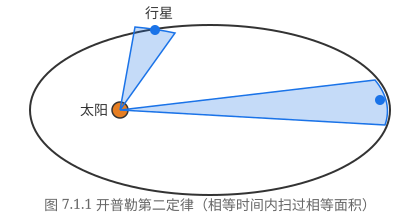
其实，用分割、求和与求极限相结合的方法计算不规则几何图形面积的想法可以追溯到遥远的古希腊阿基米德的“穷竭法”．Kepler 之后的许多数学家在他的思想的启发下，对“穷竭法”作了重大的完善和发展工作，成了为定积分奠基的先驱者．比如，为了求出由两条直角边和一条抛物线 $y = x^2$ 所围成的所谓曲边三角形的面积，可以采用以下的做法（如图 7.1.2）：
将 $[0, 1]$ 分成 $n$ 个长度为 $h = \dfrac{1}{n}$ 的小区间，其分割点（称为分点）为
$$ x_i = ih, \quad i = 0, 1, 2, \dots, n - 1, n. $$先在每个小区间 $[x_{i-1}, x_i]$ 上，构造以 $h$ 为底、以 $f(x_{i-1}) = x_{i-1}^2$ 为高的小矩形，则所有
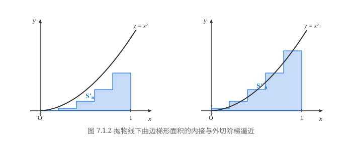
这些小矩形的面积之和为
$$ S_n' = \sum_{i=1}^n h f(x_{i-1}) = \sum_{i=1}^n \frac{1}{n}\left(\frac{i-1}{n}\right)^2 = \frac{1}{n^3}\sum_{i=1}^{n-1} i^2 = \frac{(n-1)n(2n-1)}{6n^3} = \frac{(n-1)(2n-1)}{6n^2}. $$再在每个小区间 $[x_{i-1}, x_i]$ 上，构造以 $h$ 为底、以 $f(x_i) = x_i^2$ 为高的小矩形，则所有这些小矩形的面积之和为
$$ S_n'' = \sum_{i=1}^n h f(x_i) = \sum_{i=1}^n \frac{1}{n}\left(\frac{i}{n}\right)^2 = \frac{1}{n^3}\sum_{i=1}^n i^2 = \frac{n(n+1)(2n+1)}{6n^3} = \frac{(n+1)(2n+1)}{6n^2}. $$设曲边三角形的面积为 $S$，则有
$$ S_n' < S < S_n''. $$利用极限的运算法则，容易求得
$$ \lim_{n\to\infty} S_n' = \lim_{n\to\infty}\frac{(n-1)(2n-1)}{6n^2} = \frac{1}{3} $$与
$$ \lim_{n\to\infty} S_n'' = \lim_{n\to\infty}\frac{(n+1)(2n+1)}{6n^2} = \frac{1}{3}. $$由极限的夹逼性，可知曲边三角形的面积为
$$ S = \frac{1}{3}. $$由此可以想到，如果在每个小区间 $[x_{i-1}, x_i]$ 上任意取点 $\xi_i \in [x_{i-1}, x_i]$，并构造以 $h$ 为底、以 $f(\xi_i) = \xi_i^2$ 为高的小矩形，则所有这些小矩形的面积之和为 $\sum\limits_{i=1}^n \dfrac{1}{n}\xi_i^2$，显然仍然有
$$ S_n' \le \sum_{i=1}^n \frac{1}{n}\xi_i^2 \le S_n'', $$令 $n \to \infty$，由极限的夹逼性，得到 $\lim\limits_{n\to\infty}\dfrac{1}{n}\sum\limits_{i=1}^n \xi_i^2 = \dfrac{1}{3}$，就是所求的曲边三角形的面积．
利用上述思想，我们来求由连续曲线 $y = f(x)$（假设 $f(x) \ge 0$），直线 $x = a, x = b$ 和 $x$ 轴围成的曲边梯形的面积（如图 7.1.3）：
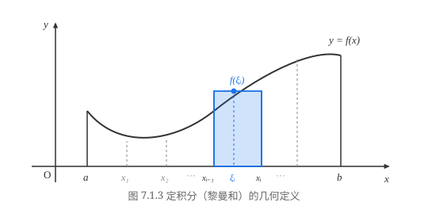
在 $[a, b]$ 中取一系列的分点 $x_i$，作成一种划分
$$ P: a = x_0 < x_1 < x_2 < \cdots < x_n = b, $$记小区间 $[x_{i-1}, x_i]$ 的长度为
$$ \Delta x_i = x_i - x_{i-1}, $$并在每个小区间上任意取一点 $\xi_i$，用底为 $\Delta x_i$，高为 $f(\xi_i)$ 的矩形面积近似代替小的曲边梯形的面积，那么这些小矩形面积之和
$$ \sum_{i=1}^n f(\xi_i)\Delta x_i $$就是整个大的曲边梯形的面积的近似．令 $\lambda = \max\limits_{1\le i\le n}(\Delta x_i)$，当 $\lambda \to 0$ 时，若极限
$$ \lim_{\lambda\to 0}\sum_{i=1}^n f(\xi_i)\Delta x_i $$存在，那么这个极限值就应该定义为曲边梯形的面积．
我们再来看一个物理学中的典型例子：变速直线运动的路程问题．
设一质点作变速直线运动，已知其运动速度 $v = v(t)$ 是时间区间 $[T_1, T_2]$ 上的非负连续函数，求质点在这段时间内所走过的路程 $s$．
由于速度是随时间变化的，不能直接用“路程 = 速度 × 时间”的匀速公式来计算．但我们可以采用同样的“分割、求近似、求和、取极限”的步骤：
在 $[T_1, T_2]$ 中任意插入分点
$$ T_1 = t_0 < t_1 < t_2 < \cdots < t_n = T_2, $$将时间区间分成 $n$ 个小段 $[t_{i-1}, t_i]$，其时间差为 $\Delta t_i = t_i - t_{i-1}$．在每个小时间段 $[t_{i-1}, t_i]$ 上任取一个时刻 $\tau_i \in [t_{i-1}, t_i]$，由于 $v(t)$ 连续，当 $\Delta t_i$ 很小时，在这一小段时间内的速度变化很小，因而质点在这段时间内走过的路程 $\Delta s_i$ 可以近似地看作匀速运动的路程：
$$ \Delta s_i \approx v(\tau_i)\Delta t_i. $$将所有小时间段上的近似路程相加，就得到总路程 $s$ 的近似值：
$$ s \approx \sum_{i=1}^n v(\tau_i)\Delta t_i. $$记 $\lambda = \max\limits_{1\le i\le n}\Delta t_i$，令 $\lambda \to 0$，若上述和式的极限存在，则该极限值即为质点在 $[T_1, T_2]$ 上走过的真实总路程：
$$ s = \lim_{\lambda\to 0}\sum_{i=1}^n v(\tau_i)\Delta t_i. $$上面两个来自几何与物理的不同问题，其数学本质是完全一致的：都是将一个整体量分解为局部的微小量，用局部常量近似替代变量，通过求和形成局部近似和式，最后令分割的细度趋于零取极限，从而得出精确的整体量．
定积分的定义
设 $f(x)$ 是定义于 $[a, b]$ 上的函数，若要求对任意划分 $P$ 和任意 $\xi_i \in [x_{i-1}, x_i]$，极限 $\lim\limits_{\lambda\to 0}\sum\limits_{i=1}^n f(\xi_i)\Delta x_i$ 都存在，则 $f(x)$ 必须是 $[a, b]$ 上的有界函数（证明留作习题）．为此，在讨论函数的定积分时，我们首先要求函数是有界的．
在记号 $\int_a^b f(x)\,\mathrm{d}x$ 中，$f(x)$ 称为被积函数，$f(x)\,\mathrm{d}x$ 称为被积表达式，$x$ 称为积分变量，$a$ 称为积分下限，$b$ 称为积分上限，$[a, b]$ 称为积分区间．和式 $\sum\limits_{i=1}^n f(\xi_i)\Delta x_i$ 称为函数 $f(x)$ 对应于划分 $P$ 及样本点组 $\{\xi_i\}$ 的黎曼和（Riemann 和）或积分和．
用 $\varepsilon - \delta$ 语言来叙述，定义 7.1.1 的含义是：设 $I$ 是一个确定的实数，若对任意给定的 $\varepsilon > 0$，都存在 $\delta > 0$，使得对 $[a, b]$ 的任何细度 $\lambda < \delta$ 的划分 $P$ 以及在小区间上任意选取的点组 $\{\xi_i\}$，都有
$$ \left| \sum_{i=1}^n f(\xi_i)\Delta x_i - I \right| < \varepsilon, $$则称 $f(x)$ 在 $[a, b]$ 上可积，且 $\int_a^b f(x)\,\mathrm{d}x = I$．
例 7.1.1 按定义计算定积分 $\int_0^1 x\,\mathrm{d}x$．
解 $f(x) = x$ 在 $[0, 1]$ 上是有界函数．因为我们已知对任一划分 $P$ 和样本点 $\xi_i$，极限若存在则与划分无关，故不妨采用等距划分：分点为 $x_i = \dfrac{i}{n} \ (i = 0, 1, \dots, n)$，此时每个小区间的长度为 $\Delta x_i = \dfrac{1}{n}$，细度 $\lambda = \dfrac{1}{n}$．取样本点为每个小区间的中点 $\xi_i = \dfrac{x_{i-1} + x_i}{2} = \dfrac{2i - 1}{2n}$，则黎曼和为
$$ \sum_{i=1}^n f(\xi_i)\Delta x_i = \sum_{i=1}^n \frac{2i - 1}{2n}\cdot\frac{1}{n} = \frac{1}{2n^2}\sum_{i=1}^n (2i - 1) = \frac{1}{2n^2}\cdot n^2 = \frac{1}{2}. $$令 $\lambda = \dfrac{1}{n} \to 0$（即 $n \to \infty$），由于上式对每个 $n$ 恒等于 $\dfrac{1}{2}$，故其极限为 $\dfrac{1}{2}$．由定积分定义，
$$ \int_0^1 x\,\mathrm{d}x = \frac{1}{2}. $$如果取右端点 $\xi_i = x_i = \dfrac{i}{n}$，则和式为
$$ \sum_{i=1}^n \frac{i}{n}\cdot\frac{1}{n} = \frac{1}{n^2}\frac{n(n+1)}{2} = \frac{n+1}{2n}, $$当 $n \to \infty$ 时，其极限同样是 $\dfrac{1}{2}$．
Darboux 和
按定义 7.1.1 判别一个函数的可积性并求出积分值是极其困难的，因为要对任意可能的划分和任意选取的样本点进行验证．为此，数学家 Darboux 引进了大和与小和的概念，建立了一套严格且极其便利的可积性理论．
设 $f(x)$ 是 $[a, b]$ 上的有界函数，$P: a = x_0 < x_1 < \cdots < x_n = b$ 是 $[a, b]$ 的一个划分．在每个小区间 $[x_{i-1}, x_i]$ 上，记
$$ M_i = \sup_{x\in [x_{i-1}, x_i]} f(x), \quad m_i = \inf_{x\in [x_{i-1}, x_i]} f(x). $$称
$$ \overline{S}(P) = \sum_{i=1}^n M_i \Delta x_i $$为函数 $f(x)$ 对应于划分 $P$ 的 Darboux 大和（或上和）；称
$$ \underline{S}(P) = \sum_{i=1}^n m_i \Delta x_i $$为函数 $f(x)$ 对应于划分 $P$ 的 Darboux 小和（或下和）．如图 7.1.4 所示，顶边为实线的矩形面积之和为大和，顶边为虚线的矩形面积之和为小和．
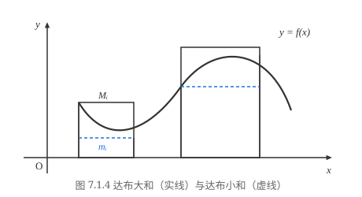
显然，对每个小区间 $[x_{i-1}, x_i]$ 上任意选取的样本点 $\xi_i$，都有 $m_i \le f(\xi_i) \le M_i$，因此对任意的 Riemann 和恒成立
$$ \underline{S}(P) \le \sum_{i=1}^n f(\xi_i)\Delta x_i \le \overline{S}(P). $$设 $P, P'$ 是区间 $[a, b]$ 的两个划分，若划分 $P'$ 包含 $P$ 的所有分点（即 $P'$ 拥有更多的分点），则称 $P'$ 是 $P$ 的一个加细（Refinement），记作 $P \subset P'$．
- $\underline{S}(P) \le \underline{S}(P') \le \overline{S}(P') \le \overline{S}(P)$（即划分越细，小和不减，大和不增）；
- $\overline{S}(P) - \overline{S}(P') \le 2pM\lambda$，$ \underline{S}(P') - \underline{S}(P) \le 2pM\lambda$．
证 先设 $P'$ 只比 $P$ 多增加了一个分点 $x^* \in (x_{k-1}, x_k)$．记
$$ M_k' = \sup_{x\in [x_{k-1}, x^*]} f(x), \quad M_k'' = \sup_{x\in [x^*, x_k]} f(x). $$显然 $M_k' \le M_k, M_k'' \le M_k$．于是
$$ \begin{aligned} \overline{S}(P) - \overline{S}(P') &= M_k(x_k - x_{k-1}) - [M_k'(x^* - x_{k-1}) + M_k''(x_k - x^*)] \\ &= (M_k - M_k')(x^* - x_{k-1}) + (M_k - M_k'')(x_k - x^*) \ge 0. \end{aligned} $$由于 $M_k - M_k' \le 2M, M_k - M_k'' \le 2M$，故
$$ \overline{S}(P) - \overline{S}(P') \le 2M(x_k - x_{k-1}) \le 2M\lambda. $$同理可证 $\underline{S}(P') - \underline{S}(P) \ge 0$ 且 $\underline{S}(P') - \underline{S}(P) \le 2M\lambda$．若增加了 $p$ 个分点，只需重复上述步骤 $p$ 次即得证．
证毕
证 考虑 $P_1$ 与 $P_2$ 的公共加细划分 $P = P_1 \cup P_2$．由引理 7.1.1，
$$ \underline{S}(P_1) \le \underline{S}(P) \le \overline{S}(P) \le \overline{S}(P_2). $$证毕
引理 7.1.2 告诉我们：小和集合 $\{\underline{S}(P)\}$ 中的任何一个数都不大于大和集合 $\{\overline{S}(P)\}$ 中的任何一个数．因此，数集 $\{\underline{S}(P)\}$ 有上界（任意一个大和都是它的上界），数集 $\{\overline{S}(P)\}$ 有下界（任意一个小和都是它的下界）．由实数完备性原理，确界存在：
由引理 7.1.2，显然恒有
$$ \underline{S}(P) \le \underline{I} \le \overline{I} \le \overline{S}(P). $$证 只证上积分的情形．任给 $\varepsilon > 0$，由下确界的定义，存在一个固定的划分 $P_0$，使得
$$ \overline{S}(P_0) < \overline{I} + \frac{\varepsilon}{2}. $$设 $P_0$ 的分点个数为 $p+1$（即除了端点 $a, b$ 外有 $p$ 个内分点）．令 $\delta = \dfrac{\varepsilon}{4pM}$（设 $M = \sup |f(x)| > 0$）．对细度 $\lambda < \delta$ 的任何划分 $P$，考虑公共加细划分 $P' = P \cup P_0$．由于 $P'$ 最多只比 $P$ 多 $p$ 个分点，应用引理 7.1.1，
$$ \overline{S}(P) - \overline{S}(P') \le 2pM\lambda < 2pM\delta = \frac{\varepsilon}{2}. $$又因为 $P_0 \subset P'$，故 $\overline{S}(P') \le \overline{S}(P_0)$．从而
$$ \overline{I} \le \overline{S}(P) < \overline{S}(P') + \frac{\varepsilon}{2} \le \overline{S}(P_0) + \frac{\varepsilon}{2} < \overline{I} + \varepsilon. $$这正是 $\lim\limits_{\lambda\to 0}\overline{S}(P) = \overline{I}$ 的定义．同理可证下积分的极限结论．
证毕
证 必要性：若 $f(x)$ 可积，积分值为 $I$．由夹逼不等式，对任意 $\xi_i \in [x_{i-1}, x_i]$，$\underline{S}(P) \le \sum f(\xi_i)\Delta x_i \le \overline{S}(P)$，由上确界和下确界性质，容易得出 $\underline{S}(P) \le I \le \overline{S}(P)$，令 $\lambda \to 0$ 取极限即得 $\underline{I} = I = \overline{I}$．
充分性：若 $\underline{I} = \overline{I} = I$，则由引理 7.1.3，$\lim\limits_{\lambda\to 0}\underline{S}(P) = \lim\limits_{\lambda\to 0}\overline{S}(P) = I$．由夹逼定理，对任意选取的样本点 $\xi_i$，必有 $\lim\limits_{\lambda\to 0}\sum\limits_{i=1}^n f(\xi_i)\Delta x_i = I$，故 $f(x)$ 可积．
证毕
记
$$ \omega_i = M_i - m_i $$为函数 $f(x)$ 在小区间 $[x_{i-1}, x_i]$ 上的振幅（Oscillation）．则大和与小和之差恰为
$$ \overline{S}(P) - \underline{S}(P) = \sum_{i=1}^n (M_i - m_i)\Delta x_i = \sum_{i=1}^n \omega_i \Delta x_i. $$定理 7.1.2 的几何意义是：当分割无限细分时（即 $\lambda \to 0$），图 7.1.5 中的阴影部分面积之和趋于零．
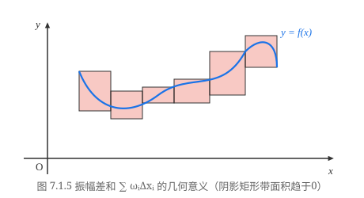
Riemann 可积的充分必要条件
由定理 7.1.2 的振幅可积准则，我们可以直接判定某些函数类的可积性．
证 设 $f(x)$ 在 $[a, b]$ 上连续，则它在 $[a, b]$ 上一致连续．也就是说，对任意 $\varepsilon > 0$，存在 $\delta > 0$，对任意 $x', x'' \in [a, b]$，只要 $|x' - x''| < \delta$，就有
$$ |f(x') - f(x'')| < \frac{\varepsilon}{b - a}. $$在 $[a, b]$ 的任何细度 $\lambda < \delta$ 的划分 $P$ 中，每个小区间 $[x_{i-1}, x_i]$ 上的振幅满足
$$ \omega_i = M_i - m_i = f(x_i') - f(x_i'') < \frac{\varepsilon}{b - a}, $$于是
$$ \sum_{i=1}^n \omega_i \Delta x_i < \frac{\varepsilon}{b - a}\sum_{i=1}^n \Delta x_i = \varepsilon. $$由定理 7.1.2，$f(x)$ 在 $[a, b]$ 上可积．
证毕
证 设 $f(x)$ 在 $[a, b]$ 上单调，不妨设其为单调增加，则在任意小区间 $[x_{i-1}, x_i]$ 上，$f(x)$ 的振幅为 $\omega_i = f(x_i) - f(x_{i-1})$．
于是，对任意给定的 $\varepsilon > 0$，取 $\delta = \dfrac{\varepsilon}{f(b) - f(a)} > 0$（若 $f(b) = f(a)$ 则为常数函数，结论平凡）．当 $\lambda = \max(\Delta x_i) < \delta$ 时，
$$ \sum_{i=1}^n \omega_i \Delta x_i \le \lambda \sum_{i=1}^n [f(x_i) - f(x_{i-1})] = \lambda [f(b) - f(a)] < \delta [f(b) - f(a)] = \varepsilon. $$由定理 7.1.2，$f(x)$ 在 $[a, b]$ 上可积．
证毕
对于实际应用来说，定理 7.1.2 对于判别函数不可积可能更为方便一些，如对 $[0, 1]$ 上的 Dirichlet 函数
$$ D(x) = \begin{cases} 1, & x \text{ 为有理数}, \\ 0, & x \text{ 为无理数}, \end{cases} $$不管如何作分割，它在每个小区间 $[x_{i-1}, x_i]$ 上的振幅恒有 $\omega_i = 1$，于是，
$$ \lim_{\lambda\to 0}\sum_{i=1}^n \omega_i \Delta x_i = \lim_{\lambda\to 0}\sum_{i=1}^n \Delta x_i = 1 \neq 0, $$所以 Dirichlet 函数不是 Riemann 可积的．
但是，要通过“对任意划分都有 $\sum \omega_i \Delta x_i \to 0 \ (\lambda \to 0)$”来证明函数可积，一般说来是很困难的，下面我们给出一个更易于判断的充分必要条件．
让我们回顾一下 Darboux 定理．仔细分析其证明过程可以知道，它实际上证明了：对任意给定的 $\varepsilon > 0$，只要有某一个划分 $P'$，使得
$$ 0 \le \overline{S}(P') - \underline{I} < \frac{\varepsilon}{2} \quad \left( \text{或 } 0 \le \overline{I} - \underline{S}(P') < \frac{\varepsilon}{2} \right), $$那么就一定存在某个 $\delta > 0$，对满足 $\lambda = \max(\Delta x_i) < \delta$ 的任意一种划分 $P$，必有
$$ 0 \le \overline{S}(P) - \overline{I} < \varepsilon \quad \left( \text{或 } 0 \le \underline{I} - \underline{S}(P) < \varepsilon \right). $$利用这一思想，即可推出如下重要结论：
证明留给读者．
证 设 $f(x)$ 在 $[a, b]$ 上的不连续点共有 $k$ 个，记为 $a \le p_1 < p_2 < \cdots < p_k \le b$，设相邻两个点之间的最小距离为 $d$．不妨假设 $p_1$ 和 $p_k$ 在 $[a, b]$ 的内部．
对任意给定的 $\varepsilon > 0$，取 $\delta = \min\left\{ \dfrac{p_1 - a}{2}, \dfrac{b - p_k}{2}, \dfrac{d}{3}, \dfrac{\varepsilon}{4k(M - m)} \right\}$，其中 $M = \sup f(x), m = \inf f(x)$．以这 $k$ 个点为中心，每个点两边对称地取两个端点 $p_j - \delta, p_j + \delta$ 为分点，将 $[a, b]$ 分成 $2k + 1$ 个子区间，于是 $f(x)$ 在子区间 $[a, p_1 - \delta], [p_1 + \delta, p_2 - \delta], \dots, [p_k + \delta, b]$ 上是连续的．由于连续函数在这些子区间上都可积，所以在每个连续子区间上分别存在分点，使得该子区间上的振幅乘区间长之和小于 $\dfrac{\varepsilon}{2(k + 1)}$．
将所有分点合为一组，看成是 $[a, b]$ 的一个划分，记 $\omega_j'$ 为 $f(x)$ 在 $[p_j - \delta, p_j + \delta]$ 上的振幅，即有
$$ \sum_{i=1}^n \omega_i \Delta x_i < (k + 1)\frac{\varepsilon}{2(k + 1)} + 2\delta \cdot k(M - m) \le \frac{\varepsilon}{2} + \frac{\varepsilon}{4k(M - m)} \cdot 2k(M - m) = \varepsilon. $$由定理 7.1.3，$f(x)$ 在 $[a, b]$ 上可积．当 $p_1$ 和 $p_k$ 为 $[a, b]$ 的端点时可类似证得．
证毕
显然，若对任意划分，一个函数在小区间上的振幅的最大值 $\max(\omega_i)$ 随着 $\lambda \to 0$ 而趋于零，那它当然就是个可积函数．但定理 7.1.2 同时也启发我们，若一个函数虽然它的振幅的最大值 $\max(\omega_i)$ 并不随 $\lambda \to 0$ 而趋于零，但却可以使振幅不趋于零的小区间的长度之和任意的小，这个函数仍然是 Riemann 可积的．
例 7.1.2 证明 Riemann 函数
$$ R(x) = \begin{cases} \dfrac{1}{q}, & x = \dfrac{p}{q} \ (p \in \mathbb{N}^*, q \in \mathbb{Z}^+, p, q \text{ 互质}), \\ 0, & x = 0 \text{ 或 } x \text{ 为无理数} \end{cases} $$在 $[0, 1]$ 上可积，且 $\int_0^1 R(x)\,\mathrm{d}x = 0$．
证 由 Riemann 函数的性质，对任意给定的 $0 < \varepsilon < 2$，在 $[0, 1]$ 上使得 $R(x) \ge \dfrac{\varepsilon}{2}$ 的点至多只有有限个，不妨设是 $k$ 个，记为 $0 \le p_1 < p_2 < \cdots < p_k \le 1$．
作 $[0, 1]$ 的划分，使得每个点 $p_j$ 落在长度小于 $\dfrac{\varepsilon}{2k}$ 的小区间 $[x_{2j-1}, x_{2j}]$ 内部（如图 7.1.6 所示）．
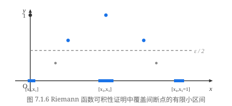
图 7.1.6 表示的是 $k = 3$ 的情况．由于包含 $p_j$ 的小区间总长度
$$ \sum_{j=1}^k \Delta x_{2j} < k\cdot \frac{\varepsilon}{2k} = \frac{\varepsilon}{2}, $$且在这些小区间上振幅 $\omega_{2j} \le 1$；而在其余的小区间上，恒有 $R(x) < \dfrac{\varepsilon}{2}$，其振幅 $\omega_i < \dfrac{\varepsilon}{2}$，且其余小区间长度之和小于 $1$．因此得到
$$ \sum_{i=1}^n \omega_i \Delta x_i < k \cdot \frac{\varepsilon}{2k} + \frac{\varepsilon}{2} \cdot 1 = \varepsilon. $$由定理 7.1.3，Riemann 函数在 $[0, 1]$ 上可积．又因为在每个小区间上均能取到无理点（使得 $R(\xi_i) = 0$），故其积分值必为 $0$．
证毕
习题 7.1
(1) $\displaystyle \int_0^1 (ax + b)\,\mathrm{d}x$；
(2) $\displaystyle \int_0^1 a^x\,\mathrm{d}x \ (a > 0)$．
证明：若对 $[a, b]$ 的任意划分和任意 $\xi_i \in [x_{i-1}, x_i]$，极限 $\displaystyle \lim_{\lambda \to 0} \sum_{i=1}^n f(\xi_i)\Delta x_i$ 都存在，则 $f(x)$ 必是 $[a, b]$ 上的有界函数．
证明 Darboux 定理的后半部分：对任意有界函数 $f(x)$，恒有
$$ \lim_{\lambda \to 0^+} S(P) = I. $$证明定理 7.1.3．
(1) $\displaystyle f(x) = \begin{cases} \dfrac{1}{x} - \left[\dfrac{1}{x}\right], & x \ne 0, \\ 0, & x = 0; \end{cases}$
(2) $\displaystyle f(x) = \begin{cases} -1, & x \text{ 为有理数}, \\ 1, & x \text{ 为无理数}; \end{cases}$
(3) $\displaystyle f(x) = \begin{cases} 0, & x \text{ 为有理数}, \\ x, & x \text{ 为无理数}; \end{cases}$
(4) $\displaystyle f(x) = \begin{cases} \mathrm{sgn}\left(\sin\dfrac{\pi}{x}\right), & x \ne 0, \\ 0, & x = 0. \end{cases}$
设 $f(x)$ 在 $[a, b]$ 上可积，且在 $[a, b]$ 上满足 $|f(x)| \ge m > 0$（$m$ 为常数），证明 $\dfrac{1}{f(x)}$ 在 $[a, b]$ 上也可积．
设有界函数 $f(x)$ 在 $[a, b]$ 上的不连续点为 $\{x_n\}_{n=1}^\infty$，且 $\displaystyle \lim_{n\to\infty} x_n$ 存在，证明 $f(x)$ 在 $[a, b]$ 上可积．
设 $f(x)$ 是区间 $[a, b]$ 上的有界函数．证明：$f(x)$ 在 $[a, b]$ 上可积的充分必要条件是对任意给定的 $\varepsilon > 0$ 与 $\sigma > 0$，存在划分 $P$，使得振幅 $\omega_i \ge \varepsilon$ 的那些小区间 $[x_{i-1}, x_i]$ 的长度之和
$$ \sum_{\omega_i \ge \varepsilon} \Delta x_i < \sigma $$（即振幅不能任意小的那些小区间的长度之和可以任意小）．
设 $f(x)$ 在 $[a, b]$ 上可积，$A \le f(x) \le B$，$g(u)$ 在 $[A, B]$ 上连续，证明复合函数 $g(f(x))$ 在 $[a, b]$ 上可积．
§2 定积分的基本性质
本节中，我们利用定积分的定义及其存在的充分必要条件，来给出定积分的一些基本性质，这些性质无论对于定积分的理论分析还是实际计算，都是十分重要的．
设 $f(x)$ 和 $g(x)$ 都在 $[a, b]$ 上可积，$k_1$ 和 $k_2$ 是常数．则函数 $k_1 f(x) + k_2 g(x)$ 在 $[a, b]$ 上也可积，且有
$$ \int_a^b \left[k_1 f(x) + k_2 g(x)\right]\,\mathrm{d}x = k_1 \int_a^b f(x)\,\mathrm{d}x + k_2 \int_a^b g(x)\,\mathrm{d}x. $$证 对 $[a, b]$ 的任意一个划分，
$$ a = x_0 < x_1 < x_2 < \cdots < x_n = b $$和任意点 $\xi_i \in [x_{i-1}, x_i]$，成立等式
$$ \sum_{i=1}^n \left[k_1 f(\xi_i) + k_2 g(\xi_i)\right]\Delta x_i = k_1 \sum_{i=1}^n f(\xi_i)\Delta x_i + k_2 \sum_{i=1}^n g(\xi_i)\Delta x_i. $$两边令 $\lambda = \max\limits_{1 \le i \le n}(\Delta x_i) \to 0$，由于 $f(x)$ 和 $g(x)$ 都在 $[a, b]$ 上可积，因此有
$$ \begin{aligned} \lim_{\lambda \to 0} \sum_{i=1}^n \left[k_1 f(\xi_i) + k_2 g(\xi_i)\right]\Delta x_i &= k_1 \lim_{\lambda \to 0}\sum_{i=1}^n f(\xi_i)\Delta x_i + k_2 \lim_{\lambda \to 0}\sum_{i=1}^n g(\xi_i)\Delta x_i \\ &= k_1 \int_a^b f(x)\,\mathrm{d}x + k_2 \int_a^b g(x)\,\mathrm{d}x, \end{aligned} $$由定义，$k_1 f(x) + k_2 g(x)$ 在 $[a, b]$ 上可积，且
$$ \int_a^b \left[k_1 f(x) + k_2 g(x)\right]\,\mathrm{d}x = k_1 \int_a^b f(x)\,\mathrm{d}x + k_2 \int_a^b g(x)\,\mathrm{d}x. $$证毕
由定积分的线性性质和上一节的推论 3 可以得出一个重要结论：
若 $f(x)$ 在 $[a, b]$ 上可积，而 $g(x)$ 只在有限个点上与 $f(x)$ 的取值不相同，则 $g(x)$ 在 $[a, b]$ 上也可积，并且有
$$ \int_a^b f(x)\,\mathrm{d}x = \int_a^b g(x)\,\mathrm{d}x. $$这就是说，若在有限个点上改变一个可积函数的函数值，并不影响其可积性和积分值．推论作为习题留给读者自证．
设 $f(x)$ 和 $g(x)$ 都在 $[a, b]$ 上可积，则 $f(x)\cdot g(x)$ 在 $[a, b]$ 上也可积．
证 由于 $f(x)$ 和 $g(x)$ 都在 $[a, b]$ 上可积，所以它们在 $[a, b]$ 上有界．因此存在常数
$M$，满足
$$ |f(x)| \le M \quad \text{和} \quad |g(x)| \le M, \quad x \in [a, b]. $$对 $[a, b]$ 的任意划分
$$ a = x_0 < x_1 < x_2 < \cdots < x_n = b, $$设 $\hat{x}$ 和 $\bar{x}$ 是 $[x_{i-1}, x_i]$ 中的任意两点，则有
$$ \begin{aligned} |f(\hat{x})g(\hat{x}) - f(\bar{x})g(\bar{x})| &\le |f(\hat{x}) - f(\bar{x})|\cdot |g(\hat{x})| + |f(\bar{x})|\cdot |g(\hat{x}) - g(\bar{x})| \\ &\le M\left[|f(\hat{x}) - f(\bar{x})| + |g(\hat{x}) - g(\bar{x})|\right]. \end{aligned} $$记 $f(x)\cdot g(x)$ 在小区间 $[x_{i-1}, x_i]$ 上的振幅为 $\omega_i$，$f(x)$ 和 $g(x)$ 在小区间 $[x_{i-1}, x_i]$ 上的振幅分别为 $\omega'_i$ 和 $\omega''_i$，则上式意味着
$$ \omega_i \le M(\omega'_i + \omega''_i), $$因此
$$ 0 \le \sum_{i=1}^n \omega_i \Delta x_i \le M\left(\sum_{i=1}^n \omega'_i \Delta x_i + \sum_{i=1}^n \omega''_i \Delta x_i\right). $$由于 $f(x)$ 和 $g(x)$ 都在 $[a, b]$ 上可积，因而当 $\lambda = \max\limits_{1 \le i \le n}(\Delta x_i) \to 0$ 时，上面的不等式的右端趋于零．由极限的夹逼性，得到
$$ \lim_{\lambda \to 0} \sum_{i=1}^n \omega_i \Delta x_i = 0, $$根据 Riemann 可积的充分必要条件，即知 $f(x)\cdot g(x)$ 在 $[a, b]$ 可积．
证毕
要注意的是，一般说来
$$ \int_a^b f(x)g(x)\,\mathrm{d}x \ne \left(\int_a^b f(x)\,\mathrm{d}x\right)\cdot\left(\int_a^b g(x)\,\mathrm{d}x\right), $$请读者自行举出例子（留作习题）．
设 $f(x)$ 和 $g(x)$ 都在 $[a, b]$ 上可积，且在 $[a, b]$ 上恒有 $f(x) \ge g(x)$，则成立
$$ \int_a^b f(x)\,\mathrm{d}x \ge \int_a^b g(x)\,\mathrm{d}x. $$证 我们只要证明对 $[a, b]$ 上的非负函数 $f(x)$，成立
$$ \int_a^b f(x)\,\mathrm{d}x \ge 0. $$由于在 $[a, b]$ 上 $f(x) \ge 0$，因此对 $[a, b]$ 的任意一个划分
$$ a = x_0 < x_1 < x_2 < \cdots < x_n = b $$和任意点 $\xi_i \in [x_{i-1}, x_i]$，有
$$ \sum_{i=1}^n f(\xi_i)\Delta x_i \ge 0. $$令 $\lambda = \max\limits_{1 \le i \le n}(\Delta x_i) \to 0$，即得到
$$ \int_a^b f(x)\,\mathrm{d}x = \lim_{\lambda \to 0}\sum_{i=1}^n f(\xi_i)\Delta x_i \ge 0. $$证毕
请读者自行分析性质 3 的几何意义．
设 $f(x)$ 在 $[a, b]$ 上可积，则 $|f(x)|$ 在 $[a, b]$ 上也可积，且成立
$$ \left|\int_a^b f(x)\,\mathrm{d}x\right| \le \int_a^b |f(x)|\,\mathrm{d}x. $$证 由于对于任意两点 $\hat{x}$ 和 $\bar{x}$，都有
$$ ||f(\hat{x})| - |f(\bar{x})|| \le |f(\hat{x}) - f(\bar{x})|, $$仿照性质 2 的证明即可证得 $|f(x)|$ 在 $[a, b]$ 上可积．
又因为对任意 $x \in [a, b]$，成立
$$ -|f(x)| \le f(x) \le |f(x)|, $$由性质 3 得到
$$ -\int_a^b |f(x)|\,\mathrm{d}x \le \int_a^b f(x)\,\mathrm{d}x \le \int_a^b |f(x)|\,\mathrm{d}x, $$这就是
$$ \left|\int_a^b f(x)\,\mathrm{d}x\right| \le \int_a^b |f(x)|\,\mathrm{d}x. $$证毕
要注意的是，性质 4 的逆命题是不成立的，也就是说，由 $|f(x)|$ 在 $[a, b]$ 上可积并不能得出 $f(x)$ 在 $[a, b]$ 上也可积．
例如，函数
$$ f(x) = \begin{cases} 1, & x \text{ 为有理数}, \\ -1, & x \text{ 为无理数}, \end{cases} \quad x \in [0, 1] $$在任意一个小区间上的振幅恒为 $2$，所以是不可积的．但是
$$ |f(x)| \equiv 1, \quad x \in [0, 1], $$它在 $[0, 1]$ 上显然是可积的．
设 $f(x)$ 在 $[a, b]$ 上可积，则对任意点 $c \in [a, b]$，$f(x)$ 在 $[a, c]$ 和 $[c, b]$ 上都可积；反过来，若 $f(x)$ 在 $[a, c]$ 和 $[c, b]$ 上都可积，则 $f(x)$ 在 $[a, b]$ 上可积．此时成立
$$ \int_a^b f(x)\,\mathrm{d}x = \int_a^c f(x)\,\mathrm{d}x + \int_c^b f(x)\,\mathrm{d}x. $$证 先假定 $f(x)$ 在 $[a, b]$ 上可积，设 $c$ 是 $[a, b]$ 中任意给定的一点．
由定理 7.1.3，对任意给定的 $\varepsilon > 0$，存在 $[a, b]$ 的一个划分
$$ a = x_0 < x_1 < x_2 < \cdots < x_n = b, $$使得满足
$$ \sum_{i=1}^n \omega_i \Delta x_i < \varepsilon. $$我们总可以假定 $c$ 是其中的某一个分点 $x_k$，否则只要在原有划分中插入分点 $c$ 作成新的划分，由 Darboux 和的性质（引理 7.1.1），上面的不等式仍然成立．
将
$$ a = x_0 < x_1 < x_2 < \cdots < x_k = c $$和
$$ c = x_k < x_{k+1} < x_{k+2} < \cdots < x_n = b $$分别看成是对 $[a, c]$ 和 $[c, b]$ 作的划分，则显然有
$$ \sum_{i=1}^k \omega_i \Delta x_i < \varepsilon \quad \text{和} \quad \sum_{i=k+1}^n \omega_i \Delta x_i < \varepsilon, $$由定理 7.1.3，$f(x)$ 在 $[a, c]$ 和 $[c, b]$ 上都是可积的．
反过来，若 $f(x)$ 在 $[a, c]$ 和 $[c, b]$ 上都可积，则对任意给定的 $\varepsilon > 0$，分别存在 $[a, c]$ 和 $[c, b]$ 的划分
$$ a = x'_0 < x'_1 < x'_2 < \cdots < x'_{n_1} = c $$和
$$ c = x''_0 < x''_1 < x''_2 < \cdots < x''_{n_2} = b, $$使得
$$ \sum_{i=1}^{n_1} \omega'_i \Delta x'_i < \frac{\varepsilon}{2} \quad \text{和} \quad \sum_{i=1}^{n_2} \omega''_i \Delta x''_i < \frac{\varepsilon}{2}, $$将这两组分点合起来作为 $[a, b]$ 的一组分点 $\{x_i\}_{i=0}^n$，这里 $n = n_1 + n_2$，于是得到
$$ \sum_{i=1}^n \omega_i \Delta x_i = \sum_{i=1}^{n_1} \omega'_i \Delta x'_i + \sum_{i=1}^{n_2} \omega''_i \Delta x''_i < \varepsilon, $$因此 $f(x)$ 在 $[a, b]$ 上可积．
在 $\displaystyle\int_a^b f(x)\,\mathrm{d}x$，$\displaystyle\int_a^c f(x)\,\mathrm{d}x$ 和 $\displaystyle\int_c^b f(x)\,\mathrm{d}x$ 都存在的条件下，利用定积分的定义，容易证明
$$ \int_a^b f(x)\,\mathrm{d}x = \int_a^c f(x)\,\mathrm{d}x + \int_c^b f(x)\,\mathrm{d}x $$（留作习题）．
证毕
由于规定了
$$ \int_b^a f(x)\,\mathrm{d}x = -\int_a^b f(x)\,\mathrm{d}x, $$读者不难证明，当 $c$ 是 $[a, b]$ 之外的一点时，只要函数 $f(x)$ 的可积性依然保持，定积分的区间可加性依然成立．
设 $f(x)$ 和 $g(x)$ 都在 $[a, b]$ 上可积，$g(x)$ 在 $[a, b]$ 上不变号，则存在 $\eta \in [m, M]$，使得
$$ \int_a^b f(x)g(x)\,\mathrm{d}x = \eta \int_a^b g(x)\,\mathrm{d}x, $$这里 $M$ 和 $m$ 分别表示 $f(x)$ 在 $[a, b]$ 的上确界和下确界．
特别地，若 $f(x)$ 在 $[a, b]$ 上连续，则存在 $\xi \in [a, b]$，使得
$$ \int_a^b f(x)g(x)\,\mathrm{d}x = f(\xi) \int_a^b g(x)\,\mathrm{d}x. $$证 因为 $g(x)$ 在 $[a, b]$ 上不变号，不妨设
$$ g(x) \ge 0, \quad x \in [a, b], $$于是有
$$ m g(x) \le f(x)g(x) \le M g(x), $$由性质 3，得到
$$ m \int_a^b g(x)\,\mathrm{d}x \le \int_a^b f(x)g(x)\,\mathrm{d}x \le M \int_a^b g(x)\,\mathrm{d}x. $$由于 $\displaystyle\int_a^b f(x)g(x)\,\mathrm{d}x$ 和 $\displaystyle\int_a^b g(x)\,\mathrm{d}x$ 都是常数，因而必有某个 $\eta \in [m, M]$，使得
$$ \int_a^b f(x)g(x)\,\mathrm{d}x = \eta \int_a^b g(x)\,\mathrm{d}x. $$若 $f(x)$ 在 $[a, b]$ 上连续，则由闭区间上连续函数的中间值定理，此时必存在某个 $\xi \in [a, b]$，使得 $f(\xi) = \eta$，因此
$$ \int_a^b f(x)g(x)\,\mathrm{d}x = f(\xi)\int_a^b g(x)\,\mathrm{d}x. $$证毕
我们来看一个特殊的情况．当 $f(x)$ 在 $[a, b]$ 上连续，而 $g(x) \equiv 1$ 时，上述积分第一中值定理的结论就变成了
$$ \int_a^b f(x)\,\mathrm{d}x = f(\xi)(b - a). $$它的几何意义十分明确（如图 7.2.1 所示）：当 $f(x) \ge 0$ 时，上式的左边表示由曲线 $y = f(x)$ 和直线 $x = a$、$x = b$ 以及 $x$ 轴围成的曲边梯形的面积，它一定等于以 $[a, b]$ 为底、某个 $f(\xi)$ 为高的矩形面积．
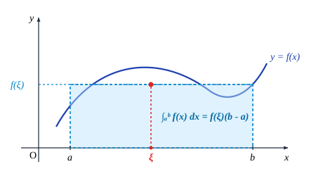
设 $f(x)$ 在 $[a, b]$ 上连续，且 $f(x) > 0$，证明
$$ \frac{1}{b-a}\int_a^b \ln f(x)\,\mathrm{d}x \le \ln\left(\frac{1}{b-a}\int_a^b f(x)\,\mathrm{d}x\right). $$证 将区间 $[a, b]$ $n$ 等分，并设 $x_i = a + \dfrac{i}{n}(b - a)$ ($i = 0, 1, 2, \cdots, n$)，于是 $\Delta x_i = \dfrac{b-a}{n}$ ($i = 1, 2, \cdots, n$)．利用 $\ln x$ 在 $(0, +\infty)$ 上的上凸性，由 Jensen 不等式得
$$ \sum_{i=1}^n \frac{1}{n} \ln f(x_i) \le \ln\left(\sum_{i=1}^n \frac{1}{n} f(x_i)\right), $$即
$$ \frac{1}{b-a}\sum_{i=1}^n \ln f(x_i)\Delta x_i \le \ln\left(\frac{1}{b-a}\sum_{i=1}^n f(x_i)\Delta x_i\right). $$由假设条件知，$f(x)$ 和 $\ln f(x)$ 在 $[a, b]$ 上连续，因此可积．在上式中令 $n \to \infty$，则由定积分的定义及 $\ln x$ 的连续性得
$$ \frac{1}{b-a}\int_a^b \ln f(x)\,\mathrm{d}x \le \ln\left(\frac{1}{b-a}\int_a^b f(x)\,\mathrm{d}x\right). $$证毕
设 $f(x), g(x)$ 在 $[a, b]$ 上连续，$p, q$ 为满足 $\dfrac{1}{p} + \dfrac{1}{q} = 1$ 的正数，证明
$$ \int_a^b |f(x)g(x)|\,\mathrm{d}x \le \left(\int_a^b |f(x)|^p\,\mathrm{d}x\right)^{\frac{1}{p}} \left(\int_a^b |g(x)|^q\,\mathrm{d}x\right)^{\frac{1}{q}}. $$证 当 $f(x) \equiv 0$ 或 $g(x) \equiv 0$ 时，上式显然成立．
否则的话，令
$$ \varphi(x) = \frac{|f(x)|}{\left(\displaystyle\int_a^b |f(x)|^p\,\mathrm{d}x\right)^{\frac{1}{p}}}, \quad \psi(x) = \frac{|g(x)|}{\left(\displaystyle\int_a^b |g(x)|^q\,\mathrm{d}x\right)^{\frac{1}{q}}}, \quad x \in [a, b] $$（注意由本节习题 5 可知 $\displaystyle\int_a^b |f(x)|^p\,\mathrm{d}x$ 和 $\displaystyle\int_a^b |g(x)|^q\,\mathrm{d}x$ 均大于零），
由例 5.1.8 得到
$$ \varphi(x)\psi(x) \le \frac{1}{p}\varphi(x)^p + \frac{1}{q}\psi(x)^q, $$即
$$ \frac{|f(x)g(x)|}{\left(\displaystyle\int_a^b |f(x)|^p\,\mathrm{d}x\right)^{\frac{1}{p}}\left(\displaystyle\int_a^b |g(x)|^q\,\mathrm{d}x\right)^{\frac{1}{q}}} \le \frac{|f(x)|^p}{p \displaystyle\int_a^b |f(x)|^p\,\mathrm{d}x} + \frac{|g(x)|^q}{q \displaystyle\int_a^b |g(x)|^q\,\mathrm{d}x}, \quad x \in [a, b]. $$对上式两边在 $[a, b]$ 上求积分，利用定积分的性质得
$$ \begin{aligned} &\frac{1}{\left(\displaystyle\int_a^b |f(x)|^p\,\mathrm{d}x\right)^{\frac{1}{p}}\left(\displaystyle\int_a^b |g(x)|^q\,\mathrm{d}x\right)^{\frac{1}{q}}}\int_a^b |f(x)g(x)|\,\mathrm{d}x \\ \le &\frac{\displaystyle\int_a^b |f(x)|^p\,\mathrm{d}x}{p \displaystyle\int_a^b |f(x)|^p\,\mathrm{d}x} + \frac{\displaystyle\int_a^b |g(x)|^q\,\mathrm{d}x}{q \displaystyle\int_a^b |g(x)|^q\,\mathrm{d}x} = \frac{1}{p} + \frac{1}{q} = 1. \end{aligned} $$在不等式两边同乘以 $\left(\displaystyle\int_a^b |f(x)|^p\,\mathrm{d}x\right)^{\frac{1}{p}}\left(\displaystyle\int_a^b |g(x)|^q\,\mathrm{d}x\right)^{\frac{1}{q}}$，即得
$$ \int_a^b |f(x)g(x)|\,\mathrm{d}x \le \left(\int_a^b |f(x)|^p\,\mathrm{d}x\right)^{\frac{1}{p}} \left(\int_a^b |g(x)|^q\,\mathrm{d}x\right)^{\frac{1}{q}}. $$证毕
设函数 $f(x)$ 在 $[a, b]$ 上二阶可导，$f\left(\dfrac{a+b}{2}\right) = 0$，记 $M = \sup\limits_{a \le x \le b}|f''(x)|$，证明
$$ \left|\int_a^b f(x)\,\mathrm{d}x\right| \le \frac{M(b-a)^3}{24}. $$证 $f(x)$ 在 $x = \dfrac{a+b}{2}$ 处的带 Lagrange 余项的 Taylor 公式为
$$ \begin{aligned} f(x) &= f\left(\frac{a+b}{2}\right) + f'\left(\frac{a+b}{2}\right)\left(x - \frac{a+b}{2}\right) + \frac{1}{2}f''(\xi)\left(x - \frac{a+b}{2}\right)^2 \\ &= f'\left(\frac{a+b}{2}\right)\left(x - \frac{a+b}{2}\right) + \frac{1}{2}f''(\xi)\left(x - \frac{a+b}{2}\right)^2, \quad x \in [a, b], \end{aligned} $$其中 $a \le \xi \le b$．对等式两边求积分，利用 $\displaystyle\int_a^b \left(x - \frac{a+b}{2}\right)\,\mathrm{d}x = 0$，得到
$$ \begin{aligned} \int_a^b f(x)\,\mathrm{d}x &= f'\left(\frac{a+b}{2}\right)\int_a^b \left(x - \frac{a+b}{2}\right)\,\mathrm{d}x + \frac{1}{2}\int_a^b f''(\xi)\left(x - \frac{a+b}{2}\right)^2\,\mathrm{d}x \\ &= \frac{1}{2}\int_a^b f''(\xi)\left(x - \frac{a+b}{2}\right)^2\,\mathrm{d}x, \end{aligned} $$于是
$$ \left|\int_a^b f(x)\,\mathrm{d}x\right| \le \frac{1}{2}\int_a^b \left|f''(\xi)\left(x - \frac{a+b}{2}\right)^2\right|\,\mathrm{d}x \le \frac{M}{2}\int_a^b \left(x - \frac{a+b}{2}\right)^2\,\mathrm{d}x = \frac{M(b-a)^3}{24}. $$证毕
习题 7.2
设 $f(x)$ 在 $[a, b]$ 上可积，$g(x)$ 在 $[a, b]$ 上定义，且在 $[a, b]$ 中除了有限个点之外，都有 $f(x) = g(x)$，证明 $g(x)$ 在 $[a, b]$ 上也可积，并且有
$$ \int_a^b f(x)\,\mathrm{d}x = \int_a^b g(x)\,\mathrm{d}x. $$设 $f(x)$ 和 $g(x)$ 在 $[a, b]$ 上都可积，请举例说明在一般情况下
$$ \int_a^b f(x)g(x)\,\mathrm{d}x \ne \left(\int_a^b f(x)\,\mathrm{d}x\right)\cdot\left(\int_a^b g(x)\,\mathrm{d}x\right). $$证明：对任意实数 $a, b, c$，只要 $\displaystyle\int_a^b f(x)\,\mathrm{d}x$，$\displaystyle\int_a^c f(x)\,\mathrm{d}x$ 和 $\displaystyle\int_c^b f(x)\,\mathrm{d}x$ 都存在，就成立
$$ \int_a^b f(x)\,\mathrm{d}x = \int_a^c f(x)\,\mathrm{d}x + \int_c^b f(x)\,\mathrm{d}x. $$(1) $\displaystyle \int_0^1 x\,\mathrm{d}x$ 和 $\displaystyle \int_0^1 x^2\,\mathrm{d}x$；
(2) $\displaystyle \int_1^2 x\,\mathrm{d}x$ 和 $\displaystyle \int_1^2 x^2\,\mathrm{d}x$；
(3) $\displaystyle \int_{-2}^{-1} \left(\frac{1}{2}\right)^x\,\mathrm{d}x$ 和 $\displaystyle \int_0^1 2^x\,\mathrm{d}x$；
(4) $\displaystyle \int_0^\pi \sin x\,\mathrm{d}x$ 和 $\displaystyle \int_0^\pi x\,\mathrm{d}x$．
设 $f(x)$ 在 $[a, b]$ 上连续，$f(x) \ge 0$ 但不恒为 $0$，证明
$$ \int_a^b f(x)\,\mathrm{d}x > 0. $$设 $f(x)$ 在 $[a, b]$ 上连续，且 $\displaystyle\int_a^b f^2(x)\,\mathrm{d}x = 0$，证明 $f(x)$ 在 $[a, b]$ 上恒为 $0$．
设函数 $f(x)$ 在 $[a, b]$ 上连续，在 $(a, b)$ 内可导，且满足
$$ \frac{2}{b-a}\int_a^{\frac{a+b}{2}} f(x)\,\mathrm{d}x = f(b). $$证明：存在 $\xi \in (a, b)$，使得 $f'(\xi) = 0$．
设 $\varphi(t)$ 在 $[0, a]$ 上连续，$f(x)$ 在 $(-\infty, +\infty)$ 上二阶可导，且 $f''(x) \ge 0$．证明：
$$ f\left(\frac{1}{a}\int_0^a \varphi(t)\,\mathrm{d}t\right) \le \frac{1}{a}\int_0^a f(\varphi(t))\,\mathrm{d}t. $$设 $f(x)$ 在 $[0, 1]$ 上连续，且单调减少，证明对任意 $\alpha \in [0, 1]$，成立
$$ \int_0^\alpha f(x)\,\mathrm{d}x \ge \alpha \int_0^1 f(x)\,\mathrm{d}x. $$设 $y = f(x)$ 是 $[0, +\infty)$ 上严格单调增加的连续函数，且 $f(0) = 0$，记它的反函数为 $x = f^{-1}(y)$．证明：
$$ \int_0^a f(x)\,\mathrm{d}x + \int_0^b f^{-1}(y)\,\mathrm{d}y \ge ab \quad (a > 0, b > 0). $$证明定积分的连续性：设函数 $f(x)$ 和 $f_h(x) = f(x+h)$ 在 $[a, b]$ 上可积，则有
$$ \lim_{h \to 0}\int_a^b |f_h(x) - f(x)|\,\mathrm{d}x = 0. $$(1)（Schwarz 不等式）$\displaystyle \left[\int_a^b f(x)g(x)\,\mathrm{d}x\right]^2 \le \int_a^b f^2(x)\,\mathrm{d}x \cdot \int_a^b g^2(x)\,\mathrm{d}x$；
(2)（Minkowski 不等式）$\displaystyle \left\{\int_a^b [f(x) + g(x)]^2\,\mathrm{d}x\right\}^{\frac{1}{2}} \le \left\{\int_a^b f^2(x)\,\mathrm{d}x\right\}^{\frac{1}{2}} + \left\{\int_a^b g^2(x)\,\mathrm{d}x\right\}^{\frac{1}{2}}$．
设 $f(x)$ 和 $g(x)$ 在 $[a, b]$ 上连续，且 $f(x) \ge 0$，$g(x) > 0$，证明
$$ \lim_{n \to \infty}\left\{\int_a^b [f(x)]^n g(x)\,\mathrm{d}x\right\}^{\frac{1}{n}} = \max_{a \le x \le b} f(x). $$§3 微积分基本定理
从实例看微分与积分的联系
到目前为止，我们已详细介绍了微分与积分（这里专指定积分）的基本概念，但还不曾涉及微分与积分之间的任何联系．事实上，揭示微分与积分之间的内在联系是需要许多预备知识的．眼下已可以说，这些预备知识已经基本有了，可以为这两个重要的概念建立桥梁了．
先来看两个颇具启发性的例子．与我们研究导数时相仿，这两个例子仍然分别来自力学问题和几何学问题．
在引入定积分定义时我们已经知道，以速度 $v(t)$ 作变速运动的物体，在时间段 $[T_1, T_2]$ 中所走过的路程 $S$ 可以表示为定积分
$$ S = \lim_{\lambda \to 0}\sum_{i=1}^n v(\xi_i)\Delta t_i = \int_{T_1}^{T_2} v(t)\,\mathrm{d}t, $$但是这个和式的极限一般来说是很难求的．
让我们换一个角度考虑问题：设物体在时间段 $[0, t]$ 所走过的路程为 $S(t)$，那么它在时间段 $[T_1, T_2]$ 所走过的路程可以表示为
$$ S = S(T_2) - S(T_1), $$于是就有
$$ \int_{T_1}^{T_2} v(t)\,\mathrm{d}t = S(T_2) - S(T_1). $$注意到 $v(t) = S'(t)$，或者说 $S(t)$ 是 $v(t)$ 的一个原函数，于是上式说明了，$v(t)$ 在区间 $[T_1, T_2]$ 上的积分值可以用它的一个原函数在区间的两个端点处的函数值之差来表示．
这是不是一个普遍的规律呢？我们再来看一个例子．
显而易见，一个直角三角形，它的两直角边分别平行于两坐标轴（如图 7.3.1），在已知斜边的斜率为 $k\ (k = \tan\theta)$ 的情况下，它的高为 $h = k(b - a)$．
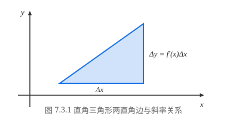
现将此直角三角形的斜边换成曲线 $y = f(x)$（要求 $f(x)$ 在区间 $[a, b]$ 上可导），得到一个曲边直角三角形（如图 7.3.2(a)），并将平行于 $y$ 轴的那条直角边的长度视为它的“高”．若将这个曲边直角三角形近似地视作直角三角形，并将 $f(x)$ 在 $x = a$ 处的导数值 $f'(a)$ 近似地视作“斜边”的斜率，那么关于这个曲边直角三角形的“高”就近似地有
$$ h \approx f'(a)\cdot(b - a). $$显然这么得到的结果是很粗糙的．
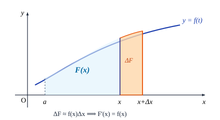
为了提高精确度，可以对区间 $[a, b]$ 作划分
$$ a = x_0 < x_1 < x_2 < \cdots < x_n = b, $$并在每个小区间 $[x_{i-1}, x_i]$ 上，构作小曲边直角三角形（如图 7.3.2(b)）．再像上面所做的那样，将每个小曲边直角三角形近似地视作直角三角形，并将 $f(x)$ 在 $x = x_{i-1}$ 处的导数值 $f'(x_{i-1})$ 近似地视作“斜边”的斜率，那么每个小曲边直角三角形的“高”就近似地等于
$$ h_i = f'(x_{i-1})\cdot\Delta x_i, $$再将所有的 $h_i$ 加起来，就得到曲边直角三角形的“高”近似地等于
$$ \sum_{i=1}^n h_i = \sum_{i=1}^n f'(x_{i-1})\Delta x_i. $$显然，令小区间的最大长度 $\lambda = \max\limits_{1 \le i \le n}(\Delta x_i) \to 0$，就可以得到曲边直角三角形的“高”为
$$ h = \lim_{\lambda \to 0} \sum_{i=1}^n f'(x_{i-1})\Delta x_i, $$由定积分的定义，这个极限值就是 $\displaystyle\int_a^b f'(x)\,\mathrm{d}x$．
由于曲边直角三角形的“高”实际上就是 $f(x)$ 在区间 $[a, b]$ 的两个端点处的函数值之差，即 $f(b) - f(a)$，于是得到
$$ \int_a^b f'(x)\,\mathrm{d}x = f(b) - f(a). $$我们又一次得到了与前面求路程问题同样的结果：$f'(x)$ 在 $[a, b]$ 上的积分值，可以用它的一个原函数 $f(x)$ 在积分区间的两个端点处的函数值之差来表示．
微积分基本定理——Newton-Leibniz 公式
设 $f(x)$ 在区间 $[a, b]$ 上可积，由定积分的区间可加性，可知对任意 $x \in [a, b]$，积分 $\displaystyle\int_a^x f(t)\,\mathrm{d}t$ 存在．当 $x$ 在 $[a, b]$ 中变化时，$\displaystyle\int_a^x f(t)\,\mathrm{d}t$ 的值也随之而变化，所以它是定义在 $[a, b]$ 上的关于 $x$ 的函数．这个函数具有如下的重要性质：
设 $f(x)$ 在 $[a, b]$ 上可积，作函数
$$ F(x) = \int_a^x f(t)\,\mathrm{d}t, \quad x \in [a, b], $$则
(1) $F(x)$ 是 $[a, b]$ 上的连续函数；
(2) 若 $f(x)$ 在 $[a, b]$ 上连续，则 $F(x)$ 在 $[a, b]$ 上可微，且有
$$ F'(x) = f(x). $$证 由定理条件，知 $F(x)$ 在整个 $[a, b]$ 上有定义．由定积分的区间可加性，
$$ F(x + \Delta x) - F(x) = \int_a^{x+\Delta x} f(t)\,\mathrm{d}t - \int_a^x f(t)\,\mathrm{d}t = \int_x^{x+\Delta x} f(t)\,\mathrm{d}t. $$记 $m, M$ 分别为 $f(x)$ 在 $[a, b]$ 上的下确界和上确界，由定积分第一中值定理，即得到
$$ F(x + \Delta x) - F(x) = \begin{cases} \eta\cdot\Delta x \ (\eta \in [m, M]), & \text{若 } f(x) \text{ 在 } [a, b] \text{ 上可积}, \\ f(\xi)\cdot\Delta x \ (\xi \text{ 在 } x \text{ 与 } x + \Delta x \text{ 之间}), & \text{若 } f(x) \text{ 在 } [a, b] \text{ 上连续}. \end{cases} $$显然，不管在哪一种情况下，当 $\Delta x \to 0$ 时都有 $F(x + \Delta x) - F(x) \to 0$，即 $F(x)$ 在 $[a, b]$ 上连续．
若 $f(x)$ 在 $[a, b]$ 连续，当 $\Delta x \to 0$ 时有 $\xi \to x$，因而 $f(\xi) \to f(x)$，于是
$$ F'(x) = \lim_{\Delta x \to 0} \frac{F(x + \Delta x) - F(x)}{\Delta x} = \lim_{\Delta x \to 0} f(\xi) = f(x). $$证毕
这个定理具有非常重要的意义．
首先，它扩展了函数的形式．$\displaystyle\int_a^x f(t)\,\mathrm{d}t$ 与我们所熟悉的初等函数形式迥异，但它确实是一种函数的表示形式，它使我们对函数的认识冲出了初等函数的束缚，不再囿于这狭窄的范围．以后我们会看到，它是我们描述和研究客观事物及其变化规律的又一有力武器．
其次，它说明了当 $f(x)$ 在 $[a, b]$ 上连续时，$\displaystyle\int_a^x f(t)\,\mathrm{d}t$ 正是 $f(x)$ 在 $[a, b]$ 上的一个原
函数，这就是我们在第六章 §3 开头所断言的，任何一个连续函数必存在原函数．如 $\displaystyle\int_a^x \frac{\sin t}{t}\,\mathrm{d}t$ 是 $\dfrac{\sin x}{x}$ 的一个原函数，$\displaystyle\int_a^x \mathrm{e}^{-t^2}\,\mathrm{d}t$ 是 $\mathrm{e}^{-x^2}$ 的一个原函数，如此等等．
另外，定理 7.3.1 的结论 (2)
$$ \left(\int_a^x f(t)\,\mathrm{d}t\right)' = f(x) $$还给出了对 $\displaystyle\int_a^x f(t)\,\mathrm{d}t$ 这种形式的函数求导（通常称为“对积分上限求导”）的一个法则．
计算 $F(x) = \displaystyle\int_0^{x^2} \sin\sqrt{t}\,\mathrm{d}t$ 的导数．
解 记 $u = x^2$，则 $F(x) = G(u) = \displaystyle\int_0^u \sin\sqrt{t}\,\mathrm{d}t$，由复合函数求导法则，
$$ F'(x) = \frac{\mathrm{d}}{\mathrm{d}u}G(u)\cdot u'(x) = \left.\left(\frac{\mathrm{d}}{\mathrm{d}u}\int_0^u \sin\sqrt{t}\,\mathrm{d}t\right)\right|_{u=x^2}\cdot 2x = 2x\sin x. $$求极限 $\displaystyle\lim_{x \to 0^+} \frac{\displaystyle\int_0^{x^2}\sin\sqrt{t}\,\mathrm{d}t}{x^3}$．
解 由于 $\displaystyle\int_0^0 f(x)\,\mathrm{d}x = 0$，因此这个极限是 $\dfrac{0}{0}$ 待定型．由 L'Hospital 法则和上题结论，
$$ \lim_{x \to 0^+} \frac{\displaystyle\int_0^{x^2}\sin\sqrt{t}\,\mathrm{d}t}{x^3} = \lim_{x \to 0^+} \frac{\left(\displaystyle\int_0^{x^2}\sin\sqrt{t}\,\mathrm{d}t\right)'}{(x^3)'} = \lim_{x \to 0^+} \frac{2x\sin x}{3x^2} = \lim_{x \to 0^+} \frac{2\sin x}{3x} = \frac{2}{3}. $$下面，我们用定理 7.3.1 来导出微积分学中最为重要的结论．
设 $f(x)$ 在 $[a, b]$ 上连续，$F(x)$ 是 $f(x)$ 在 $[a, b]$ 上的一个原函数，则成立
$$ \int_a^b f(x)\,\mathrm{d}x = F(b) - F(a). $$证 设 $F(x)$ 是 $f(x)$ 在 $[a, b]$ 上的任一个原函数，而由定理 7.3.1，$\displaystyle\int_a^x f(t)\,\mathrm{d}t$ 也是 $f(x)$ 在 $[a, b]$ 上的一个原函数，因而两者至多相差一个常数．记
$$ \int_a^x f(t)\,\mathrm{d}t = F(x) + C, $$令 $x = a$，即得到 $C = -F(a)$，所以
$$ \int_a^x f(t)\,\mathrm{d}t = F(x) - F(a). $$再令 $x = b$，由于定积分中的自变量用什么记号与积分值无关，便可得到
$$ \int_a^b f(x)\,\mathrm{d}x = \int_a^b f(t)\,\mathrm{d}t = F(b) - F(a). $$证毕
定理的结论被称为“Newton-Leibniz 公式”，公式中的 $F(b) - F(a)$ 一般记为 $\left.F(x)\right|_a^b$，也就是
$$ \int_a^b f(x)\,\mathrm{d}x = \left.F(x)\right|_a^b. $$Newton-Leibniz 公式将“求曲线的切线斜率”和“求曲线所围面积”这两件看上去风马牛不相及的事和谐地统一起来，是高等数学乃至整个数学领域中最优美的结论之一．它以非常简单的形式，深刻地揭示了微分与积分的联系，同时还“指点迷津”，给出了利用原函数（即不定积分）便捷地计算定积分的途径．
计算 $\displaystyle\int_0^1 x^2\,\mathrm{d}x$．
解 因为 $\displaystyle\int x^2\,\mathrm{d}x = \frac{1}{3}x^3 + C$，所以可取 $F(x) = \frac{1}{3}x^3$，于是由 Newton-Leibniz 公式，
$$ \int_0^1 x^2\,\mathrm{d}x = \left.\frac{1}{3}x^3\right|_0^1 = \frac{1}{3} - 0 = \frac{1}{3}. $$这正是我们在本章 §1 中用无限求和的办法求出的那个曲边三角形的面积．
求 $\displaystyle\int_0^\pi \sin x\,\mathrm{d}x$．
解 因为 $-\cos x$ 是 $\sin x$ 的一个原函数，所以
$$ \int_0^\pi \sin x\,\mathrm{d}x = \left.(-\cos x)\right|_0^\pi = -\cos\pi + \cos 0 = 2. $$例 7.3.4 说明 $y = \sin x$ 的一拱的面积恰为整数 $2$，可算是一个出人意料的有趣结果．
不仅如此，对于一些比较难处理、往往需要用些特殊技巧的和式的极限计算问题，有了 Newton-Leibniz 公式，使得我们有可能峰回路转，将其转化为一个定积分问题来计算．
计算 $\displaystyle\lim_{n \to \infty}\left(\frac{1}{n+1} + \frac{1}{n+2} + \cdots + \frac{1}{2n}\right)$．
解 将和式改写成
$$ \frac{1}{n+1} + \frac{1}{n+2} + \cdots + \frac{1}{2n} = \frac{1}{n}\left(\frac{1}{1 + \frac{1}{n}} + \frac{1}{1 + \frac{2}{n}} + \cdots + \frac{1}{1 + \frac{n}{n}}\right), $$这相当于在 $[0, 1]$ 中对函数 $f(x) = \dfrac{1}{1+x}$ 作 $\Delta x_i = \dfrac{1}{n}$ 的等距分割后，在小区间 $[x_{i-1}, x_i]$ 上将 $\xi_i$ 取为 $x_i$ ($i = 1, 2, \cdots, n$) 的 Riemann 和
$$ \sum_{i=1}^n f(\xi_i)\cdot\Delta x_i. $$于是，
$$ \lim_{n \to \infty}\left(\frac{1}{n+1} + \frac{1}{n+2} + \cdots + \frac{1}{2n}\right) = \lim_{\lambda \to 0} \sum_{i=1}^n \frac{1}{1+\xi_i}\cdot\Delta x_i = \int_0^1 \frac{\mathrm{d}x}{1+x} = \left.\ln(1+x)\right|_0^1 = \ln 2. $$这与我们在极限论中（例 2.4.9）所得到的结果相同．
定积分的分部积分法和换元积分法
若将 $\displaystyle\int f(x)\,\mathrm{d}x$ 理解为 $f(x)$ 的任意一个给定的原函数，则 Newton-Leibniz 公式可以从形式上表达为
$$ \int_a^b f(x)\,\mathrm{d}x = \left.\left(\int f(x)\,\mathrm{d}x\right)\right|_a^b, $$因此，由不定积分的运算法则可直接推出定积分的相应的运算法则．
分部积分法
由不定积分的分部积分公式
$$ \int uv'\,\mathrm{d}x = uv - \int vu'\,\mathrm{d}x $$可立即推出定积分的分部积分公式．
设 $u(x), v(x)$ 在区间 $[a, b]$ 上有连续导数，则
$$ \int_a^b u(x)v'(x)\,\mathrm{d}x = \left.[u(x)v(x)]\right|_a^b - \int_a^b v(x)u'(x)\,\mathrm{d}x. $$上式也能写成下列形式
$$ \int_a^b u(x)\,\mathrm{d}v(x) = \left.[u(x)v(x)]\right|_a^b - \int_a^b v(x)\,\mathrm{d}u(x). $$求由曲线 $y = x\sin x$ ($0 \le x \le \pi$) 和 $x$ 轴围成的面积．
解 由定积分的几何意义，应用分部积分公式，
$$ S = \int_0^\pi x\sin x\,\mathrm{d}x = \left.(-x\cos x)\right|_0^\pi + \int_0^\pi \cos x\,\mathrm{d}x = \pi + \left.\sin x\right|_0^\pi = \pi. $$下面我们继续举例说明定积分的分部积分法的应用．先引进一个定义．
设 $\{g_n(x)\}$ 是定义在 $[a, b]$ 上的一列函数 ($n = 0, 1, 2, \cdots$)，若对任意的 $m$ 和 $n$，$g_m(x)g_n(x)$ 在 $[a, b]$ 上可积，且有
$$ \int_a^b g_m(x)g_n(x)\,\mathrm{d}x = \begin{cases} 0, & m \ne n, \\ \displaystyle\int_a^b g_n^2(x)\,\mathrm{d}x > 0, & m = n, \end{cases} $$则称 $\{g_n(x)\}$ 是 $[a, b]$ 上的正交函数列．特别地，当 $g_n(x)$ 是 $n$ 次多项式时，称 $\{g_n(x)\}$ 是 $[a, b]$ 上的正交多项式列．
在第五章的例 5.1.1 中，我们已知 $n$ 次 Legendre 多项式为
$$ P_n(x) = \frac{1}{2^n n!}\frac{\mathrm{d}^n}{\mathrm{d}x^n}(x^2 - 1)^n \quad (n = 0, 1, 2, \cdots), $$它在 $(-1, 1)$ 上恰有 $n$ 个不同的根，现在我们来证明 $\{P_n(x)\}$ 是 $[-1, 1]$ 上的正交多项式列．
证明：
$$ \int_{-1}^1 P_m(x)P_n(x)\,\mathrm{d}x = \begin{cases} 0, & m \ne n, \\ \dfrac{2}{2n+1}, & m = n. \end{cases} $$证 设 $n \ge m$，记
$$ I_{mn} = m!\,n!\,2^{m+n}\int_{-1}^1 P_m(x)P_n(x)\,\mathrm{d}x = \int_{-1}^1 \frac{\mathrm{d}^m}{\mathrm{d}x^m}(x^2 - 1)^m \cdot \frac{\mathrm{d}^n}{\mathrm{d}x^n}(x^2 - 1)^n\,\mathrm{d}x, $$将 $\dfrac{\mathrm{d}^m}{\mathrm{d}x^m}(x^2 - 1)^m$ 看成 $u(x)$，将 $\dfrac{\mathrm{d}^n}{\mathrm{d}x^n}(x^2 - 1)^n$ 看成 $v'(x)$，利用分部积分法，
$$ I_{mn} = \left.\frac{\mathrm{d}^m}{\mathrm{d}x^m}(x^2 - 1)^m \cdot \frac{\mathrm{d}^{n-1}}{\mathrm{d}x^{n-1}}(x^2 - 1)^n\right|_{-1}^1 - \int_{-1}^1 \frac{\mathrm{d}^{m+1}}{\mathrm{d}x^{m+1}}(x^2 - 1)^m \cdot \frac{\mathrm{d}^{n-1}}{\mathrm{d}x^{n-1}}(x^2 - 1)^n\,\mathrm{d}x. $$在第五章中我们已经知道，函数
$$ \frac{\mathrm{d}^{n-k}}{\mathrm{d}x^{n-k}}(x^2 - 1)^n \quad (k = 1, 2, \cdots, n-1) $$中都含有 $(x^2 - 1)$ 因子，因此
$$ \left.\frac{\mathrm{d}^{n-1}}{\mathrm{d}x^{n-1}}(x^2 - 1)^n\right|_{x=1} = \left.\frac{\mathrm{d}^{n-1}}{\mathrm{d}x^{n-1}}(x^2 - 1)^n\right|_{x=-1} = 0, $$所以
$$ I_{mn} = -\int_{-1}^1 \frac{\mathrm{d}^{m+1}}{\mathrm{d}x^{m+1}}(x^2 - 1)^m \cdot \frac{\mathrm{d}^{n-1}}{\mathrm{d}x^{n-1}}(x^2 - 1)^n\,\mathrm{d}x. $$反复执行上述过程，最后得到
$$ I_{mn} = (-1)^n \int_{-1}^1 \left[\frac{\mathrm{d}^{m+n}}{\mathrm{d}x^{m+n}}(x^2 - 1)^m\right]\cdot (x^2 - 1)^n\,\mathrm{d}x. $$(1) 若 $n > m$，则有 $\dfrac{\mathrm{d}^{m+n}}{\mathrm{d}x^{m+n}}(x^2 - 1)^m \equiv 0$，因此
$$ \int_{-1}^1 P_m(x)P_n(x)\,\mathrm{d}x = 0. $$(2) 若 $n = m$，则有 $\dfrac{\mathrm{d}^{m+n}}{\mathrm{d}x^{m+n}}(x^2 - 1)^m = (2n)!$，再次利用分部积分法，
$$ \begin{aligned} I_{nn} &= (2n)!\int_{-1}^1 (1 - x)^n (1 + x)^n\,\mathrm{d}x \\ &= \frac{(2n)!\,n}{n+1}\int_{-1}^1 (1 - x)^{n-1}(1 + x)^{n+1}\,\mathrm{d}x \\ &= \frac{(2n)!\,n(n-1)}{(n+1)(n+2)}\int_{-1}^1 (1 - x)^{n-2}(1 + x)^{n+2}\,\mathrm{d}x \\ &= \cdots \\ &= \frac{(2n)!\,n(n-1)\cdots 1}{(n+1)(n+2)\cdots (2n)}\int_{-1}^1 (1 + x)^{2n}\,\mathrm{d}x \\ &= \frac{(n!)^2 2^{2n+1}}{2n + 1}, \end{aligned} $$于是便有
$$ \int_{-1}^1 P_n^2(x)\,\mathrm{d}x = \frac{I_{nn}}{(n!)^2 2^{2n}} = \frac{2}{2n + 1}. $$证毕
在例 6.2.18 中，我们应用不定积分的分部积分法，导出了求不定积分 $I_n = \displaystyle\int \frac{\mathrm{d}x}{(x^2 + a^2)^n}$ 的递推公式，在下例中我们应用定积分的分部积分法，导出求定积分 $\displaystyle\int_0^{\frac{\pi}{2}} \sin^n x\,\mathrm{d}x$ 的递推公式，从而求出它的值．
求 $I_n = \displaystyle\int_0^{\frac{\pi}{2}} \sin^n x\,\mathrm{d}x$．
解 显然
$$ I_0 = \int_0^{\frac{\pi}{2}}\sin^0 x\,\mathrm{d}x = \frac{\pi}{2}, \quad I_1 = \int_0^{\frac{\pi}{2}}\sin x\,\mathrm{d}x = 1. $$而对于 $n \ge 2$，则有
$$ \begin{aligned} I_n &= \int_0^{\frac{\pi}{2}}\sin^n x\,\mathrm{d}x = \int_0^{\frac{\pi}{2}}\sin^{n-1} x\cdot\sin x\,\mathrm{d}x \\ &= \left.-\sin^{n-1} x\cos x\right|_0^{\frac{\pi}{2}} + (n-1)\int_0^{\frac{\pi}{2}}\sin^{n-2} x\cdot\cos^2 x\,\mathrm{d}x \\ &= (n-1)\int_0^{\frac{\pi}{2}}\sin^{n-2} x\cdot\cos^2 x\,\mathrm{d}x \\ &= (n-1)\int_0^{\frac{\pi}{2}}\sin^{n-2} x\cdot(1 - \sin^2 x)\,\mathrm{d}x \\ &= (n-1)(I_{n-2} - I_n), \end{aligned} $$于是得到递推关系 $I_n = \dfrac{n-1}{n}I_{n-2}$．
沿用例 5.4.3 中的记号并规定 $0!! = 1$，即得到
$$ \int_0^{\frac{\pi}{2}}\sin^n x\,\mathrm{d}x = \begin{cases} \dfrac{n-1}{n}\cdot\dfrac{n-3}{n-2}\cdots\dfrac{1}{2}\cdot\dfrac{\pi}{2} = \dfrac{(n-1)!!}{n!!}\cdot\dfrac{\pi}{2}, & n = \text{偶数}, \\ \dfrac{n-1}{n}\cdot\dfrac{n-3}{n-2}\cdots\dfrac{2}{3}\cdot 1 = \dfrac{(n-1)!!}{n!!}, & n = \text{奇数}. \end{cases} $$换元积分法
设 $f(x)$ 在区间 $[a, b]$ 上连续，$x = \varphi(t)$ 在区间 $[\alpha, \beta]$（或区间 $[\beta, \alpha]$）上有连续导数，其值域包含于 $[a, b]$，且满足 $\varphi(\alpha) = a$ 和 $\varphi(\beta) = b$，则
$$ \int_a^b f(x)\,\mathrm{d}x = \int_\alpha^\beta f(\varphi(t))\varphi'(t)\,\mathrm{d}t. $$证 因为 $f(x)$ 连续，所以必有原函数．设 $F(x)$ 为 $f(x)$ 的某个原函数，由复合函数求导法则，可知 $F(\varphi(t))$ 是 $f(\varphi(t))\varphi'(t)$ 的一个原函数．按 Newton-Leibniz 公式，则有
$$ \int_\alpha^\beta f(\varphi(t))\varphi'(t)\,\mathrm{d}t = F(\varphi(\beta)) - F(\varphi(\alpha)) = F(b) - F(a) = \int_a^b f(x)\,\mathrm{d}x. $$证毕
读者须注意，换元后的定积分 $\displaystyle\int_\alpha^\beta f(\varphi(t))\varphi'(t)\,\mathrm{d}t$ 的上下限 $\alpha$ 和 $\beta$ 必须与原来定积分的上下限 $a$ 和 $b$ 相对准，而不必考虑 $\alpha$ 与 $\beta$ 之间谁大谁小．
求 $\displaystyle\int_1^2 \frac{\mathrm{d}x}{x(1 + x^4)}$．
解 令 $x = \varphi(t) = t^{\frac{1}{4}}$，于是 $\mathrm{d}x = \dfrac{1}{4}t^{-\frac{3}{4}}\,\mathrm{d}t$（也可以对等式 $x^4 = t$ 的两边求对数后微分，得到 $\dfrac{\mathrm{d}x}{x} = \dfrac{\mathrm{d}t}{4t}$）．因为 $\varphi(1) = 1, \varphi(16) = 2$，所以积分区间由 $x \in [1, 2]$ 变为 $t \in [1, 16]$．应用换元积分公式，将 $x = t^{\frac{1}{4}}$ 与 $\mathrm{d}x = \dfrac{1}{4}t^{-\frac{3}{4}}\,\mathrm{d}t$ 代入积分表达式，改变积分上下限，就得到
$$ \int_1^2 \frac{\mathrm{d}x}{x(1 + x^4)} = \int_1^{16} \frac{\mathrm{d}t}{4t(1 + t)} = \left.\left(\frac{1}{4}\ln\frac{t}{1 + t}\right)\right|_1^{16} = \frac{1}{4}\ln\frac{32}{17}. $$本题也可以对积分作如下的变形
$$ \int_1^2 \frac{\mathrm{d}x}{x(1 + x^4)} = \int_1^2 \frac{\mathrm{d}x^4}{4x^4(1 + x^4)}, $$然后令 $x^4 = t$ 进行换元积分．
求 $\displaystyle\int_0^{\frac{\pi}{2}} \sin^3 x\cos^4 x\,\mathrm{d}x$．
解 对积分作如下的变形
$$ \int_0^{\frac{\pi}{2}} \sin^3 x\cos^4 x\,\mathrm{d}x = -\int_0^{\frac{\pi}{2}} (1 - \cos^2 x)\cos^4 x\,\mathrm{d}(\cos x), $$令 $\cos x = t$，因为当 $x = 0$ 时 $t = 1$，当 $x = \dfrac{\pi}{2}$ 时 $t = 0$，于是
$$ \int_0^{\frac{\pi}{2}}\sin^3 x\cos^4 x\,\mathrm{d}x = -\int_1^0 (1 - t^2)t^4\,\mathrm{d}t = \int_0^1 (t^4 - t^6)\,\mathrm{d}t = \frac{2}{35}. $$请读者注意换元后的积分上、下限，注意不能将积分化成
$$ \int_0^{\frac{\pi}{2}}\sin^3 x\cos^4 x\,\mathrm{d}x = -\int_0^1 (1 - t^2)t^4\,\mathrm{d}t. $$本例还可以用例 7.3.8 中得到的递推公式求积分值：
$$ \begin{aligned} \int_0^{\frac{\pi}{2}}\sin^3 x\cos^4 x\,\mathrm{d}x &= \int_0^{\frac{\pi}{2}}\sin^3 x(1 - \sin^2 x)^2\,\mathrm{d}x \\ &= \int_0^{\frac{\pi}{2}}(\sin^3 x - 2\sin^5 x + \sin^7 x)\,\mathrm{d}x = \frac{2}{3} - 2\cdot\frac{4\cdot 2}{5\cdot 3} + \frac{6\cdot 4\cdot 2}{7\cdot 5\cdot 3} = \frac{2}{35}. \end{aligned} $$由此我们可以归纳如下：对于形如 $\displaystyle\int_\alpha^\beta \sin^m x\cos^n x\,\mathrm{d}x$ 的积分，当 $m$ 与 $n$ 中有一个是奇数时，都可以用本例中的换元积分法求出积分值；当 $m$ 与 $n$ 都是偶数时，一般只能通过三角函数的恒等变形（如半角公式等），将三角函数的幂指数降低到 1 后加以解决．但是当 $\alpha = 0, \beta = \dfrac{\pi}{2}$（或积分可化成 $\displaystyle\int_0^{\frac{\pi}{2}}\sin^m x\cos^n x\,\mathrm{d}x$ 的形式）时，只要 $m$ 与 $n$ 中有一个是偶数，就可以用例 7.3.8 中得到的递推公式求出积分值．
从上述两例读者可以发现，应用换元积分公式
$$ \int_a^b f(x)\,\mathrm{d}x = \int_\alpha^\beta f(\varphi(t))\varphi'(t)\,\mathrm{d}t, $$可以从左端推到右端，也可以从右端推到左端．例 7.3.9 就是采用从左端推到右端的方法，这相当于不定积分的第二类换元积分法；例 7.3.10 则是采用从右端推到左端的方法，这相当于不定积分的第一类换元积分法，即“凑微分法”．读者应该对具体的问题作具体的分析，选择恰当的变量代换，从而简化解题过程．
求半径为 $r$ 的圆的面积．
解 设圆的方程为
$$ x^2 + y^2 = r^2, $$利用对称性，我们只求它在第一象限部分的面积（如图 7.3.3）．
在第一象限，它的方程是
$$ y = \sqrt{r^2 - x^2}, $$因此，相应的面积应为 $\displaystyle\int_0^r \sqrt{r^2 - x^2}\,\mathrm{d}x$．
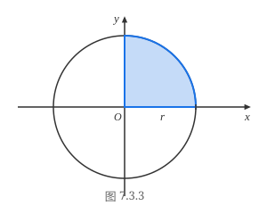
令 $x = r\sin t$，于是 $\mathrm{d}x = r\cos t\,\mathrm{d}t$，积分区间由 $x \in [0, r]$ 变为 $t \in \left[0, \dfrac{\pi}{2}\right]$，于是
$$ \int_0^r \sqrt{r^2 - x^2}\,\mathrm{d}x = r^2 \int_0^{\frac{\pi}{2}} \cos^2 t\,\mathrm{d}t = \left.\frac{r^2}{2}\left(t + \frac{\sin 2t}{2}\right)\right|_0^{\frac{\pi}{2}} = \frac{\pi r^2}{4}. $$由此，整个圆的面积为 $S = \pi r^2$．
注意，若将变换改为 $x = \varphi(t) = r\cos t$，虽然 $x = \varphi(t)$ 把 $t \in \left[0, \dfrac{\pi}{2}\right]$ 变为 $x \in [0, r]$，但由于 $\varphi\left(\dfrac{\pi}{2}\right) = 0, \varphi(0) = r$，因此要将积分化成
$$ \int_0^r \sqrt{r^2 - x^2}\,\mathrm{d}x = -r^2 \int_{\frac{\pi}{2}}^0 \sin^2 t\,\mathrm{d}t. $$请读者注意，对定积分作变量代换 $x = \varphi(t)$ 时，并不要求 $\varphi(t)$ 是一个单调的一一对应的函数，这一点与不定积分的换元积分法有所不同．这是因为在求不定积分时，通过换元，求出关于新变量 $t$ 的不定积分后，还需将变量 $t$ 还原成变量 $x$，所以要求 $x = \varphi(t)$ 有反函数．而在求定积分时，通过换元，写出关于新变量 $t$ 的被积函数与关于新变量的积分上下限后，就可直接求出定积分的值．
需要进一步指出的是，定理 7.3.4 要求 $x = \varphi(t)$ 的值域包含在区间 $[a, b]$ 中，事实上，即使 $\varphi(t)$ 的值域超出了区间 $[a, b]$，定理的结论仍然有可能成立．因为只要 $x = \varphi(t)$ 的值域包含在被积函数 $f(x)$ 的连续范围内，并在区间端点有 $\varphi(\alpha) = a$ 和 $\varphi(\beta) = b$，定理的证明照样能通过．
例如在上例中，要是作变换 $x = \varphi(t) = r\sin t$，并令 $t \in \left[\pi, \left(2 + \dfrac{1}{2}\right)\pi\right]$，虽然此时 $\varphi(t)$ 的值域为 $[-r, r]$，已超出区间 $[0, r]$，但 $\varphi(t)$ 的值域包含在 $f(x) = \sqrt{r^2 - x^2}$ 的连续范围 $[-r, r]$ 内，且 $\varphi(\pi) = 0, \varphi\left(\left(2 + \dfrac{1}{2}\right)\pi\right) = r$，于是有
$$ \int_0^r \sqrt{r^2 - x^2}\,\mathrm{d}x = r^2\int_\pi^{\left(2+\frac{1}{2}\right)\pi}\sqrt{1 - \sin^2 t}\,\mathrm{d}(\sin t) = r^2 \int_\pi^{\left(2+\frac{1}{2}\right)\pi} |\cos t|\cdot\cos t\,\mathrm{d}t, $$仍然可以得到正确的结论．
计算 $\displaystyle\int_{\ln 2}^1 \frac{\mathrm{d}x}{\sqrt{\mathrm{e}^x - 1}}$．
解 作变换 $\sqrt{\mathrm{e}^x - 1} = u$，则 $x = \ln(1 + u^2)$，当 $x$ 从 $\ln 2$ 变到 $1$ 时，$u$ 从 $1$ 变到 $\sqrt{\mathrm{e} - 1}$，且 $\mathrm{d}x = \dfrac{2u}{1+u^2}\,\mathrm{d}u$．于是
$$ \int_{\ln 2}^1 \frac{\mathrm{d}x}{\sqrt{\mathrm{e}^x - 1}} = \int_1^{\sqrt{\mathrm{e}-1}}\frac{2u\,\mathrm{d}u}{u(1 + u^2)} = 2\int_1^{\sqrt{\mathrm{e}-1}}\frac{\mathrm{d}u}{1 + u^2} = \left.2\arctan u\right|_1^{\sqrt{\mathrm{e}-1}} = 2\arctan\sqrt{\mathrm{e} - 1} - \frac{\pi}{2}. $$设 $f(x) = \begin{cases} \sin\dfrac{x}{2}, & x \ge 0, \\ x\arctan x, & x < 0, \end{cases}$ 计算 $I = \displaystyle\int_0^{\pi+1} f(x - 1)\,\mathrm{d}x$．
解 作变换 $x - 1 = u$ 得
$$ \begin{aligned} I &= \int_0^{\pi+1} f(x - 1)\,\mathrm{d}x = \int_{-1}^\pi f(u)\,\mathrm{d}u = \int_{-1}^0 f(u)\,\mathrm{d}u + \int_0^\pi f(u)\,\mathrm{d}u \\ &= \int_{-1}^0 u\arctan u\,\mathrm{d}u + \int_0^\pi \sin\frac{u}{2}\,\mathrm{d}u. \end{aligned} $$由
$$ \begin{aligned} \int_{-1}^0 u\arctan u\,\mathrm{d}u &= \frac{1}{2}\int_{-1}^0 \arctan u\,\mathrm{d}(u^2) \\ &= \left.\frac{1}{2}u^2\arctan u\right|_{-1}^0 - \frac{1}{2}\int_{-1}^0 \frac{u^2}{1 + u^2}\,\mathrm{d}u = \frac{\pi}{8} - \frac{1}{2}\int_{-1}^0 \left(1 - \frac{1}{1 + u^2}\right)\,\mathrm{d}u \\ &= \frac{\pi}{8} - \left.\frac{1}{2}(u - \arctan u)\right|_{-1}^0 = \frac{\pi}{4} - \frac{1}{2} \end{aligned} $$与
$$ \int_0^\pi \sin\frac{u}{2}\,\mathrm{d}u = \left.-2\cos\frac{u}{2}\right|_0^\pi = 2, $$得到 $I = \dfrac{\pi}{4} + \dfrac{3}{2}$．
计算 $I = \displaystyle\int_0^1 \frac{\ln(1+x)}{1+x^2}\,\mathrm{d}x$．
解 作变换 $x = \tan t$，则 $\mathrm{d}x = \sec^2 t\,\mathrm{d}t$．于是
$$ \begin{aligned} I &= \int_0^{\frac{\pi}{4}} \ln(1 + \tan t)\,\mathrm{d}t = \int_0^{\frac{\pi}{4}} \ln\frac{\sin t + \cos t}{\cos t}\,\mathrm{d}t = \int_0^{\frac{\pi}{4}} \ln\frac{\sqrt{2}\cos\left(\frac{\pi}{4} - t\right)}{\cos t}\,\mathrm{d}t \\ &= \int_0^{\frac{\pi}{4}}\ln\sqrt{2}\,\mathrm{d}t + \int_0^{\frac{\pi}{4}}\ln\cos\left(\frac{\pi}{4} - t\right)\,\mathrm{d}t - \int_0^{\frac{\pi}{4}}\ln\cos t\,\mathrm{d}t. \end{aligned} $$对上式第二个积分作变量代换 $u = \dfrac{\pi}{4} - t$ 得
$$ \int_0^{\frac{\pi}{4}}\ln\cos\left(\frac{\pi}{4} - t\right)\,\mathrm{d}t = \int_{\frac{\pi}{4}}^0 \ln\cos u\,(-\mathrm{d}u) = \int_0^{\frac{\pi}{4}}\ln\cos u\,\mathrm{d}u. $$因此
$$ I = \int_0^{\frac{\pi}{4}}\ln\sqrt{2}\,\mathrm{d}t + \int_0^{\frac{\pi}{4}}\ln\cos u\,\mathrm{d}u - \int_0^{\frac{\pi}{4}}\ln\cos t\,\mathrm{d}t = \int_0^{\frac{\pi}{4}}\ln\sqrt{2}\,\mathrm{d}t = \frac{\pi}{8}\ln 2. $$计算 $\displaystyle\int_0^{\frac{\pi}{2}}\frac{\sin^2 x}{\sin x + \cos x}\,\mathrm{d}x$．
解 作变量代换 $x = \dfrac{\pi}{2} - t$，得到
$$ \int_0^{\frac{\pi}{2}}\frac{\sin^2 x}{\sin x + \cos x}\,\mathrm{d}x = \int_0^{\frac{\pi}{2}}\frac{\cos^2 t}{\sin t + \cos t}\,\mathrm{d}t. $$因此
$$ \begin{aligned} \int_0^{\frac{\pi}{2}}\frac{\sin^2 x}{\sin x + \cos x}\,\mathrm{d}x &= \frac{1}{2}\left(\int_0^{\frac{\pi}{2}}\frac{\sin^2 x}{\sin x + \cos x}\,\mathrm{d}x + \int_0^{\frac{\pi}{2}}\frac{\cos^2 x}{\sin x + \cos x}\,\mathrm{d}x\right) \\ &= \frac{1}{2}\int_0^{\frac{\pi}{2}}\frac{1}{\sin x + \cos x}\,\mathrm{d}x = \frac{1}{2\sqrt{2}}\int_0^{\frac{\pi}{2}}\frac{1}{\sin\left(x + \frac{\pi}{4}\right)}\,\mathrm{d}x \\ &= \frac{1}{2\sqrt{2}}\int_{\frac{\pi}{4}}^{\frac{3\pi}{4}}\frac{1}{\sin x}\,\mathrm{d}x = \left.\frac{1}{2\sqrt{2}}\left(\ln\left|\frac{1 - \cos x}{\sin x}\right|\right)\right|_{\frac{\pi}{4}}^{\frac{3\pi}{4}} = \frac{1}{\sqrt{2}}\ln(1 + \sqrt{2}). \end{aligned} $$计算 $\displaystyle\int_0^2 \frac{(x-1)^2 + 1}{(x-1)^2 + x^2(x-2)^2}\,\mathrm{d}x$．
先来看一个不正确的解法：
由于 $\left[\arctan\dfrac{x(x-2)}{x-1}\right]' = \dfrac{(x-1)^2 + 1}{(x-1)^2 + x^2(x-2)^2}$，于是由 Newton-Leibniz 公式，可以得到
$$ \int_0^2 \frac{(x-1)^2 + 1}{(x-1)^2 + x^2(x-2)^2}\,\mathrm{d}x = \left.\arctan\frac{x(x-2)}{x-1}\right|_0^2 = 0. $$但这个结果是不可能的，因为被积函数在 $[0, 2]$ 连续且恒大于零，所以必有
$$ \int_0^2 \frac{(x-1)^2 + 1}{(x-1)^2 + x^2(x-2)^2}\,\mathrm{d}x > 0, $$Newton-Leibniz 公式居然“失灵”了！
问题出在什么地方呢？请注意微积分基本定理的条件是“$F(x)$ 是 $f(x)$ 在 $[a, b]$ 上的一个原函数”，而在这个例子中，由于 $\arctan\dfrac{x(x-2)}{x-1}$ 在 $[0, 2]$ 中有不连续点 $x = 1$，因此它绝不可能是 $\dfrac{(x-1)^2 + 1}{(x-1)^2 + x^2(x-2)^2}$ 在 $[0, 2]$ 上的原函数．
为了正确求解这道题，我们先来做一下分析．
首先，在任何一个不含 $x = 1$ 的区间上，$\arctan\dfrac{x(x-2)}{x-1}$ 确实是 $f(x) = \dfrac{(x-1)^2 + 1}{(x-1)^2 + x^2(x-2)^2}$ 的原函数，而 $x = 1$ 是它的第一类不连续点，因此作函数
$$ F(x) = \begin{cases} \arctan\dfrac{x(x-2)}{x-1}, & x \in [0, 1), \\ \dfrac{\pi}{2}, & x = 1, \end{cases} $$那么可以验证 $F(x)$ 是 $f(x)$ 在 $[0, 1]$ 上的原函数．同样地，函数
$$ \tilde{F}(x) = \begin{cases} \arctan\dfrac{x(x-2)}{x-1}, & x \in (1, 2], \\ -\dfrac{\pi}{2}, & x = 1 \end{cases} $$是 $f(x)$ 在 $[1, 2]$ 上的原函数．
于是，正确的方法是利用积分的区间可加性，分别在区间 $[0, 1]$ 和 $[1, 2]$ 上应用 Newton-Leibniz 公式，即
$$ \begin{aligned} \int_0^2 \frac{(x-1)^2 + 1}{(x-1)^2 + x^2(x-2)^2}\,\mathrm{d}x &= \int_0^1 \frac{(x-1)^2 + 1}{(x-1)^2 + x^2(x-2)^2}\,\mathrm{d}x + \int_1^2 \frac{(x-1)^2 + 1}{(x-1)^2 + x^2(x-2)^2}\,\mathrm{d}x \\ &= \left.F(x)\right|_0^1 + \left.\tilde{F}(x)\right|_1^2 = \left[\frac{\pi}{2} - 0\right] + \left[0 - \left(-\frac{\pi}{2}\right)\right] = \pi. \end{aligned} $$这个例子告诉我们，用 Newton-Leibniz 公式时必须把条件弄清楚，否则就有可能差之毫厘，失之千里．
定积分有如下两条简单性质．
设 $f(x)$ 在对称区间 $[-a, a]$ 上可积，
(1) 若 $f(x)$ 是偶函数，则成立
$$ \int_{-a}^a f(x)\,\mathrm{d}x = 2\int_0^a f(x)\,\mathrm{d}x; $$(2) 若 $f(x)$ 是奇函数，则成立
$$ \int_{-a}^a f(x)\,\mathrm{d}x = 0. $$证 由
$$ \int_{-a}^a f(x)\,\mathrm{d}x = \int_{-a}^0 f(x)\,\mathrm{d}x + \int_0^a f(x)\,\mathrm{d}x, $$对积分 $\displaystyle\int_{-a}^0 f(x)\,\mathrm{d}x$ 作变量代换 $x = -t$，得
$$ \int_{-a}^0 f(x)\,\mathrm{d}x = -\int_a^0 f(-t)\,\mathrm{d}t = \begin{cases} \displaystyle\int_0^a f(x)\,\mathrm{d}x, & f(x) \text{ 为偶函数}, \\ \displaystyle -\int_0^a f(x)\,\mathrm{d}x, & f(x) \text{ 为奇函数}, \end{cases} $$从而得到所需结论．
证毕
设 $f(x)$ 是以 $T$ 为周期的可积函数，则对任意 $a$，
$$ \int_a^{a+T} f(x)\,\mathrm{d}x = \int_0^T f(x)\,\mathrm{d}x. $$作为一个练习，请读者用换元积分法自行证明．
这些性质对讨论某些问题很有帮助，下面我们来举一个例子．
证明函数 $\{1, \sin x, \cos x, \sin 2x, \cos 2x, \cdots, \sin nx, \cos nx, \cdots\}$ 是任意一个长度为 $2\pi$ 的区间上的正交函数列（见定义 7.3.1）．
证 我们考虑区间 $[-\pi, \pi]$ 上的积分．
将 $1$ 记为 $\cos 0x$，则对任何 $m = 1, 2, \cdots$ 和 $n = 0, 1, 2, \cdots$，由于 $\sin mx\cos nx$ 是奇函数，所以
$$ \int_{-\pi}^\pi \sin mx\cos nx\,\mathrm{d}x = 0. $$其次，对任何 $m = 1, 2, \cdots$ 和 $n = 1, 2, \cdots$，由于 $\sin mx\sin nx$ 是偶函数，
$$ \begin{aligned} \int_{-\pi}^\pi \sin mx\sin nx\,\mathrm{d}x &= 2\int_0^\pi \sin mx\sin nx\,\mathrm{d}x = \int_0^\pi [\cos(m-n)x - \cos(m+n)x]\,\mathrm{d}x \\ &= \begin{cases} \left.\left[\dfrac{\sin(m-n)x}{m-n} - \dfrac{\sin(m+n)x}{m+n}\right]\right|_0^\pi, & m \ne n, \\ \left.\left(x - \dfrac{\sin 2mx}{2m}\right)\right|_0^\pi, & m = n \end{cases} \\ &= \begin{cases} 0, & m \ne n, \\ \pi, & m = n. \end{cases} \end{aligned} $$同理可证，对任何 $m = 0, 1, 2, \cdots$ 和 $n = 0, 1, 2, \cdots$，有
$$ \int_{-\pi}^\pi \cos mx\cos nx\,\mathrm{d}x = \begin{cases} 0, & m \ne n, \\ \pi, & m = n \ne 0, \\ 2\pi, & m = n = 0. \end{cases} $$由定义 7.3.1，这组函数确是 $[-\pi, \pi]$ 上的正交函数列．又由于 $2\pi$ 是这些函数的公共周期，由定理 7.3.6，即知这组函数是任意一个长度为 $2\pi$ 的区间上的正交函数列．
证毕
习题 7.3
(1) $\displaystyle F(x) = \int_x^b f(t)\,\mathrm{d}t$；
(2) $\displaystyle F(x) = \int_a^{\ln x} f(t)\,\mathrm{d}t$；
(3) $\displaystyle F(x) = \int_a^{\left(\int_0^x \sin^2 t\,\mathrm{d}t\right)} \frac{1}{1+t^2}\,\mathrm{d}t$．
(1) $\displaystyle \lim_{x\to 0}\frac{\displaystyle\int_0^x \cos t^2\,\mathrm{d}t}{x}$；
(2) $\displaystyle \lim_{x\to 0}\frac{x^2}{\displaystyle\int_{\cos x}^1 \mathrm{e}^{-u^2}\,\mathrm{d}u}$；
(3) $\displaystyle \lim_{x\to +\infty}\frac{\displaystyle\int_0^x (\arctan v)^2\,\mathrm{d}v}{\sqrt{1+x^2}}$；
(4) $\displaystyle \lim_{x\to +\infty}\frac{\left(\displaystyle\int_0^x \mathrm{e}^{u^2}\,\mathrm{d}u\right)^2}{\displaystyle\int_0^x \mathrm{e}^{2u^2}\,\mathrm{d}u}$．
设 $f(x)$ 是 $[0, +\infty)$ 上的连续函数且恒有 $f(x) > 0$，证明 $g(x) = \dfrac{\displaystyle\int_0^x t f(t)\,\mathrm{d}t}{\displaystyle\int_0^x f(t)\,\mathrm{d}t}$ 是定义在 $[0, +\infty)$ 上的单调增加函数．
求函数 $f(x) = \displaystyle\int_0^x (t-1)(t-2)^2\,\mathrm{d}t$ 的极值．
(1) $\displaystyle \lim_{n\to\infty}\int_0^1 \frac{x^n}{1+x}\,\mathrm{d}x$；
(2) $\displaystyle \lim_{n\to\infty}\int_n^{n+p}\frac{\sin x}{x}\,\mathrm{d}x \quad (p \in \mathbb{N}^*)$．
(1) $\displaystyle \int_0^1 x^2(2-x^2)^2\,\mathrm{d}x$；
(2) $\displaystyle \int_1^2 \frac{(x-1)(x^2-x+1)}{2x^2}\,\mathrm{d}x$；
(3) $\displaystyle \int_0^2 (2^x + 3^x)^2\,\mathrm{d}x$；
(4) $\displaystyle \int_0^{\frac{1}{2}} x(1-4x^2)^{10}\,\mathrm{d}x$；
(5) $\displaystyle \int_{-1}^1 \frac{(x+1)\,\mathrm{d}x}{(x^2+2x+5)^2}$；
(6) $\displaystyle \int_0^1 \arcsin x\,\mathrm{d}x$；
(7) $\displaystyle \int_{-\frac{\pi}{4}}^{\frac{\pi}{4}}\frac{x}{\cos^2 x}\,\mathrm{d}x$；
(8) $\displaystyle \int_0^{\frac{\pi}{4}} x\tan^2 x\,\mathrm{d}x$；
(9) $\displaystyle \int_0^{\frac{\pi}{2}}\mathrm{e}^x \sin^2 x\,\mathrm{d}x$；
(10) $\displaystyle \int_1^{\mathrm{e}}\sin(\ln x)\,\mathrm{d}x$；
(11) $\displaystyle \int_0^1 x^2\arctan x\,\mathrm{d}x$；
(12) $\displaystyle \int_1^{\mathrm{e}+1} x^2\ln(x-1)\,\mathrm{d}x$；
(13) $\displaystyle \int_0^{\sqrt{\ln 2}} x^3\mathrm{e}^{-x^2}\,\mathrm{d}x$；
(14) $\displaystyle \int_0^1 \mathrm{e}^{2\sqrt{x+1}}\,\mathrm{d}x$；
(15) $\displaystyle \int_0^1 \frac{\mathrm{d}x}{\sqrt{1+\mathrm{e}^{2x}}}$；
(16) $\displaystyle \int_{\frac{1}{2}}^1 \frac{\mathrm{d}x}{\sqrt{(1-x^2)^3}}$；
(17) $\displaystyle \int_0^1 \left(\frac{x-1}{x+1}\right)^4\,\mathrm{d}x$；
(18) $\displaystyle \int_0^1 \frac{x^2+1}{x^4+1}\,\mathrm{d}x$；
(19) $\displaystyle \int_1^{\sqrt{2}}\frac{\mathrm{d}x}{x\sqrt{1+x^2}}$；
(20) $\displaystyle \int_0^1 x\sqrt{\frac{x}{2-x}}\,\mathrm{d}x$．
(1) $\displaystyle \lim_{n\to\infty}\left(\frac{1}{n^2} + \frac{2}{n^2} + \frac{3}{n^2} + \cdots + \frac{n-1}{n^2}\right)$；
(2) $\displaystyle \lim_{n\to\infty}\frac{1^p + 2^p + 3^p + \cdots + n^p}{n^{p+1}} \quad (p > 0)$；
(3) $\displaystyle \lim_{n\to\infty}\frac{1}{n}\left(\sin\frac{\pi}{n} + \sin\frac{2\pi}{n} + \cdots + \sin\frac{(n-1)\pi}{n}\right)$．
(1) $\displaystyle \int_0^\pi \cos^n x\,\mathrm{d}x$；
(2) $\displaystyle \int_{-\pi}^\pi \sin^n x\,\mathrm{d}x$；
(3) $\displaystyle \int_0^a (a^2-x^2)^n\,\mathrm{d}x$；
(4) $\displaystyle \int_0^{\frac{1}{2}} x^2(1-4x^2)^{10}\,\mathrm{d}x$；
(5) $\displaystyle \int_0^1 x^n \ln^m x\,\mathrm{d}x$；
(6) $\displaystyle \int_1^{\mathrm{e}} x\ln^n x\,\mathrm{d}x$．
(1) $\displaystyle \int_0^{\frac{\pi}{2}} f(\cos x)\,\mathrm{d}x = \int_0^{\frac{\pi}{2}} f(\sin x)\,\mathrm{d}x$；
(2) $\displaystyle \int_0^\pi x f(\sin x)\,\mathrm{d}x = \frac{\pi}{2}\int_0^\pi f(\sin x)\,\mathrm{d}x$．
(1) $\displaystyle \int_0^\pi x\sin^4 x\,\mathrm{d}x$；
(2) $\displaystyle \int_0^\pi \frac{x\sin x}{1+\cos^2 x}\,\mathrm{d}x$；
(3) $\displaystyle \int_0^\pi \frac{x}{1+\sin^2 x}\,\mathrm{d}x$．
(1) $\displaystyle \int_0^6 x^2 [x]\,\mathrm{d}x$；
(2) $\displaystyle \int_0^2 \mathrm{sgn}(x-x^3)\,\mathrm{d}x$；
(3) $\displaystyle \int_0^2 x|x-a|\,\mathrm{d}x$；
(4) $\displaystyle \int_0^2 [\mathrm{e}^x]\,\mathrm{d}x$．
设 $f(x)$ 在 $[a, b]$ 上可积且关于 $x = T$ 对称，这里 $a < T < b$，则
$$ \int_a^b f(x)\,\mathrm{d}x = \int_a^{2T-b} f(x)\,\mathrm{d}x + 2\int_T^b f(x)\,\mathrm{d}x, $$并给出它的几何解释．
设 $f(x) = \begin{cases} x\mathrm{e}^{-x^2}, & x \ge 0, \\ \dfrac{1}{1+\mathrm{e}^x}, & x < 0, \end{cases}$ 计算 $I = \displaystyle\int_1^4 f(x-2)\,\mathrm{d}x$．
设函数 $f(x) = \dfrac{1}{2}\displaystyle\int_0^x (x-t)^2 g(t)\,\mathrm{d}t$，其中函数 $g(x)$ 在 $(-\infty, +\infty)$ 上连续，且 $g(1) = 5$，$\displaystyle\int_0^1 g(t)\,\mathrm{d}t = 2$，证明 $f'(x) = x\displaystyle\int_0^x g(t)\,\mathrm{d}t - \int_0^x t g(t)\,\mathrm{d}t$，并计算 $f''(1)$ 和 $f'''(1)$．
设 $(0, +\infty)$ 上的连续函数 $f(x)$ 满足 $f(x) = \ln x - \displaystyle\int_1^x f(t)\,\mathrm{d}t$，求 $\displaystyle\int_1^\mathrm{e} f(x)\,\mathrm{d}x$．
设函数 $f(x)$ 连续，且 $\displaystyle\int_0^1 t f(2x-t)\,\mathrm{d}t = \frac{1}{2}\arctan(x^2)$，$f(1) = 1$．求 $\displaystyle\int_0^2 f(x)\,\mathrm{d}x$．
求 $\displaystyle\int_0^{n\pi} x|\sin x|\,\mathrm{d}x$，其中 $n$ 为正整数．
设函数 $S(x) = \displaystyle\int_0^x |\cos t|\,\mathrm{d}t$，求 $\displaystyle\lim_{x\to +\infty}\frac{S(x)}{x}$．
设 $f(x)$ 在 $(0, +\infty)$ 上连续，且对于任何 $a > 0$ 有
$$ g(x) = \int_x^{ax} f(t)\,\mathrm{d}t = \text{常数}, \quad x \in (0, +\infty). $$证明：$f(x) = \dfrac{c}{x}, x \in (0, +\infty)$，其中 $c$ 为常数．
设 $f(x)$ 在 $(0, +\infty)$ 上连续，证明：
$$ \int_{\frac{1}{2}}^4 f\left(\frac{x}{2} + \frac{2}{x}\right)\frac{\ln x}{x}\,\mathrm{d}x = (\ln 2)\int_{\frac{1}{2}}^4 f\left(\frac{x}{2} + \frac{2}{x}\right)\frac{1}{x}\,\mathrm{d}x. $$设 $f'(x)$ 在 $[a, b]$ 上连续，证明：
$$ \max_{a \le x \le b}|f(x)| \le \left|\frac{1}{b-a}\int_a^b f(x)\,\mathrm{d}x\right| + \int_a^b |f'(x)|\,\mathrm{d}x. $$设 $f(x)$ 在 $(-\infty, +\infty)$ 上连续，证明：
$$ \int_0^x f(u)(x-u)\,\mathrm{d}u = \int_0^x \left\{\int_0^u f(t)\,\mathrm{d}t\right\}\mathrm{d}u. $$设 $f(x)$ 在 $[0, a]$ 上二阶可导 ($a > 0$)，且 $f''(x) \ge 0$，证明：
$$ \int_0^a f(x)\,\mathrm{d}x \ge a f\left(\frac{a}{2}\right). $$设函数 $f(x)$ 在 $[0, 1]$ 上二阶可导，且 $f''(x) \le 0, x \in [0, 1]$，证明：
$$ \int_0^1 f(x^2)\,\mathrm{d}x \le f\left(\frac{1}{3}\right). $$设 $f(x)$ 为 $[0, 2\pi]$ 上的单调减少函数，证明：对任何正整数 $n$ 成立
$$ \int_0^{2\pi} f(x)\sin nx\,\mathrm{d}x \ge 0. $$设函数 $f(x)$ 在 $[0, \pi]$ 上连续，且 $\displaystyle\int_0^\pi f(x)\,\mathrm{d}x = 0, \int_0^\pi f(x)\cos x\,\mathrm{d}x = 0$，证明：在 $(0, \pi)$ 内至少存在两个不同的点 $\xi_1, \xi_2$，使得 $f(\xi_1) = f(\xi_2) = 0$．
§4 定积分在几何计算中的应用
应用一元函数的定积分可解决求平面图形的面积、求曲线的弧长、求某些特殊的几何体的体积、求旋转曲面的面积等等类型的问题．至于一般几何体的体积和表面积，则要等学完多元函数的积分学后才能计算．
求平面图形的面积
我们考虑由连续曲线 $y = f(x)$，直线 $x = a$，$x = b$ 和 $y = 0$（即 $x$ 轴）所围区域的面积．当 $f(x) > 0$ 时，面积为 $\displaystyle\int_a^b f(x)\,\mathrm{d}x$；当 $f(x) < 0$ 时，面积为 $\displaystyle\int_a^b [-f(x)]\,\mathrm{d}x$．而当 $f(x)$ 在区间 $[a, b]$ 上不保持定号时，所要求的面积（如图 7.4.1 中所示的阴影部分的面积）应为
$$ S = \int_a^b |f(x)|\,\mathrm{d}x. $$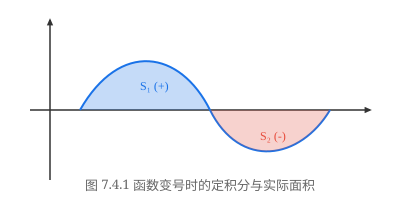
进一步我们得到夹在连续曲线 $y = f(x)$ 和 $y = g(x)$ 之间，左右分别由直线 $x = a, x = b$ 界定的那部分区域的面积（如图 7.4.2）
$$ S = \int_a^b |f(x) - g(x)|\,\mathrm{d}x. $$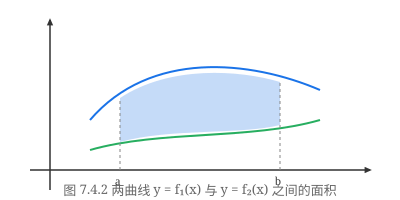
计算由曲线 $y = x^2$ 和 $x = y^2$ 所围区域的面积．
解 求出曲线 $y = x^2$ 和 $x = y^2$ 的交点坐标为 $(0, 0)$ 和 $(1, 1)$，而在 $x \in [0, 1]$ 中，$\sqrt{x} \ge x^2$（如图 7.4.3），因此，所求的面积为
$$ \int_0^1 (\sqrt{x} - x^2)\,\mathrm{d}x = \left.\left(\frac{2}{3}x\sqrt{x} - \frac{1}{3}x^3\right)\right|_0^1 = \frac{1}{3}. $$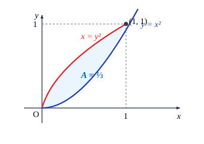
设 $(x, y)$ 是等轴双曲线 $x^2 - y^2 = 1$ 上的任意一点，求由双曲线与连接点 $(x, y)$ 和原点的线段，连接点 $(x, -y)$ 和原点的线段所围成的曲边三角形的面积 $t$（如图 7.4.4）．
不妨设 $x > 0$，利用对称性，可求出位于第一象限的那部分面积再乘以 2．而对那部分面积，可以先求出由双曲线、$x$ 轴及过点 $(x, y)$ 并与 $y$ 轴平行的直线所围区域的面积，再用大三角形的面积 $\dfrac{xy}{2}$ 减去它．
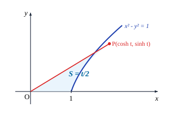
解
$$ \begin{aligned} t &= 2\left(\frac{xy}{2} - \int_1^x \sqrt{u^2 - 1}\,\mathrm{d}u\right) \\ &= xy - \left.\left(x\sqrt{x^2 - 1} - \ln|x + \sqrt{x^2 - 1}|\right)\right|_1^x \\ &= xy - xy + \ln(x + y) \\ &= \ln(x + y). \end{aligned} $$由此得到 $x + y = \mathrm{e}^t$，由于 $x^2 - y^2 = 1$，两式相除便有 $x - y = \mathrm{e}^{-t}$，于是解得
$$ \begin{cases} x = \dfrac{\mathrm{e}^t + \mathrm{e}^{-t}}{2} = \operatorname{ch} t, \\ y = \dfrac{\mathrm{e}^t - \mathrm{e}^{-t}}{2} = \operatorname{sh} t. \end{cases} $$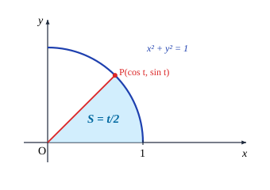
我们知道三角函数又统称为圆函数，这是因为，若在单位圆上取点 $(x, y)$ 和 $(x, -y)$，类似地考虑由圆弧与连接点 $(x, y)$ 和原点的线段，连接点 $(x, -y)$ 和原点的线段所围成的扇形（如图 7.4.5），设扇形的面积为 $t$，则有熟知的结论
$$ \begin{cases} x = \cos t, \\ y = \sin t. \end{cases} $$两相比较，就不难明白，为什么要把 $y = \operatorname{sh} x$、$y = \operatorname{ch} x$ 统称为双曲函数，并分别冠以双曲正弦和双曲
余弦的名称．
若 $y = f(x)$ 是用参数形式
$$ \begin{cases} x = x(t), \\ y = y(t), \end{cases} \quad t \in [T_1, T_2] $$表达的，$x(t)$ 在 $[T_1, T_2]$ 上具有连续导数，且 $x'(t) \ne 0$．那么读者不难用换元法证明，所求的面积可表示成
$$ S = \int_{T_1}^{T_2} |y(t)x'(t)|\,\mathrm{d}t. $$求椭圆 $\dfrac{x^2}{a^2} + \dfrac{y^2}{b^2} = 1$ 的面积．
解 利用对称性，只求第一象限的那一块面积（如图 7.4.6）．将椭圆写成参数方程形式
$$ \begin{cases} x = a\cos t, \\ y = b\sin t, \end{cases} $$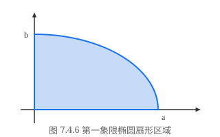
则当 $x$ 从 $0$ 变到 $a$ 时，$t$ 从 $\dfrac{\pi}{2}$ 变到 $0$，所以
$$ \frac{S}{4} = ab\int_{\frac{\pi}{2}}^0 \sin t(\cos t)'\,\mathrm{d}t = ab\int_0^{\frac{\pi}{2}}\sin^2 t\,\mathrm{d}t = \frac{\pi}{4}ab, $$即
$$ S = \pi ab. $$求旋轮线（摆线）$\begin{cases} x = a(t - \sin t), \\ y = a(1 - \cos t), \end{cases} t \in [0, 2\pi]$ 与 $x$ 轴所围区域的面积（如图 7.4.7）．
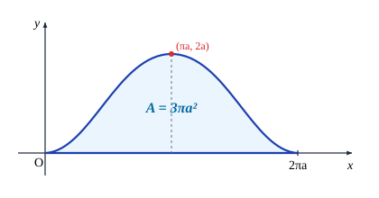
解
$$ S = a^2\int_0^{2\pi}(1 - \cos t)^2\,\mathrm{d}t = a^2\int_0^{2\pi}\left(1 - 2\cos t + \frac{1 + \cos 2t}{2}\right)\,\mathrm{d}t = 3\pi a^2. $$下面来导出极坐标下的求面积公式．
设曲线的极坐标方程 $r = r(\theta)$ 是区间 $[\alpha, \beta]$ 上的连续函数 ($\beta - \alpha \le 2\pi$)，我们用与 §7.1 类似的讨论来求由两条极径 $\theta = \alpha, \theta = \beta$ 与 $r = r(\theta)$ 围成的图形的面积 $S$．
在 $[\alpha, \beta]$ 中取一系列的分点 $\theta_i$，满足
$$ \alpha = \theta_0 < \theta_1 < \theta_2 < \cdots < \theta_n = \beta. $$记 $\Delta\theta_i = \theta_i - \theta_{i-1}$，在每个 $[\theta_{i-1}, \theta_i]$ 上任取一点 $\xi_i$，用半径为 $r(\xi_i)$、圆心角为 $\Delta\theta_i$ 的小扇形
的面积 $\dfrac{1}{2}r^2(\xi_i)\Delta\theta_i$ 近似代替相应的小曲边扇形的面积（如图 7.4.8），那么
$$ S \approx \frac{1}{2}\sum_{i=1}^n r^2(\xi_i)\Delta\theta_i, $$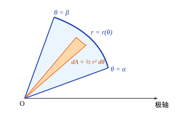
因为 $r = r(\theta)$ 在 $[\alpha, \beta]$ 中连续，所以 $\dfrac{1}{2}r^2(\theta)$ 在 $[\alpha, \beta]$ 上可积．令小扇形的圆心角的最大值 $\lambda = \max\limits_{1 \le i \le n}(\Delta\theta_i) \to 0$，即有
$$ S = \frac{1}{2}\lim_{\lambda \to 0}\sum_{i=1}^n r^2(\xi_i)\Delta\theta_i = \frac{1}{2}\int_\alpha^\beta r^2(\theta)\,\mathrm{d}\theta, $$这就是极坐标下的求面积公式．
求双曲螺线 $r\theta = a$ 当 $\theta$ 从 $\dfrac{\pi}{4}$ 变到 $2\pi + \dfrac{\pi}{4}$ 时，极径 $r$ 扫过的面积（如图 7.4.9）．
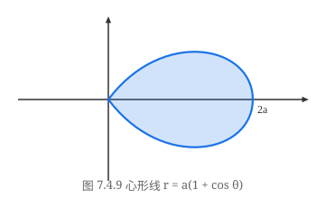
解 直接用极坐标下的求面积公式，
$$ S = \frac{a^2}{2}\int_{\frac{\pi}{4}}^{2\pi+\frac{\pi}{4}} \frac{1}{\theta^2}\,\mathrm{d}\theta = \left.\frac{a^2}{2}\left(-\frac{1}{\theta}\right)\right|_{\frac{\pi}{4}}^{\frac{9\pi}{4}} = \frac{16a^2}{9\pi}. $$求三叶玫瑰线 $r = a\sin 3\theta, \theta \in [0, \pi]$（如图 7.4.10）所围区域的面积．
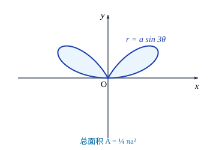
解 由对称性，我们只求半叶“玫瑰”的面积，这时 $\theta$ 的变化范围是 $\left[0, \dfrac{\pi}{6}\right]$．
$$ S = 6\cdot\frac{a^2}{2}\int_0^{\frac{\pi}{6}}\sin^2 3\theta\,\mathrm{d}\theta = a^2\int_0^{\frac{\pi}{2}}\sin^2\varphi\,\mathrm{d}\varphi = \frac{\pi a^2}{4}. $$求曲线的弧长
首先来定义什么叫一段曲线的弧长．
设平面曲线的参数方程为
$$ \begin{cases} x = x(t), \\ y = y(t), \end{cases} \quad t \in [T_1, T_2]. $$对区间 $[T_1, T_2]$ 作如下划分：
$$ T_1 = t_0 < t_1 < t_2 < \cdots < t_n = T_2, $$得到这条曲线上（如图 7.4.11）顺次排列的 $n+1$ 个点 $P_0, P_1, \cdots, P_n, P_i = (x(t_i), y(t_i))$．
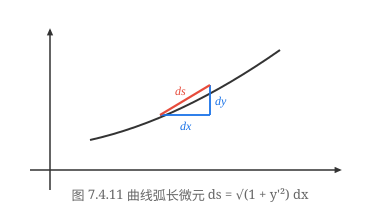
用 $P_{i-1}P_i$ 表示联结点 $P_{i-1}$ 和 $P_i$ 的直线段的长度，那么相应的折线的长度可以表示为 $\displaystyle\sum_{i=1}^n P_{i-1}P_i$．若当 $\lambda = \max\limits_{1 \le i \le n}(\Delta t_i) \to 0$ 时，极限
$$ \lim_{\lambda \to 0}\sum_{i=1}^n P_{i-1}P_i $$存在，且极限值与区间 $[T_1, T_2]$ 的划分无关，则称这条曲线是可求长的，并将此极限值
$$ l = \lim_{\lambda \to 0}\sum_{i=1}^n P_{i-1}P_i $$称为该条曲线的弧长．
我国古代数学家刘徽、祖冲之等人用“割圆术”求圆周率 $\pi$，用的也正是这样的思想方法．
按定义得到的和式“$\displaystyle\sum_{i=1}^n P_{i-1}P_i$”并非是 Riemann 和“$\displaystyle\sum_{i=1}^n f(\xi_i)\Delta t_i$”的形式．为了能够用定积分来求弧长，首先必须将它化成 Riemann 和的形式．
显然，
$$ P_{i-1}P_i = \sqrt{[x(t_i) - x(t_{i-1})]^2 + [y(t_i) - y(t_{i-1})]^2}, $$若 $x(t)$ 和 $y(t)$ 在 $[T_1, T_2]$ 中连续，在 $(T_1, T_2)$ 中可导，则由 Lagrange 中值定理，存在 $\eta_i$ 和 $\sigma_i$ 属于 $(t_{i-1}, t_i)$，满足
$$ x(t_i) - x(t_{i-1}) = x'(\eta_i)\Delta t_i, \quad y(t_i) - y(t_{i-1}) = y'(\sigma_i)\Delta t_i, $$于是
$$ \sum_{i=1}^n P_{i-1}P_i = \sum_{i=1}^n \sqrt{[x'(\eta_i)]^2 + [y'(\sigma_i)]^2}\cdot\Delta t_i. $$由于 $\eta_i$ 和 $\sigma_i$ 一般不会相同，上式还不是 Riemann 和
$$ \sum_{i=1}^n \sqrt{[x'(\xi_i)]^2 + [y'(\xi_i)]^2}\cdot\Delta t_i, \quad \xi_i \in [t_{i-1}, t_i] $$的形式，但两者已相当接近了．这提示我们，很有可能弧长 $l$ 正是这一 Riemann 和的极限值．
若 $x'(t)$ 和 $y'(t)$ 在 $[T_1, T_2]$ 上连续，且 $[x'(t)]^2 + [y'(t)]^2 \ne 0$，则由参数方程
$$ \begin{cases} x = x(t), \\ y = y(t), \end{cases} \quad t \in [T_1, T_2] $$确定的曲线称为光滑曲线．
光滑曲线上的切线是连续变动的．
若由参数方程
$$ \begin{cases} x = x(t), \\ y = y(t), \end{cases} \quad t \in [T_1, T_2] $$确定的曲线是光滑曲线，则它是可求长的，其弧长为
$$ l = \int_{T_1}^{T_2} \sqrt{[x'(t)]^2 + [y'(t)]^2}\,\mathrm{d}t. $$证 利用上面的记号，则对区间 $[T_1, T_2]$ 的任意划分，有
$$ \begin{aligned} &\left|\sum_{i=1}^n P_{i-1}P_i - \sum_{i=1}^n \sqrt{[x'(\xi_i)]^2 + [y'(\xi_i)]^2}\Delta t_i\right| \\ = &\left|\sum_{i=1}^n \sqrt{[x'(\eta_i)]^2 + [y'(\sigma_i)]^2}\Delta t_i - \sum_{i=1}^n \sqrt{[x'(\xi_i)]^2 + [y'(\xi_i)]^2}\Delta t_i\right| \\ \le &\sum_{i=1}^n \left|\sqrt{[x'(\eta_i)]^2 + [y'(\sigma_i)]^2} - \sqrt{[x'(\xi_i)]^2 + [y'(\xi_i)]^2}\right|\Delta t_i. \end{aligned} $$由三角不等式
$$ |\sqrt{x_1^2 + x_2^2} - \sqrt{y_1^2 + y_2^2}| \le \sqrt{(x_1 - y_1)^2 + (x_2 - y_2)^2} \le |x_1 - y_1| + |x_2 - y_2|, $$得到
$$ \begin{aligned} &\left|\sum_{i=1}^n P_{i-1}P_i - \sum_{i=1}^n \sqrt{[x'(\xi_i)]^2 + [y'(\xi_i)]^2}\Delta t_i\right| \\ \le &\sum_{i=1}^n |x'(\eta_i) - x'(\xi_i)|\Delta t_i + \sum_{i=1}^n |y'(\sigma_i) - y'(\xi_i)|\Delta t_i \\ \le &\sum_{i=1}^n \bar{\omega}_i \Delta t_i + \sum_{i=1}^n \tilde{\omega}_i \Delta t_i, \end{aligned} $$其中 $\bar{\omega}_i$ 和 $\tilde{\omega}_i$ 分别是 $x'(t)$ 和 $y'(t)$ 在 $[t_{i-1}, t_i]$ 中的振幅．
因为 $x'(t)$ 和 $y'(t)$ 在 $[T_1, T_2]$ 上可积，由定积分存在的充分必要条件，当 $\lambda = \max\limits_{1 \le i \le n}(\Delta t_i) \to 0$ 有
$$ \sum_{i=1}^n \bar{\omega}_i \Delta t_i \to 0, \quad \text{及} \quad \sum_{i=1}^n \tilde{\omega}_i \Delta t_i \to 0, $$于是
$$ \begin{aligned} l &= \lim_{\lambda \to 0}\sum_{i=1}^n P_{i-1}P_i = \lim_{\lambda \to 0}\sum_{i=1}^n \sqrt{[x'(\xi_i)]^2 + [y'(\xi_i)]^2}\Delta t_i \\ &= \int_{T_1}^{T_2}\sqrt{[x'(t)]^2 + [y'(t)]^2}\,\mathrm{d}t. \end{aligned} $$证毕
我们将
$$ \mathrm{d}l = \sqrt{[x'(t)]^2 + [y'(t)]^2}\,\mathrm{d}t $$称为弧长的微分．
当曲线采用直角坐标系下的显式方程 $y = f(x), x \in [a, b]$ 时，容易得到相应的弧长公式
$$ l = \int_a^b \sqrt{1 + [f'(x)]^2}\,\mathrm{d}x. $$当曲线采用极坐标方程 $r = r(\theta), \theta \in [\alpha, \beta]$ 时，由于 $x = r(\theta)\cos\theta, y = r(\theta)\sin\theta$，因此
$$ x'(\theta) = r'(\theta)\cos\theta - r(\theta)\sin\theta, \quad y'(\theta) = r'(\theta)\sin\theta + r(\theta)\cos\theta, $$所以
$$ [x'(\theta)]^2 + [y'(\theta)]^2 = [r(\theta)]^2 + [r'(\theta)]^2, $$于是
$$ l = \int_\alpha^\beta \sqrt{[r(\theta)]^2 + [r'(\theta)]^2}\,\mathrm{d}\theta. $$求半径为 $a$ 的圆的周长．
解法一 采用直角坐标系下的显式方程 $y = \sqrt{a^2 - x^2}$，只求第一象限部分．
$$ l = 4\int_0^a \sqrt{1 + [f'(x)]^2}\,\mathrm{d}x = 4a\int_0^a \frac{\mathrm{d}x}{\sqrt{a^2 - x^2}} = \left.4a\cdot\arcsin\frac{x}{a}\right|_0^a = 2\pi a. $$解法二 采用直角坐标系下的参数方程
$$ \begin{cases} x = a\cos t, \\ y = a\sin t, \end{cases} $$同样只求第一象限部分，
$$ l = 4a\int_0^{\frac{\pi}{2}}\sqrt{\cos^2 t + \sin^2 t}\,\mathrm{d}t = 2\pi a. $$解法三 采用极坐标方程 $r = a, \theta \in [0, 2\pi]$，这时 $r' = 0$，因此
$$ l = \int_0^{2\pi}\sqrt{[r(\theta)]^2 + [r'(\theta)]^2}\,\mathrm{d}\theta = a\int_0^{2\pi}\mathrm{d}\theta = 2\pi a. $$一般来说，采用不同的方程形式求曲线的弧长，难易程度会有所不同．
求旋轮线一拱的弧长（如图 7.4.7）．
解
$$ l = a\int_0^{2\pi}\sqrt{(1 - \cos t)^2 + \sin^2 t}\,\mathrm{d}t = \sqrt{2}a\int_0^{2\pi}\sqrt{1 - \cos t}\,\mathrm{d}t = 2a\int_0^{2\pi}\sin\frac{t}{2}\,\mathrm{d}t = 8a. $$用同样的方法，可将定理 7.4.1 的结论推广到求空间曲线的弧长上去．
设 $x'(t), y'(t), z'(t)$ 在 $[T_1, T_2]$ 上连续，且 $[x'(t)]^2 + [y'(t)]^2 + [z'(t)]^2 \ne 0$，则由参数方程
$$ \begin{cases} x = x(t), \\ y = y(t), \\ z = z(t), \end{cases} \quad t \in [T_1, T_2] $$确定的曲线的弧长为
$$ l = \int_{T_1}^{T_2}\sqrt{[x'(t)]^2 + [y'(t)]^2 + [z'(t)]^2}\,\mathrm{d}t. $$求圆锥螺线
$$ \begin{cases} x = at\cos t, \\ y = -at\sin t, \\ z = bt \end{cases} $$（如图 7.4.12）第一圈的长度．
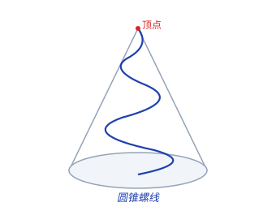
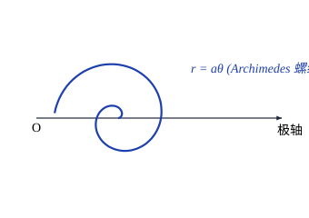
解
$$ \begin{aligned} l &= \int_0^{2\pi} \sqrt{a^2[\cos t - t\sin t]^2 + a^2[-\sin t - t\cos t]^2 + b^2}\,\mathrm{d}t \\ &= \int_0^{2\pi} \sqrt{a^2 t^2 + a^2 + b^2}\,\mathrm{d}t \\ &= \left.\frac{a}{2}\left(t\sqrt{t^2 + s^2} + s^2 \ln|t + \sqrt{t^2 + s^2}|\right)\right|_0^{2\pi} \quad \left(\text{记 } \frac{b^2}{a^2} + 1 = s^2\right) \\ &= a\left(\pi\sqrt{4\pi^2 + s^2} + \frac{s^2}{2}\ln\frac{2\pi + \sqrt{4\pi^2 + s^2}}{s}\right). \end{aligned} $$当 $b = 0$ 时，圆锥螺线退化为平面上的 Archimedes 螺线（如图 7.4.13），此时 $s^2 = 1$，因此
$$ l = \frac{a}{2}\left[2\pi\sqrt{4\pi^2 + 1} + \ln(2\pi + \sqrt{4\pi^2 + 1})\right], $$这正是 Archimedes 螺线 $r = a\theta$ 第一圈的长度（见习题 3(7)）．
求某些特殊的几何体的体积
设三维空间中的一个几何体夹在平面 $x = a$ 和 $x = b$ 之间，若对于任意 $x \in [a, b]$，过 $x$ 点且与 $x$ 轴垂直的平面与该几何体相截，截面的面积 $A(x)$ 是已知的，且 $A(x)$ 又是 $[a, b]$ 上的连续函数，则我们可以用定积分计算出它的体积（如图 7.4.14）．
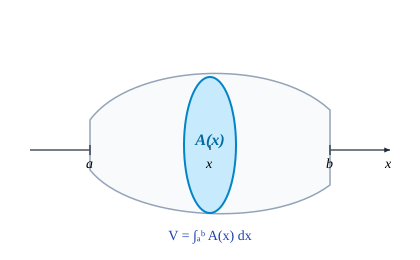
对区间 $[a, b]$ 作划分
$$ a = x_0 < x_1 < x_2 < \cdots < x_n = b, $$记小区间 $[x_{i-1}, x_i]$ 的长度为
$$ \Delta x_i = x_i - x_{i-1}, $$在每个小区间上取一点 $\xi_i$，用底面积为 $A(\xi_i)$，高为 $\Delta x_i$ 的柱体体积近似代替夹在平面 $x = x_{i-1}$ 和 $x = x_i$ 之间的那块小几何体的体积，那么这些柱体体积之和
$$ \sum_{i=1}^n A(\xi_i)\Delta x_i $$就是整个几何体体积的近似．由于 $A(x)$ 在 $[a, b]$ 上连续，当 $\lambda = \max\limits_{1 \le i \le n}(\Delta x_i) \to 0$ 时，即知
$$ V = \lim_{\lambda \to 0}\sum_{i=1}^n A(\xi_i)\Delta x_i = \int_a^b A(x)\,\mathrm{d}x $$就是所要求的几何体的体积．
据《九章算术》记载，我国南北朝时的数学家祖暅（祖冲之之子）在求出球的体积的同时，得到了一个重要的结论（后人称之为“祖暅原理”）：“夫叠基成立积，缘幂势既同，则积不容异．”用现在的话来讲，一个几何体（“立积”）是由一系列很薄的小片（“基”）叠成的；若两个几何体相应的小片的截面积（“幂势”）都相同，那它们的体积（“积”）必然相等．这一结论与上述求体积公式的推导思想是相同的．
意大利数学家 Cavalieri 在 1635 年得到了同样的结论，但比祖暅迟了一千多年．
已知一个直圆柱体的底面半径为 $a$，平面 $P_1$ 过其底面圆周上的一点，且与其底面所在的平面 $P_0$ 成夹角 $\theta$，求圆柱体被 $P_0$ 与 $P_1$ 所截得的那部分的体积．
解 先建立坐标系．将平面 $P_0$ 取成 $xy$ 平面，并使得圆柱体底面的圆心与原点重合，同时让 $P_1$ 与圆柱体底面圆周的交点落在 $y$ 轴上（如图 7.4.15）．
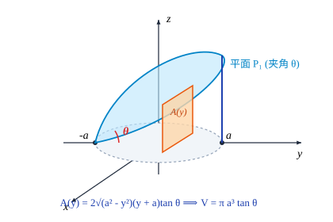
对于任意 $y \in [-a, a]$，过 $y$ 点且与 $y$ 轴垂直的平面与该几何体的截面是一个竖立的矩形，它的底为 $2\sqrt{a^2 - y^2}$，高为 $(y + a)\tan\theta$，于是
$$ A(y) = 2\sqrt{a^2 - y^2}(y + a)\tan\theta, $$因此，所求的体积为
$$ V = 2\tan\theta \left(\int_{-a}^a y\sqrt{a^2 - y^2}\,\mathrm{d}y + a\int_{-a}^a \sqrt{a^2 - y^2}\,\mathrm{d}y\right). $$容易看出，括号内的第一项是一个奇函数在对称区间上的积分，其值为 0，第二项中的积分恰为上半个圆的面积，即得到
$$ V = \pi a^3 \tan\theta. $$若采用以与 $x$ 轴垂直的平面与该几何体相截，截面是一个直角梯形，处理就会麻烦很多．由此可见，对几何体作截面的方式与计算是否简便关系很大，在实际计算时要根据具体情况仔细分析，找到最简便的方案．
公式 $V = \displaystyle\int_a^b A(x)\,\mathrm{d}x$ 的一个很重要的用途是计算旋转体的体积．
设函数 $f(x)$ 在 $[a, b]$ 上连续．对于由 $0 \le y \le |f(x)|$ 与 $a \le x \le b$ 所界定的那块平面图形绕 $x$ 轴旋转一周得到的旋转体，若用过 $x$ 点且与 $x$ 轴垂直的平面去截，得到的截面显然是一个半径 $|f(x)|$ 的圆（如图 7.4.16）．因此它的面积为
$$ A(x) = \pi [f(x)]^2, $$所以该旋转体的体积计算公式为
$$ V = \pi \int_a^b [f(x)]^2\,\mathrm{d}x. $$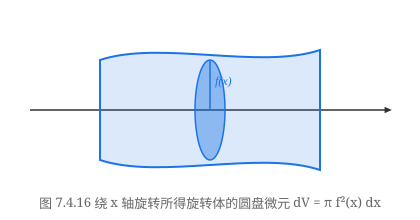
设曲线的参数方程为
$$ \begin{cases} x = x(t), \\ y = y(t), \end{cases} \quad t \in [T_1, T_2], $$$x'(t) \ne 0$．对上式作变量代换，即得到相应的旋转体的体积公式
$$ V = \pi \int_{T_1}^{T_2} y^2(t)|x'(t)|\,\mathrm{d}t. $$求半径为 $a$ 的球的体积．
解 即求上半圆周 $y = \sqrt{a^2 - x^2}$ 与 $x$ 轴围成的那半个圆绕 $x$ 轴旋转一周所得的旋转体的体积，
$$ V = \pi\int_{-a}^a (a^2 - x^2)\,\mathrm{d}x = \left.\pi\left(a^2 x - \frac{x^3}{3}\right)\right|_{-a}^a = \frac{4}{3}\pi a^3. $$求旋轮线一拱（如图 7.4.7）与 $x$ 轴围成的图形绕 $x$ 轴旋转一周所得的旋转体的体积．
解 将旋轮线的参数方程代入求旋转体体积的公式
$$ \begin{aligned} V &= \pi \int_0^{2\pi} a^2(1 - \cos t)^2\cdot a(1 - \cos t)\,\mathrm{d}t = \pi a^3 \int_0^{2\pi} (1 - \cos t)^3\,\mathrm{d}t \\ &= \pi a^3 \int_0^{2\pi}\left(1 - 3\cos t + 3\cos^2 t - \cos^3 t\right)\,\mathrm{d}t = 5\pi^2 a^3. \end{aligned} $$极坐标下由 $0 \le r \le r(\theta)$ ($\theta \in [\alpha, \beta] \subset [0, \pi]$) 所表示的区域绕极轴旋转一周所得的旋转体的体积为
$$ V = \frac{2}{3}\pi \int_\alpha^\beta r^3(\theta)\sin\theta\,\mathrm{d}\theta. $$请读者自行证明．
求旋转曲面的面积
设
$$ \begin{cases} x = x(t), \\ y = y(t), \end{cases} \quad t \in [T_1, T_2] $$确定平面上一段光滑曲线，且在 $[T_1, T_2]$ 上 $y(t) \ge 0$，它绕 $x$ 轴旋转一周得到一个旋转曲面（如图 7.4.17）．
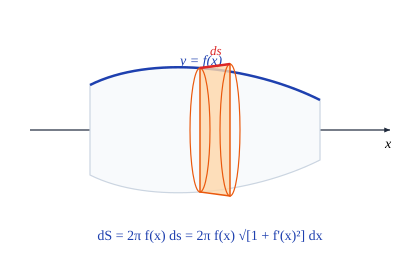
对区间 $[T_1, T_2]$ 作划分：
$$ T_1 = t_0 < t_1 < t_2 < \cdots < t_n = T_2, $$由此得到曲线上顺次排列的 $n+1$ 个点 $P_0, P_1, \cdots, P_n, P_i = (x(t_i), y(t_i))$．
记 $\Delta S_i$ 是联结 $P_{i-1}$ 和 $P_i$ 的直线段绕 $x$ 轴旋转一周得到的圆台侧面的面积，则
$$ \Delta S_i = \pi [y(t_{i-1}) + y(t_i)]\cdot P_{i-1}P_i. $$若当 $\lambda = \max\limits_{1 \le i \le n}(\Delta t_i) \to 0$ 时，极限
$$ \lim_{\lambda \to 0}\sum_{i=1}^n \Delta S_i $$存在，且极限值与区间 $[T_1, T_2]$ 的划分无关，则称极限值
$$ S = \lim_{\lambda \to 0}\sum_{i=1}^n \Delta S_i $$为该段曲线绕 $x$ 轴旋转一周所得到的旋转曲面的面积．
这也不是 Riemann 和的极限，但与求曲线长度时的讨论一样，可以得到
$$ S = 2\pi \int_{T_1}^{T_2} y(t)\sqrt{[x'(t)]^2 + [y'(t)]^2}\,\mathrm{d}t. $$证明留给读者完成．
利用弧长的微分公式，也可以将上式写成
$$ S = 2\pi \int_{T_1}^{T_2} y(t)\,\mathrm{d}l. $$请读者考虑它的几何意义，并由此入手导出在直角坐标方程 $y = f(x)$ 和极坐标方程 $r = r(\theta)$ 下旋转曲面面积的相应公式．
求半径为 $a$ 的球的表面积．
解 此即为求半径为 $a$ 的圆的上半部分 $y = \sqrt{a^2 - x^2}$ 绕 $x$ 轴旋转一周所得的旋转曲面的面积．因此，
$$ S = 2\pi \int_{-a}^a \sqrt{a^2 - x^2}\sqrt{1 + \frac{x^2}{a^2 - x^2}}\,\mathrm{d}x = 2\pi a \int_{-a}^a \mathrm{d}x = 4\pi a^2. $$求旋轮线一拱（如图 7.4.7）绕 $x$ 轴旋转一周所得旋转曲面的面积．
解 将旋轮线的参数方程代入求旋转曲面面积的公式
$$ \begin{aligned} S &= 2\pi a^2 \int_0^{2\pi} (1 - \cos t)\sqrt{(1 - \cos t)^2 + \sin^2 t}\,\mathrm{d}t \\ &= 2\sqrt{2}\pi a^2 \int_0^{2\pi} (1 - \cos t)\sqrt{1 - \cos t}\,\mathrm{d}t \\ &= 16\pi a^2 \int_0^\pi \sin^4 u\,\mathrm{d}u = \frac{64}{3}\pi a^2. \end{aligned} $$我们将本节得到的计算公式列成下面的简表，读者在使用这些公式的时候务必注意它们的使用范围和条件，尤其是采用参数方程时积分上下限的取法．
| 直角坐标显式方程 $y = f(x),\ x \in [a, b]$ |
直角坐标参数方程 $\begin{cases}x = x(t), \\ y = y(t),\end{cases} t \in [T_1, T_2]$ |
极坐标方程 $r = r(\theta),\ \theta \in [\alpha, \beta]$ |
|
|---|---|---|---|
| 平面图形面积 | $\displaystyle\int_a^b |f(x)|\,\mathrm{d}x$ | $\displaystyle\int_{T_1}^{T_2} |y(t)x'(t)|\,\mathrm{d}t$ | $\displaystyle\frac{1}{2}\int_\alpha^\beta r^2(\theta)\,\mathrm{d}\theta$ |
| 弧长的微分 | $\mathrm{d}l = \sqrt{1 + [f'(x)]^2}\,\mathrm{d}x$ | $\mathrm{d}l = \sqrt{[x'(t)]^2 + [y'(t)]^2}\,\mathrm{d}t$ | $\mathrm{d}l = \sqrt{[r(\theta)]^2 + [r'(\theta)]^2}\,\mathrm{d}\theta$ |
| 曲线弧长 | $\displaystyle\int_a^b \sqrt{1 + [f'(x)]^2}\,\mathrm{d}x$ | $\displaystyle\int_{T_1}^{T_2}\sqrt{[x'(t)]^2 + [y'(t)]^2}\,\mathrm{d}t$ | $\displaystyle\int_\alpha^\beta \sqrt{[r(\theta)]^2 + [r'(\theta)]^2}\,\mathrm{d}\theta$ |
| 旋转体体积 | $\pi\displaystyle\int_a^b [f(x)]^2\,\mathrm{d}x$ | $\pi\displaystyle\int_{T_1}^{T_2} y^2(t)|x'(t)|\,\mathrm{d}t$ | $\displaystyle\frac{2}{3}\pi\int_\alpha^\beta r^3(\theta)\sin\theta\,\mathrm{d}\theta$ |
| 旋转曲面面积 | $2\pi\displaystyle\int_a^b |f(x)|\sqrt{1 + [f'(x)]^2}\,\mathrm{d}x$ | $2\pi\displaystyle\int_{T_1}^{T_2} |y(t)|\sqrt{[x'(t)]^2 + [y'(t)]^2}\,\mathrm{d}t$ | $2\pi\displaystyle\int_\alpha^\beta r(\theta)\sin\theta\sqrt{[r(\theta)]^2 + [r'(\theta)]^2}\,\mathrm{d}\theta$ |
曲线的曲率
在几何学和许多实际问题中，常常需要考虑曲线的弯曲程度．例如在铁路设计时，在拐弯处就不能让其弯曲程度太大，否则火车在运行时就会出现危险．
究竟如何来刻画曲线的弯曲程度呢？考察如图 7.4.18 所示的两条光滑曲线 $C$ 和 $C'$ 上的曲线段 $AB$ 和 $A'B'$，它们的弧长分别记为 $\Delta s$ 与 $\Delta s'$．当动点从 $A$ 点沿曲线段 $AB$ 运动到 $B$ 点时，$A$ 点的切线 $T_A$ 也随着转动到 $B$ 点的切线 $T_B$，记这两条切线之间的夹角为 $\Delta\varphi$（它等于 $T_B$ 和 $x$ 轴的交角与 $T_A$ 和 $x$ 轴的交角之差）．同样地，记曲线段 $A'B'$ 的两个端点 $A', B'$ 处的切线 $T_{A'}$ 和 $T_{B'}$ 的夹角 $\Delta\varphi'$．
显然，当弧的长度相同时，则切线间的夹角愈大，曲线的弯曲程度就愈大；而当切线间的夹角相同时，则弧的长度愈小，同样曲线的弯曲程度就愈大．也就是说，如果 $\Delta s' = \Delta s$，而 $\Delta\varphi' > \Delta\varphi$，那么可以认为 $A'B'$ 的弯曲程度比 $AB$ 的弯曲程度大；反之，如果 $\Delta\varphi' = \Delta\varphi$，而 $\Delta s' < \Delta s$，那么同样可以认为 $A'B'$ 的弯曲程度比 $AB$ 的弯曲程度大．
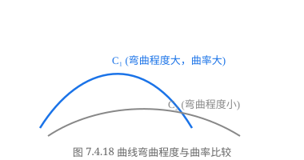
综上所述，我们定义
$$ \bar{K} = \left|\frac{\Delta\varphi}{\Delta s}\right| $$为曲线段 $AB$ 的平均曲率，它刻画了曲线段 $AB$ 的平均弯曲程度．平均曲率只描写了曲线 $C$ 在这一段的“平均弯曲程度”．$B$ 越接近于 $A$，即 $\Delta s$ 越小，$AB$ 弧的平均曲率就越能精确刻画曲线 $C$ 在 $A$ 处的弯曲程度，因此定义
$$ K = \lim_{\Delta s \to 0}\left|\frac{\Delta\varphi}{\Delta s}\right| = \left|\frac{\mathrm{d}\varphi}{\mathrm{d}s}\right| $$为曲线 $C$ 在 $A$ 点的曲率（如果该式中的极限存在的话），这里取绝对值是为了使曲率不为负数．
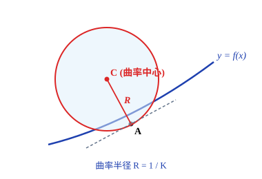
设曲线 $C$ 在点 $A$ 处的曲率 $K \ne 0$，若过 $A$ 点作一个半径为 $\dfrac{1}{K}$ 的圆，使它在 $A$ 点处与曲线 $C$ 有相同的切线，并在 $A$ 点附近与该曲线位于切线的同侧（如图 7.4.19）．我们把这个圆称曲线 $C$ 在点 $A$ 处的曲率圆或密切圆．
曲率圆的半径 $R = \dfrac{1}{K}$ 和圆心 $A_0$ 分别称为曲线 $C$ 在点 $A$ 处的曲率半径和曲率中心．由曲率圆的定义可以知道，曲线 $C$ 在点 $A$ 处与曲率圆既有相同的切线，又有相同的曲率和凸性．
设光滑曲线由参数方程
$$ \begin{cases} x = x(t), \\ y = y(t), \end{cases} \quad \alpha \le t \le \beta $$确定，且 $x(t), y(t)$ 有二阶导数．对于每个 $t \in [\alpha, \beta]$，曲线在对应点的切线斜率为
$$ \frac{\mathrm{d}y}{\mathrm{d}x} = \frac{y'(t)}{x'(t)} = \tan\varphi, $$其中 $\varphi$ 是该切线与 $x$ 轴的夹角，由 $\varphi = \arctan\dfrac{y'(t)}{x'(t)}$，即可得到
$$ \frac{\mathrm{d}\varphi}{\mathrm{d}t} = \frac{x'(t)y''(t) - x''(t)y'(t)}{x'^2(t) + y'^2(t)}. $$另外，由弧长的微分公式知
$$ \frac{\mathrm{d}s}{\mathrm{d}t} = \sqrt{x'^2(t) + y'^2(t)}, $$于是
$$ K = \left|\frac{\mathrm{d}\varphi}{\mathrm{d}s}\right| = \left|\frac{\dfrac{\mathrm{d}\varphi}{\mathrm{d}t}}{\dfrac{\mathrm{d}s}{\mathrm{d}t}}\right| = \frac{|x'(t)y''(t) - x''(t)y'(t)|}{(x'^2(t) + y'^2(t))^{\frac{3}{2}}}. $$这就是曲率的计算公式．
特别地，如果曲线由 $y = y(x)$ 表示，且 $y(x)$ 有二阶导数，那么相应的计算公式为
$$ K = \frac{|y''|}{(1 + y'^2)^{\frac{3}{2}}}. $$容易知道，直线上曲率处处为 0．
求椭圆 $x = a\cos t, y = b\sin t\ (0 \le t \le 2\pi)$ 上曲率最大和最小的点 ($0 < b \le a$)．
解 由于
$$ x' = -a\sin t, \quad x'' = -a\cos t, \quad y' = b\cos t, \quad y'' = -b\sin t, $$因此
$$ K = \frac{|x'y'' - x''y'|}{(x'^2 + y'^2)^{\frac{3}{2}}} = \frac{|ab\sin^2 t + ab\cos^2 t|}{(a^2\sin^2 t + b^2\cos^2 t)^{\frac{3}{2}}} = \frac{ab}{[(a^2 - b^2)\sin^2 t + b^2]^{\frac{3}{2}}}. $$因此当 $a > b > 0$ 时，椭圆上在 $t = 0, \pi$ 对应的点，即长轴的两个端点，曲率最大；在 $t = \dfrac{\pi}{2}, \dfrac{3\pi}{2}$ 对应的点，即短轴的两个端点，曲率最小．
当 $a = b = R$ 时（这时椭圆成为半径为 $R$ 的圆），$K = 1/R$，即圆上各点处的曲率相同，其值为圆半径的倒数，而曲率半径正好是 $R$．
求悬链线
$$ y = \frac{a}{2}\left(\mathrm{e}^{\frac{x}{a}} + \mathrm{e}^{-\frac{x}{a}}\right) $$的曲率 ($a > 0$)．
解 易知
$$ y' = \frac{1}{2}\left(\mathrm{e}^{\frac{x}{a}} - \mathrm{e}^{-\frac{x}{a}}\right), \quad y'' = \frac{1}{2a}\left(\mathrm{e}^{\frac{x}{a}} + \mathrm{e}^{-\frac{x}{a}}\right) = \frac{y}{a^2}. $$由于 $y > 0$ 及
$$ \sqrt{1 + y'^2} = \sqrt{1 + \frac{1}{4}\left(\mathrm{e}^{\frac{x}{a}} - \mathrm{e}^{-\frac{x}{a}}\right)^2} = \frac{y}{a}, $$所以
$$ K = \frac{|y''|}{(1 + y'^2)^{\frac{3}{2}}} = \left.\frac{y}{a^2}\middle/\left(\frac{y}{a}\right)^3\right. = \frac{a}{y^2} = \frac{4}{a\left(\mathrm{e}^{\frac{x}{a}} + \mathrm{e}^{-\frac{x}{a}}\right)^2}. $$习题 7.4
(1) $y = \dfrac{1}{x},\ y = x,\ x = 2$；
(2) $y^2 = 4(x+1),\ y^2 = 4(1-x)$；
(3) $y = x,\ y = x + \sin^2 x,\ x = 0,\ x = \pi$；
(4) $y = \mathrm{e}^x,\ y = \mathrm{e}^{-x},\ x = 1$；
(5) $y = |\ln x|,\ y = 0,\ x = 0.1,\ x = 10$；
(6) 叶形线 $\begin{cases} x = 2t - t^2, \\ y = 2t^2 - t^3, \end{cases} 0 \le t \le 2$；
(7) 星形线 $\begin{cases} x = a\cos^3 t, \\ y = a\sin^3 t, \end{cases} 0 \le t \le 2\pi$；
(8) Archimedes 螺线 $r = a\theta,\ \theta = 0,\ \theta = 2\pi$；
(9) 对数螺线 $r = a\mathrm{e}^\theta,\ \theta = 0,\ \theta = 2\pi$；
(10) 蚌线 $r = a\cos\theta + b\ (b \ge a > 0)$；
(11) $r = 3\cos\theta,\ r = 1 + \cos\theta\ \left(-\dfrac{\pi}{3} \le \theta \le \dfrac{\pi}{3}\right)$；
(12) 双纽线 $r^2 = a^2\cos 2\theta$；
(13) 四叶玫瑰线 $r = a\cos 2\theta$；
(14) Descartes 叶形线 $x^3 + y^3 = 3axy$；
(15) $x^4 + y^4 = a^2(x^2 + y^2)$．
求由抛物线 $y^2 = 4ax$ 与过其焦点的弦所围的图形面积的最小值．
(1) $y = x^{3/2},\ 0 \le x \le 4$；
(2) $x = \dfrac{y^2}{4} - \dfrac{\ln y}{2},\ 1 \le y \le \mathrm{e}$；
(3) $y = \ln\cos x,\ 0 \le x \le a < \dfrac{\pi}{2}$；
(4) 星形线 $\begin{cases} x = a\cos^3 t, \\ y = a\sin^3 t, \end{cases} 0 \le t \le 2\pi$；
(5) 圆的渐开线 $\begin{cases} x = a(\cos t + t\sin t), \\ y = a(\sin t - t\cos t), \end{cases} 0 \le t \le 2\pi$；
(6) 心脏线 $r = a(1 - \cos\theta),\ 0 \le \theta \le 2\pi$；
(7) Archimedes 螺线 $r = a\theta,\ 0 \le \theta \le 2\pi$；
(8) $r = a\sin^3\dfrac{\theta}{3},\ 0 \le \theta \le 3\pi$．
在旋轮线的第一拱上，求分该拱的长度为 $1 : 3$ 的点的坐标．
(1) 正椭圆台：上底是长半轴为 $a$、短半轴为 $b$ 的椭圆，下底是长半轴为 $A$、短半轴为 $B$ 的椭圆 ($A > a, B > b$)，高为 $h$；
(2) 椭球体 $\dfrac{x^2}{a^2} + \dfrac{y^2}{b^2} + \dfrac{z^2}{c^2} = 1$；
(3) 直圆柱面 $x^2 + y^2 = a^2$ 和 $x^2 + z^2 = a^2$ 所围的几何体；
(4) 球面 $x^2 + y^2 + z^2 = a^2$ 和直圆柱面 $x^2 + y^2 = ax$ 所围的几何体．
(1) 设 $f(x) \ge 0$ 是连续函数，由 $0 \le a \le x \le b,\ 0 \le y \le f(x)$ 所表示的区域绕 $y$ 轴旋转一周所成的旋转体的体积为
$$ V = 2\pi \int_a^b x f(x)\,\mathrm{d}x; $$(2) 在极坐标下，由 $0 \le \alpha \le \theta \le \beta \le \pi,\ 0 \le r \le r(\theta)$ 所表示的区域绕极轴旋转一周所成的旋转体的体积为
$$ V = \frac{2\pi}{3} \int_\alpha^\beta r^3(\theta)\sin\theta\,\mathrm{d}\theta. $$(1) $\dfrac{x^2}{a^2} + \dfrac{y^2}{b^2} = 1$，绕 $x$ 轴；
(2) $y = \sin x,\ y = 0,\ 0 \le x \le \pi$，
(i) 绕 $x$ 轴，
(ii) 绕 $y$ 轴；
(3) 星形线 $\begin{cases} x = a\cos^3 t, \\ y = a\sin^3 t, \end{cases} 0 \le t \le \pi$，绕 $x$ 轴；
(4) 旋轮线 $\begin{cases} x = a(t - \sin t), \\ y = a(1 - \cos t), \end{cases} t \in [0, 2\pi],\ y = 0$，
(i) 绕 $y$ 轴，
(ii) 绕直线 $y = 2a$；
(5) $x^2 + (y - b)^2 = a^2\ (0 < a \le b)$，绕 $x$ 轴；
(6) 心脏线 $r = a(1 - \cos\theta)$，绕极轴；
(7) 对数螺线 $r = a\mathrm{e}^\theta,\ 0 \le \theta \le \pi$，绕极轴；
(8) $(x^2 + y^2)^2 = a^2(x^2 - y^2)$，绕 $x$ 轴．
将抛物线 $y = x(x-a)$ 与 $y = 0$ 所界的区域在 $x \in [0, a]$ 和 $x \in [a, c]$ 的部分分别绕 $x$ 轴旋转一周后，所得到的旋转体的体积相等，求 $c$ 与 $a$ 的关系．
记 $V(\xi)$ 是曲线 $y = \dfrac{\sqrt{x}}{1 + x^2}$ 与 $y = 0$ 所界的区域在 $x \in [0, \xi]$ 的部分绕 $x$ 轴旋转一周所得到的旋转体的体积，求常数 $a$ 使得满足
$$ V(a) = \frac{1}{2}\lim_{\xi \to +\infty} V(\xi). $$将椭圆 $\dfrac{x^2}{a^2} + \dfrac{y^2}{b^2} = 1$ 绕 $x$ 轴旋转一周围成一个旋转椭球体，再沿 $x$ 轴方向用半径为 $r\ (r < b)$ 的钻头打一个穿心的圆孔，剩下的体积恰为原来椭球体体积的一半，求 $r$ 的值．
设直线 $y = ax\ (0 < a < 1)$ 与抛物线 $y = x^2$ 所围成的图形的面积为 $S_1$，且它们与直线 $x = 1$ 所围成图形的面积为 $S_2$．
(1) 试确定 $a$ 的值，使得 $S_1 + S_2$ 达到最小，并求出最小值；
(2) 求该最小值所对应的平面图形绕 $x$ 轴旋转一周所得旋转体的体积．
设函数 $f(x)$ 在闭区间 $[0, 1]$ 上连续，在开区间 $(0, 1)$ 上大于零，并满足
$$ x f'(x) = f(x) + \frac{3a}{2}x^2 \quad (a \text{ 为常数}). $$进一步，假设曲线 $y = f(x)$ 与直线 $x = 1$ 和 $y = 0$ 所围的图形 $S$ 的面积为 $2$．
(1) 求函数 $f(x)$；
(2) 当 $a$ 为何值时，图形 $S$ 绕 $x$ 轴旋转一周所得旋转体的体积最小？
(1) $y^2 = 2px,\ 0 \le x \le a$，绕 $x$ 轴；
(2) $y = \sin x,\ 0 \le x \le \pi$，绕 $x$ 轴；
(3) $\dfrac{x^2}{a^2} + \dfrac{y^2}{b^2} = 1$，绕 $x$ 轴；
(4) 星形线 $\begin{cases} x = a\cos^3 t, \\ y = a\sin^3 t, \end{cases} 0 \le t \le \pi$，绕 $x$ 轴；
(5) 心脏线 $r = a(1 - \cos\theta)$，绕极轴；
(6) 双纽线 $r^2 = a^2\cos 2\theta$：
(i) 绕极轴，
(ii) 绕射线 $\theta = \dfrac{\pi}{2}$．
设曲线 $y = \sqrt{x - 1}$，过原点作其切线，求由该曲线、所作切线及 $x$ 轴所围成的平面图形绕 $x$ 轴旋转一周所得旋转体的表面积．
证明：由空间曲线
$$ \begin{cases} x = x(t), \\ y = y(t), & t \in [T_1, T_2] \\ z = z(t), \end{cases} $$垂直投影到 $Oxy$ 平面所形成的柱面的面积公式为
$$ S = \int_{T_1}^{T_2} z(t)\sqrt{[x'(t)]^2 + [y'(t)]^2}\,\mathrm{d}t, $$这里假设 $x'(t), y'(t), z'(t)$ 在 $[T_1, T_2]$ 上连续，且 $z(t) \ge 0$．
(1) $xy = 4$，在点 $(2, 2)$；
(2) $x = a(t - \sin t),\ y = a(1 - \cos t)\ (a > 0)$，在 $t = \pi/2$ 对应的点．
(1) 抛物线 $y^2 = 2px\ (p > 0)$；
(2) 双曲线 $\dfrac{x^2}{a^2} - \dfrac{y^2}{b^2} = 1$；
(3) 星形线 $x^{2/3} + y^{2/3} = a^{2/3}\ (a > 0)$；
(4) 圆的渐开线 $x = a(\cos t + t\sin t),\ y = a(\sin t - t\cos t)\ (a > 0)$．
求曲线 $y = \ln x$ 在点 $(1, 0)$ 处的曲率圆方程．
设曲线的极坐标方程为 $r = r(\theta),\ \theta \in [\alpha, \beta]\ (\subset [0, 2\pi])$，且 $r(\theta)$ 二阶可导．证明它在点 $(r, \theta)$ 处的曲率为
$$ K = \frac{|r^2 + 2r'^2 - r r''|}{(r^2 + r'^2)^{\frac{3}{2}}}. $$附录 常用几何曲线图示
(1) Archimedes 螺线（又称等速螺线）
$$r = a\theta$$
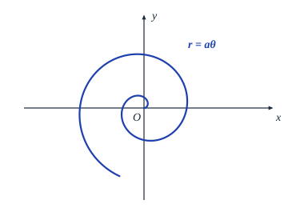
(2) 对数螺线（又称等角螺线）
$$r = a\mathrm{e}^\theta$$
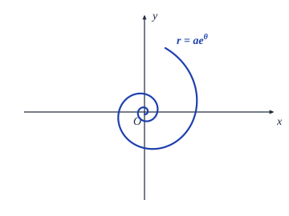
(3) 双曲螺线
$$r\theta = a$$
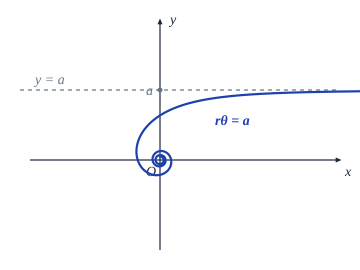
(4) 圆的渐开线
$$\begin{cases} x = a(\cos t + t\sin t), \\ y = a(\sin t - t\cos t) \end{cases}$$
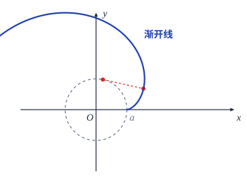
(5) 摆线（又称旋轮线）
$$\begin{cases} x = a(t - \sin t), \\ y = a(1 - \cos t) \end{cases}$$
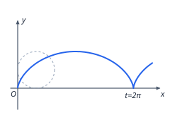
(6) 星形线
$$\begin{cases} x = a\cos^3 t, \\ y = a\sin^3 t \end{cases} \quad \left(\text{或 } x^{\frac{2}{3}} + y^{\frac{2}{3}} = a^{\frac{2}{3}}\right)$$
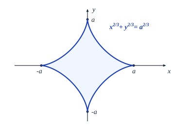
(7) 三叶玫瑰线
$$r = a\cos 3\theta$$
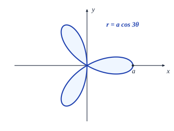
(8) 三叶玫瑰线
$$r = a\sin 3\theta$$
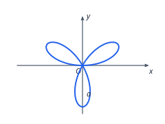
(9) 四叶玫瑰线
$$r = a\cos 2\theta$$
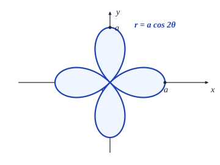
(10) 四叶玫瑰线
$$r = a\sin 2\theta$$
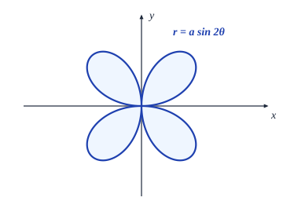
(11) 双纽线
$$r^2 = a^2\cos 2\theta \quad \left(\text{或 } (x^2 + y^2)^2 = a^2(x^2 - y^2)\right)$$
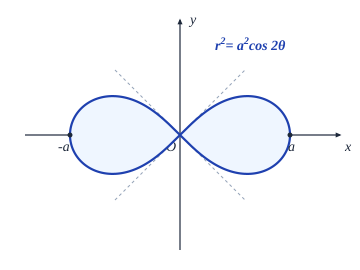
(12) 心脏线
$$r = a(1 - \cos\theta) \quad \left(\text{或 } x^2 + y^2 + ax = a\sqrt{x^2 + y^2}\right)$$
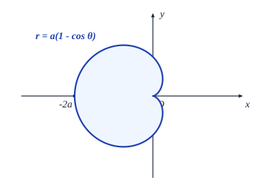
(13) Descartes 叶形线
$$x^3 + y^3 = 3axy \quad \left(\text{或 } \begin{cases} x = \dfrac{3at}{1+t^3}, \\ y = \dfrac{3at^2}{1+t^3} (= tx) \end{cases}\right)$$
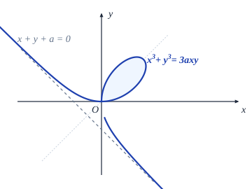
(14) 蔓叶线
$$y^2(2a - x) = x^3$$
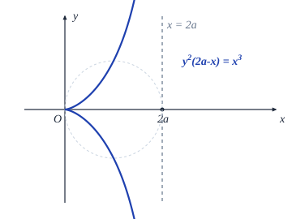
(15) 箕舌线
$$y = \frac{8a^3}{x^2 + 4a^2} \quad \left(\text{或 } \begin{cases} x = 2a\tan\theta, \\ y = 2a\cos^2\theta \end{cases}\right)$$
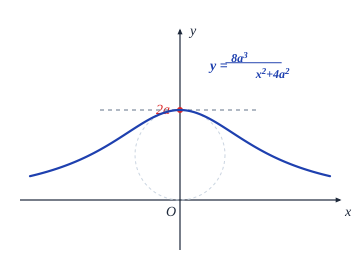
(16) 斜抛物线
$$x^{\frac{1}{2}} + y^{\frac{1}{2}} = a^{\frac{1}{2}} \quad \left(\text{或 } \begin{cases} x = a\cos^4 t, \\ y = a\sin^4 t \end{cases}\right)$$
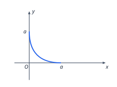
(17) 悬链线
$$y = a\cosh\frac{x}{a} = \frac{a}{2}\left(\mathrm{e}^{\frac{x}{a}} + \mathrm{e}^{-\frac{x}{a}}\right)$$
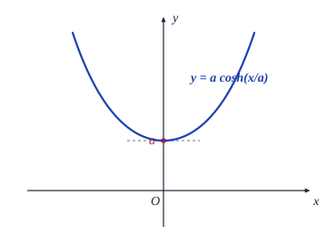
(18) 概率曲线
$$y = \mathrm{e}^{-x^2}$$
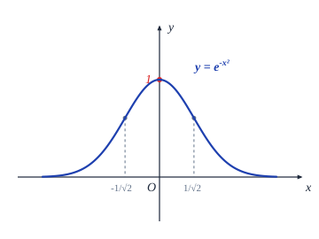
§5 微积分实际应用举例
微元法
我们先回忆一下求曲边梯形面积 $S$ 的步骤：对区间 $[a, b]$ 作划分
$$ T: a = x_0 < x_1 < x_2 < \cdots < x_n = b, $$然后在小区间 $[x_{i-1}, x_i]$ 中任取点 $\xi_i$，并记 $\Delta x_i = x_i - x_{i-1}$，这样就得到了小曲边梯形面积的近似值 $\Delta S_i \approx f(\xi_i)\Delta x_i$，最后，将所有的小曲边梯形面积的近似值相加，再取极限，就得到
$$ S = \lim_{\|T\| \to 0} \sum_{i=1}^n f(\xi_i)\Delta x_i = \int_a^b f(x)\,\mathrm{d}x. $$对于上述步骤，我们可以换一个角度来看：将分点 $x_{i-1}$ 和 $x_i$ 分别记为 $x$ 和 $x + \Delta x$，将区间 $[x, x + \Delta x]$ 上的小曲边梯形的面积记为 $\Delta S$，并取 $\xi = x$，于是就有 $\Delta S \approx f(x)\Delta x$．然后令 $\Delta x \to 0$，这相当于对自变量作微分，这样 $\Delta x$ 变成 $\mathrm{d}x$，$\Delta S$ 变成 $\mathrm{d}S$，于是上面的近似等式就变成微分形式下的严格等式 $\mathrm{d}S = f(x)\,\mathrm{d}x$．最后，把对小曲边梯形面积的近似值进行相加，再取极限的过程视作对微分形式 $\mathrm{d}S = f(x)\,\mathrm{d}x$ 在区间 $[a, b]$ 上求定积分，就得到
$$ S = \int_a^b f(x)\,\mathrm{d}x. $$根据上面的理解，在解决实际问题时，我们可以简捷地按照步骤
了解了方法的实质以后，上述过程还可以进一步简化：即一开始就将小区间形式地取为 $[x, x+\mathrm{d}x]$（$\mathrm{d}x$ 称为 $x$ 的微元），然后根据实际问题得出微分形式 $\mathrm{d}S = f(x)\,\mathrm{d}x$（$\mathrm{d}S$ 称为 $S$ 的微元），再在区间 $[a, b]$ 上求积分，也就是
在这一过程中，微元 $\mathrm{d}x$ 的作用实际上具有两重性．首先，$\mathrm{d}x$ 被当作一个相对静止的有限量，这时根据所考虑的具体问题建立的 $\mathrm{d}S$ 与 $\mathrm{d}x$ 的关系式是近似成立的．然后，再将 $\mathrm{d}x$ 看成无穷小量，这时关系式
$$ \mathrm{d}S = f(x)\,\mathrm{d}x $$严格成立，便可对其进行积分了．
这种处理问题和解决问题的方法称为微元法．微元法略去了 $\Delta x \to 0$ 的极限过程以及在运算过程中可能出现的高阶无穷小量，使用起来非常方便，而且有上述严格的数学基础，在解决实际问题中应用极为广泛，如 §4 中计算曲线的弧长、几何体的体积、旋转曲面的面积等公式都可以直接用微元法来导出，下面我们举一些其他类型的例子．
由静态分布求总量
我们首先考虑静态分布问题．设一根长度 $l$ 的直线段上分布着某种物理量（如质量、热量、电荷量等等），将其平放在 $x$ 轴的正半轴上，使它的一头与原点重合，若它在 $x$ 处的密度（称为线密度）可由某个连续的分布函数 $\rho(x)$ 表示 ($x \in [0, l]$)，由微元法，它在 $[x, x+\mathrm{d}x]$ 上的物理量 $\mathrm{d}Q$ 为
$$ \mathrm{d}Q = \rho(x)\,\mathrm{d}x, $$对等式两边在 $[0, l]$ 上积分，就得到由分布函数求总量的公式
$$ Q = \int_0^l \rho(x)\,\mathrm{d}x. $$如图 7.5.1 的一根金属棒，其密度分布为 $\rho(x) = 2x^2 + 3x + 6\ (\mathrm{kg/m})$，求这根金属棒的质量 $m$．
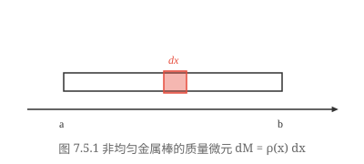
解
$$ m = \int_0^6 (2x^2 + 3x + 6)\,\mathrm{d}x = \left.\left(\frac{2}{3}x^3 + \frac{3}{2}x^2 + 6x\right)\right|_0^6 = 234\ (\mathrm{kg}). $$这个问题可以作以下的推广：
(1) 假定物理量分布在一个平面区域上，$x$ 的变化范围为区间 $[a, b]$．如果过 $x\ (a \le x \le b)$ 点并且垂直于 $x$ 轴的直线与该平面区域之交上的物理量的密度可以用 $f(x)$ 表示，或者说该平面区域在横坐标位于 $[x, x+\mathrm{d}x]$ 中的部分上的物理量可以表示为 $f(x)\,\mathrm{d}x$，那么由类似的讨论，可以得到这个区域上的总物理量为
$$ Q = \int_a^b f(x)\,\mathrm{d}x. $$求圆心在水下 $10\,\mathrm{m}$，半径为 $1\,\mathrm{m}$ 的竖直放置的圆形铁片（如图 7.5.2）所受到的水压力．
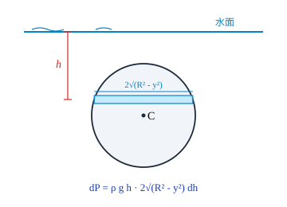
解 由物理定律，浸在液体中的物体在深度为 $h$ 的地方所受到的压强为
$$ p = h \cdot \rho g, $$这里，$\rho$ 是液体的密度，$g$ 是重力加速度．
以铁片的圆心为原点、沿铅垂线方向向下为 $x$ 轴的正向建立坐标系，于是铁片在深度为 $10 + x$ 处 ($-1 \le x \le 1$) 受到的压强为 $(10 + x)\rho g$．在圆铁片上截取与水面平行、以微元 $\mathrm{d}x$ 为宽度的一条带域，则带域的面积为
$$ \mathrm{d}S = 2\sqrt{1 - x^2}\,\mathrm{d}x, $$所以带域上所受到的压力为
$$ \mathrm{d}F = 2\rho g\sqrt{1 - x^2}\cdot (10 + x)\,\mathrm{d}x, $$于是铁片所受到的水压力为
$$ F = 2\rho g \int_{-1}^1 \sqrt{1 - x^2}\cdot (10 + x)\,\mathrm{d}x = 10\pi\rho g\ (\mathrm{N}). $$（取水密度 $\rho = 1000\,\mathrm{kg/m^3}$ 时，$F = 10^4\pi g\,\mathrm{N}$．）
这个结论还可以推广到立体区域去，请读者自行思考．事实上，§4 的第三部分给出了求三维空间中夹在平面 $x = a$ 和 $x = b$ 之间的几何体的体积公式：设过 $x$ 点且与 $x$ 轴垂直的平面与该几何体相截，截面积为 $A(x)$，则几何体的体积为
$$ V = \int_a^b A(x)\,\mathrm{d}x. $$此式就可以看成是应用本方法的一个特例，其中物理量的密度函数 $A(x)$ 是截面的面积．
(2) 假定物理量是分布在一条平面曲线
$$ \begin{cases} x = x(t), \\ y = y(t), \end{cases} \quad t \in [T_1, T_2] $$上，分布函数（即物理量的密度）为 $f(t)$，在 $(x(t), y(t))$ 处截取一段长度为 $\mathrm{d}l$ 的弧，那么在这段弧上的物理量 $\mathrm{d}Q$ 为
$$ \mathrm{d}Q = f(t)\,\mathrm{d}l. $$利用弧长的微分公式，
$$ \mathrm{d}Q = f(t)\,\mathrm{d}l = f(t)\sqrt{x'^2(t) + y'^2(t)}\,\mathrm{d}t, $$关于 $t$ 在 $[T_1, T_2]$ 上积分，就得到
$$ Q = \int_{T_1}^{T_2} f(t)\,\mathrm{d}l = \int_{T_1}^{T_2} f(t)\sqrt{x'^2(t) + y'^2(t)}\,\mathrm{d}t. $$这个结论可以推广到空间曲线的情况．
如图 7.5.3，若上半个金属环 $x^2 + y^2 = R^2\ (y \ge 0)$ 上的任何一点处的电荷线密度等于该点到 $y$ 轴的距离的平方，求环上的总电量．
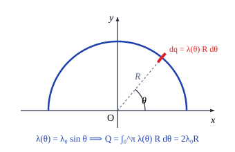
解 将金属环的方程写成参数形式
$$ \begin{cases} x = R\cos t, \\ y = R\sin t, \end{cases} \quad t \in [0, \pi], $$于是 $\mathrm{d}l = \sqrt{x'^2(t) + y'^2(t)}\,\mathrm{d}t = R\,\mathrm{d}t$．分布函数 $f(t) = [x(t)]^2 = R^2\cos^2 t$，因此
$$ \mathrm{d}Q = f(t)\,\mathrm{d}l = R^3\cos^2 t\,\mathrm{d}t, $$所以环上的总电量为
$$ Q = R^3 \int_0^\pi \cos^2 t\,\mathrm{d}t = \frac{R^3\pi}{2}. $$§4 的第四部分求旋转曲面的面积也是本方法的一个特殊情况，请读者考虑其分布函数的物理意义是什么．
(3) 这种类型的问题远非只局限于物理学的范畴，无论是自然科学还是社会科学中，但凡给出的是某变量的分布“密度”（比如，人口问题中的人口出生密度、交通问题中的车流密度等等）而需要求总量的，都可以用上述的思路求解．
求动态效应
除了上述这些静态的物理量之外，还有一类物理量是通过运动而产生的，或者说是另一个物理量持续作用的效果．比如，“位移”是速度作用了一段时间的结果；“功”是力作用了一段距离的结果，等等．
在 §1 中已经知道，以速度 $v(t)$ 做变速运动的物体在 $[T_1, T_2]$ 走过的路程为
$$ S = \int_{T_1}^{T_2} v(t)\,\mathrm{d}t, $$这可以用微元法来理解：在小区间 $[t, t+\mathrm{d}t]$ 上速度可近似地看作是 $v(t)$，因此走过的一小段路程为
$$ \mathrm{d}S = v(t)\,\mathrm{d}t, $$两边求积分，就得到了前面的结果．这样的思路可以运用到所有这类问题中去．
一个内半径为 $R$ 的圆柱形汽缸，如图 7.5.4，点火后于时刻 $t_0$ 到 $t_1$ 将活塞从 $x = a$ 处推至 $x = b$ 处 ($t_0$ 与 $t_1$ 非常接近)，求它在这段时间中的平均功率．
解 由于 $t_0$ 与 $t_1$ 非常接近，可以认为在这段时间内汽缸中的温度没有变化，由物理学定律，汽缸中气体的压强 $p$ 与体积 $V$ 成反比，即
$$ p = \frac{C}{V}, $$$C$ 是点火瞬间汽缸中气体的压强 $p_0$ 与体积 $aS$ 的乘积（$S$ 为活塞的截面积 $\pi R^2$）．所以当活塞在 $x$ 处时，作用在活塞上的压力为
$$ F = p \cdot S = \frac{C}{V}S = \frac{C}{Sx}S = \frac{C}{x}, $$利用微元法，活塞移动 $\mathrm{d}x$ 距离所做的功可表示为
$$ \mathrm{d}W = F\,\mathrm{d}x = \frac{C}{x}\,\mathrm{d}x, $$于是，所求的平均功率为
$$ N = \frac{W}{T} = \frac{C}{t_1 - t_0}\int_a^b \frac{\mathrm{d}x}{x} = \frac{ap_0 S}{t_1 - t_0}\ln\frac{b}{a}. $$简单数学模型和求解
我们在第五章 §5 中已经指出，要用数学技术去解决实际问题，首先必须建立数学模型．由于最重要的数学建模工具是微分，而微分与积分互为逆运算，所以积分便理所当然地成为求解数学模型的有力手段．将微分与积分结合起来，就可以为许多实际问题建立起相应的数学关系．（我们这里只考虑能直接用积分求解的情况，而不涉及一般的求解微分方程的方法．）
比如，对例 5.5.7 给出的 Malthus 人口模型
$$ \begin{cases} p'(t) = \lambda p(t), \\ p(t_0) = p_0, \end{cases} $$在学习了积分以后，我们可以直接对微分等式
$$ \frac{\mathrm{d}p}{p} = \lambda\,\mathrm{d}t $$的两边在 $[t_0, t]$ 上求积分，这时 $p$ 的变化范围相应地为 $[p_0, p]$，
$$ \int_{p_0}^p \frac{\mathrm{d}p}{p} = \lambda \int_{t_0}^t \mathrm{d}t, $$于是
$$ \ln\frac{p}{p_0} = \lambda(t - t_0), $$即
$$ p = p_0 \mathrm{e}^{\lambda(t - t_0)}. $$下面再举几个简单的例子．
设 $A$ 在初始时刻从坐标原点沿 $y$ 轴正向前进，与此同时 $B$ 于 $[a, 0]$ 处开始保持距离 $a$ 对 $A$ 进行跟踪（即 $B$ 的前进方向始终对着 $A$ 的位置，并与 $A$ 始终保持距离 $a$），求 $B$ 的运动轨迹（如图 7.5.5）．
解 设 $B$ 的运动轨迹为 $y = y(x)$，按跟踪的要求和导数的几何意义，容易得到数学模型
$$ \begin{cases} y' = -\dfrac{\sqrt{a^2 - x^2}}{x}, \\ y(a) = 0. \end{cases} $$两边求定积分
$$ \int_0^y \mathrm{d}y = -\int_a^x \frac{\sqrt{a^2 - x^2}}{x}\,\mathrm{d}x, $$即得到 $B$ 的运动轨迹方程为
$$ y = a\ln\frac{a + \sqrt{a^2 - x^2}}{x} - \sqrt{a^2 - x^2}. $$这也可以看成一个重物 $B$ 被 $A$ 用一根长度为 $a$ 的绳子拖着走时留下的轨迹，所以该曲线又被称为曳物线（或曳线）．
火箭是靠将燃料变成气体向后喷射，即甩去一部分质量来得到前进的动力的．
如图 7.5.6，设在时刻 $t$ 火箭的总质量为 $M(t)$，速度为 $v(t)$，从而其动量为 $M(t)v(t)$．在从 $t$ 到 $t+\mathrm{d}t$ 时间段中，有部分燃料以相对于火箭体的常速度 $u$ 被反向喷射出去（$u$ 是由火箭的推进器的结构和性能决定的，与火箭本身的飞行速度无关），在时刻 $t+\mathrm{d}t$ 火箭质量为 $M(t+\mathrm{d}t)$，速度为 $v(t+\mathrm{d}t)$，相应地，喷射掉的燃料质量为 $M(t) - M(t+\mathrm{d}t)$，而其速度为 $v(t+\mathrm{d}t) - u$，且此时系统的动量等于火箭剩余部分的动量与燃料的动量之和．
因此在时间段 $[t, t+\mathrm{d}t]$ 中，系统动量的改变量为
$$ \begin{aligned} & \{M(t+\mathrm{d}t)v(t+\mathrm{d}t) + [M(t) - M(t+\mathrm{d}t)][v(t+\mathrm{d}t) - u]\} - M(t)v(t) \\ &= M(t)[v(t+\mathrm{d}t) - v(t)] + [M(t+\mathrm{d}t) - M(t)]u \\ &= M(t)v'(t)\,\mathrm{d}t + u M'(t)\,\mathrm{d}t. \end{aligned} $$再由冲量定律，动量的改变量等于力与作用时间的乘积，即冲量 $F\,\mathrm{d}t$，这样，就得到火箭运动的微分方程为
$$ M\frac{\mathrm{d}v}{\mathrm{d}t} = F - u\frac{\mathrm{d}M}{\mathrm{d}t}, $$这里 $F$ 是作用于火箭系统的外力，$-u\dfrac{\mathrm{d}M}{\mathrm{d}t}$ 称为火箭的反推力．
特别地，当火箭在地球表面垂直向上发射时，$F = -Mg$，方程成为
$$ \begin{cases} \dfrac{\mathrm{d}v}{\mathrm{d}t} = -g - \dfrac{u}{M}\dfrac{\mathrm{d}M}{\mathrm{d}t}, \\ v(0) = 0, \quad M(0) = M_0, \end{cases} $$两边在 $[0, t]$ 上积分，
$$ \int_0^t v'(t)\,\mathrm{d}t = -\int_0^t g\,\mathrm{d}t - u\int_0^t \frac{M'(t)}{M(t)}\,\mathrm{d}t, $$就得到著名的齐奥尔科夫斯基公式：
$$ v(t) = u\ln\frac{M_0}{M(t)} - gt. $$Malthus 人口模型的解
$$ p = p_0 \mathrm{e}^{\lambda(t - t_0)} $$当 $t \to \infty$ 时有 $p(t) \to \infty$，这显然是荒谬的，因为人口的数量增加到一定程度后，自然资源和环境条件就会对人口的继续增长起限制作用，并且限制的力度随人口的增加而越来越强．也就是说，在任何一个给定的环境和资源条件下，人口的增长不可能是无限的，它必定有一个上界 $p_{\max}$．
因此，荷兰生物数学家 Verhulst 认为，人口的增长速率应随着 $p(t)$ 接近 $p_{\max}$ 而越来越小，他提出了一个修正的人口模型
$$ \begin{cases} p'(t) = \lambda\left[1 - \dfrac{p(t)}{p_{\max}}\right]p(t), \\ p(t_0) = p_0. \end{cases} $$将含有 $p$ 的项全部集中到左边，两边在 $[t_0, t]$ 上积分，
$$ \int_{p_0}^p \frac{\mathrm{d}p}{p_{\max}\cdot p - p^2} = \frac{\lambda}{p_{\max}}\int_{t_0}^t \mathrm{d}t, $$利用有理函数的积分公式，即可解出
$$ p = \frac{p_{\max}}{1 + \left(\dfrac{p_{\max}}{p_0} - 1\right)\mathrm{e}^{-\lambda(t - t_0)}}, $$当 $t \to \infty$ 时有 $p(t) \to p_{\max}$．
美国和法国都曾用这个模型预测过人口，结果是令人满意的．
从 Kepler 行星运动定律到万有引力定律
最后，我们用 Kepler 的行星运动三大定律、Newton 第二运动定律再加上微积分来导出万有引力定律，以作为本节的结束．
对任意一个确定的行星，由 Kepler 第一定律，以太阳（即椭圆的一个焦点）为极点，椭圆的长轴为极轴建立极坐标，则行星的轨道方程为
$$ r = \frac{p}{1 - e\cos\theta}, $$这里 $p = \dfrac{b^2}{a}$ 是焦参数，$e = \sqrt{1 - \dfrac{b^2}{a^2}}$ 是离心率，$a$ 和 $b$ 分别是椭圆的半长轴和半短轴．
如图 7.5.7，设在时刻 $t$ 行星与太阳的距离为 $r = r(t)$，它们的连线与极轴的夹角为 $\theta = \theta(t)$，则行星的坐标可以用向量记号表示成 $\boldsymbol{r} = (r\cos\theta, r\sin\theta)$．
记 $\mathrm{d}A$ 是极径转过角度 $\mathrm{d}\theta$ 所扫过的那块椭圆的面积（阴影部分），由极坐标下的面积公式，
$$ \mathrm{d}A = \frac{1}{2}r^2\,\mathrm{d}\theta, $$由 Kepler 第二定律，单位时间中扫过的面积
$$ \frac{\mathrm{d}A}{\mathrm{d}t} = \frac{1}{2}r^2\omega = \text{常数}, $$这里 $\omega = \dfrac{\mathrm{d}\theta}{\mathrm{d}t}$ 表示行星运动的角速度．
记行星绕太阳运行一周的时间为 $T$，则经过 $T$ 时间极径所扫过的面积恰为整个椭圆的面积 $\pi ab$，即
$$ \pi ab = \int_0^T \frac{\mathrm{d}A}{\mathrm{d}t}\,\mathrm{d}t = \frac{1}{2}r^2\omega T, $$因此常数
$$ r^2\omega = \frac{2\pi ab}{T}, $$两边对 $t$ 求导后得到
$$ (r^2\omega)' = 2r\dot{r}\omega + r^2\dot{\omega} = 0, $$即
$$ 2\dot{r}\omega + r\dot{\omega} = 0. $$这里，记行星沿极径方向的速度和加速度分别为 $\dfrac{\mathrm{d}r}{\mathrm{d}t} = \dot{r}$ 和 $\dfrac{\mathrm{d}^2 r}{\mathrm{d}t^2} = \ddot{r}$（称为径向速度和径向加速度），角加速度为 $\dfrac{\mathrm{d}\omega}{\mathrm{d}t} = \dot{\omega}$（用字母上面加点表示对 $t$ 的导数是 Newton 的记号），则行星在 $x$ 方向和 $y$ 方向上的加速度分量分别为
$$ \begin{aligned} \frac{\mathrm{d}^2(r\cos\theta)}{\mathrm{d}t^2} &= \ddot{r}\cos\theta - 2\dot{r}\omega\sin\theta - r[\dot{\omega}\sin\theta + \omega^2\cos\theta] \\ &= (\ddot{r} - r\omega^2)\cos\theta - (2\dot{r}\omega + r\dot{\omega})\sin\theta \\ &= (\ddot{r} - r\omega^2)\cos\theta, \end{aligned} $$ $$ \begin{aligned} \frac{\mathrm{d}^2(r\sin\theta)}{\mathrm{d}t^2} &= \ddot{r}\sin\theta + 2\dot{r}\omega\cos\theta + r[\dot{\omega}\cos\theta - \omega^2\sin\theta] \\ &= (2\dot{r}\omega + r\dot{\omega})\cos\theta + (\ddot{r} - r\omega^2)\sin\theta \\ &= (\ddot{r} - r\omega^2)\sin\theta. \end{aligned} $$记 $\boldsymbol{r}_0 = \dfrac{\boldsymbol{r}}{r} = (\cos\theta, \sin\theta)$ 是 $\boldsymbol{r}$ 方向上的单位向量，于是，得到加速度向量
$$ \boldsymbol{a} = (\ddot{r} - r\omega^2)\boldsymbol{r}_0, $$即行星在任一点的加速度的方向恰与它的极径同向，加速度的值为：$\ddot{r} - r\omega^2$．
为了求出 $\ddot{r} - r\omega^2$，将椭圆方程
$$ p = r(1 - e\cos\theta) $$两边求二阶导数，注意到 $p$ 是焦参数即常数，
$$ \begin{aligned} 0 = \ddot{p} &= \ddot{r}(1 - e\cos\theta) + 2\dot{r}(e\omega\sin\theta) + re(\dot{\omega}\sin\theta + \omega^2\cos\theta) \\ &= \ddot{r} - (\ddot{r} - r\omega^2)e\cos\theta + (2\dot{r}\omega + r\dot{\omega})e\sin\theta \\ &= \ddot{r} - (\ddot{r} - r\omega^2)e\cos\theta \\ &= (\ddot{r} - r\omega^2)(1 - e\cos\theta) + r\omega^2 \\ &= \frac{\ddot{r} - r\omega^2}{r}\cdot p + r\omega^2, \end{aligned} $$所以
$$ \ddot{r} - r\omega^2 = -\frac{(r^2\omega)^2}{r^2}\cdot\frac{1}{p} = -\frac{4\pi^2 a^2 b^2}{T^2}\cdot\frac{a}{b^2}\cdot\frac{1}{r^2} = -4\pi^2\cdot\frac{a^3}{T^2}\cdot\frac{1}{r^2}. $$最后，由 Newton 第二运动定律和 Kepler 第三定律即 $\dfrac{a^3}{T^2} = \text{常数}$，便有
$$ \boldsymbol{F} = m\boldsymbol{a} = m(\ddot{r} - r\omega^2)\boldsymbol{r}_0 = -\left(\frac{4\pi^2}{M}\cdot\frac{a^3}{T^2}\right)\cdot\frac{Mm}{r^2}\boldsymbol{r}_0 = -G\frac{Mm}{r^2}\boldsymbol{r}_0, $$这里 $M$ 是太阳的质量，
$$ G = \frac{4\pi^2}{M}\frac{a^3}{T^2} \approx 6.67 \times 10^{-11}\ (\mathrm{N\cdot m^2/kg^2}) $$称为引力常量．
导出万有引力定律是人类历史上最成功的数学模型之一，它的结论为以后一系列的观测和实验数据所证实（其中最为人津津乐道的是发现海王星），它的适用范围从天体运动一直延展到微观世界，令人信服地定量地解释了许多既有的物理现象，并成为探索未知世界的有力工具．
习题 7.5
一根 $10\,\mathrm{m}$ 长的轴，密度分布为 $\rho(x) = (0.3x + 6)\,\mathrm{kg/m}\ (0 \le x \le 10)$，求轴的质量．
已知抛物线状电缆 $y = x^2\ (-1 \le x \le 1)$ 上的任一点处的电荷线密度与该点到 $y$ 轴的距离成正比，在 $(1, 1)$ 处的密度为 $q$，求此电缆上的总电量．
水库的闸门是一个等腰梯形，上底 $36\,\mathrm{m}$，下底 $24\,\mathrm{m}$，高 $16\,\mathrm{m}$，水平面距上底 $4\,\mathrm{m}$，求闸门所受到的水压力．（水的密度为 $1000\,\mathrm{kg/m^3}$．）
一个弹簧满足圆柱螺线方程
$$ \begin{cases} x = a\cos t, \\ y = a\sin t, & t > 0\ (a > 0, b > 0), \\ z = bt, \end{cases} $$其上任一点处的密度与它到 $Oxy$ 平面的距离成正比，试求其第一圈的质量．
一个圆柱形水池半径 $10\,\mathrm{m}$，高 $30\,\mathrm{m}$，内有一半的水，求将水全部抽干所要做的功．
半径为 $r$ 的球恰好没于水中，球的密度为 $\rho$，现在要将球吊出水面，最少要做多少功？
半径为 $r$ 密度为 $\rho$ 的球壳以角速度 $\omega$ 绕其直径旋转，求它的动能．
使某个自由长度为 $1\,\mathrm{m}$ 的弹簧伸长 $2.5\,\mathrm{cm}$ 需费力 $15\,\mathrm{N}$，现将它从 $1.1\,\mathrm{m}$ 拉至 $1.2\,\mathrm{m}$，问要做多少功？
一物体的运动规律为 $s = 3t^3 - t$，介质的阻力与速度的平方成正比，求物体从 $t = 1$ 运动至 $t = T$ 时阻力所做的功．
半径为 $1\,\mathrm{m}$，高为 $2\,\mathrm{m}$ 的直立的圆柱形容器中充满水，拔去底部的一个半径为 $1\,\mathrm{cm}$ 的塞子后水开始流出，试导出水面高度 $h$ 随时间变化的规律，并求水完全流空所需的时间．（水面比出水口高 $h$ 时，出水速度 $v = 0.6 \times \sqrt{2gh}$．）
上题中的圆柱形容器改为何种旋转体容器，才能使水流出时水面高度下降是匀速的．
镭的衰变速度与它的现存量成正比，设 $t_0$ 时有镭 $Q_0\,\mathrm{g}$，经 $1600$ 年它的量减少了一半，求镭的衰变规律．
将 A 物质转化为 B 物质的化学反应速度与 B 物质的浓度成反比，设反应开始时有 B 物质 $20\%$，半小时后有 B 物质 $25\%$，求 B 物质的浓度的变化规律．
设 $[t, t+\mathrm{d}t]$ 中的人口增长量与 $p_{\max} - p(t)$ 成正比，试导出相应的人口模型，画出人口变化情况的草图并与 Malthus 和 Verhulst 人口模型加以比较．
核反应堆中，$t$ 时刻中子的增加速度与当时的数量 $N(t)$ 成正比．设 $N(0) = N_0$，证明
$$ \left[\frac{N(t_2)}{N_0}\right]^{t_1} = \left[\frac{N(t_1)}{N_0}\right]^{t_2}. $$一个 $1000\,\mathrm{m}^3$ 的大厅中的空气内含有 $a\%$ 的废气，现以 $1\,\mathrm{m}^3/\mathrm{min}$ 注入新鲜空气，混合后的空气又以同样的速率排出，求 $t$ 时刻空气内含有的废气浓度，并求使废气浓度减少一半所需的时间．
§6 定积分的数值计算
数值积分
尽管 Newton-Leibniz 公式给出了求定积分的一条捷径，但对于解决实际问题来说，光有它是远远不够的．前面我们已经指出，在整个可积函数类中，能够用初等函数表示不定积分的只占很小一部分，也就是说，对绝大部分在理论上可积的函数，并不能用 Newton-Leibniz 公式求得其定积分之值．
进一步，前面引进插值多项式时已指出，实际问题中，许多函数只是通过测量、试验等方法给出了在若干个离散点上的函数值，如果问题的最后解决有赖于求出这个函数在某个区间上的积分值（这种例子比比皆是），那么 Newton-Leibniz 公式是难有用武之地的．
所以需要寻找求定积分的各种近似方法，数值积分是其中最重要的一种．
从数值计算的观点来看，若能在 $[a, b]$ 上找到一个具有足够精度的替代 $f(x)$ 的可积函数 $\varphi(x)$，而 $\varphi(x)$ 的原函数可以用初等函数 $\Phi(x)$ 表示，比如，$\varphi(x)$ 为 $f(x)$ 的某个插值多项式，那么便可用 $\varphi(x)$ 的积分值近似地代替 $f(x)$ 的积分值，即
$$ \int_a^b f(x)\,\mathrm{d}x \approx \int_a^b \varphi(x)\,\mathrm{d}x = \left.\Phi(x)\right|_a^b. $$此外，从定积分的几何意义知道，将积分区间分得越细，小块近似面积之和与总面积就越是接近．因此，用简单函数替代被积函数，并将积分区间细化是数值积分的主要思想．
Newton-Cotes 求积公式
这是一个取等距节点的数值积分公式．
将积分区间 $[a, b]$ 以步长 $h = \dfrac{b-a}{n}$ 分成 $n$ 等份，以分点
$$ x_i = a + ih \quad (i = 0, 1, 2, \dots, n-1, n) $$为节点作 $f(x)$ 的 Lagrange 插值多项式
$$ p_n(x) = \sum_{i=0}^n \left[\prod_{\substack{j=0 \\ j \ne i}}^n \frac{x - x_j}{x_i - x_j}\right] f(x_i), $$对等式两边在 $[a, b]$ 上积分，便有
$$ \int_a^b f(x)\,\mathrm{d}x \approx \int_a^b p_n(x)\,\mathrm{d}x = (b-a)\sum_{i=0}^n C_i^{(n)} f(x_i), $$这里，
$$ \begin{aligned} C_i^{(n)} &= \frac{1}{b-a}\int_a^b \prod_{\substack{j=0 \\ j \ne i}}^n \frac{x - x_j}{x_i - x_j}\,\mathrm{d}x \quad (\text{令 } x = a + th) \\ &= \frac{h}{b-a}\int_0^n \prod_{\substack{j=0 \\ j \ne i}}^n \frac{t - j}{i - j}\,\mathrm{d}t \\ &= \frac{1}{n}\frac{(-1)^{n-i}}{i!(n-i)!}\int_0^n \prod_{\substack{j=0 \\ j \ne i}}^n (t - j)\,\mathrm{d}t. \end{aligned} $$这就是 $n$ 步 Newton-Cotes 求积公式，计算时需取 $n+1$ 个节点，相应的 $C_i^{(n)}$ 称为 Cotes 系数，它与积分区间和被积函数无关，可通过求多项式的积分事先算好．
容易看出，Cotes 系数具有如下性质：
(i) 对称性．可从 $C_i^{(n)}$ 的表达式直接算出
$$ C_i^{(n)} = C_{n-i}^{(n)}, \quad i = 0, 1, 2, \dots, n-1, n. $$(ii) 规范性．由于 Newton-Cotes 公式对 $f(x) \equiv 1$ 是精确成立的，因此
$$ \int_a^b 1\cdot\mathrm{d}x = (b-a)\sum_{i=0}^n C_i^{(n)}, $$即
$$ \sum_{i=0}^n C_i^{(n)} = 1. $$Newton-Cotes 公式将求定积分问题近似地转化一个求和问题，下面是几个常用的情况．
(1) 梯形公式
当 $n=1$ 时，由 Cotes 系数的性质，即知
$$ C_0^{(1)} = C_1^{(1)} = \frac{1}{2}, $$因此
$$ \int_a^b f(x)\,\mathrm{d}x \approx \frac{b-a}{2}[f(a) + f(b)]. $$它的几何意义是用以 $(a, 0), (a, f(a)), (b, f(b))$ 和 $(b, 0)$ 为顶点的直角梯形的面积近似代替由 $y = f(x), x = a, x = b$ 和 $x$ 轴所围成的曲边梯形的面积（如图 7.6.1），所以称为梯形公式．
(2) Simpson 公式
当 $n=2$ 时，
$$ C_0^{(2)} = \frac{1}{4}\int_0^2 (t - 1)(t - 2)\,\mathrm{d}t = \frac{1}{6} = C_2^{(2)}, \quad C_1^{(2)} = 1 - C_0^{(2)} - C_2^{(2)} = \frac{4}{6}, $$因此得到 Simpson 公式
$$ \int_a^b f(x)\,\mathrm{d}x \approx \frac{b-a}{6}\left[f(a) + 4f\left(\frac{a+b}{2}\right) + f(b)\right]. $$它的几何意义是用过点 $(a, f(a)), \left(\dfrac{a+b}{2}, f\left(\dfrac{a+b}{2}\right)\right)$ 和 $(b, f(b))$ 的抛物线 $y = p_2(x)$ 与 $x = a, x = b$ 和 $x$ 轴所围成的曲边梯形的面积，近似代替由 $y = f(x), x = a, x = b$ 和 $x$ 轴所围成的曲边梯形的面积（如图 7.6.2），所以 Simpson 公式也称为抛物线公式．
(3) Cotes 公式
当 $n=4$ 时，
$$ \begin{aligned} C_0^{(4)} &= \frac{1}{96}\int_0^4 (t-1)(t-2)(t-3)(t-4)\,\mathrm{d}t = \frac{7}{90} = C_4^{(4)}, \\ C_1^{(4)} &= -\frac{1}{24}\int_0^4 t(t-2)(t-3)(t-4)\,\mathrm{d}t = \frac{32}{90} = C_3^{(4)}, \\ C_2^{(4)} &= 1 - 2(C_0^{(4)} + C_1^{(4)}) = \frac{12}{90}, \end{aligned} $$于是得到 Cotes 公式
$$ \int_a^b f(x)\,\mathrm{d}x \approx \frac{b-a}{90}\left\{7[f(x_0) + f(x_4)] + 32[f(x_1) + f(x_3)] + 12f(x_2)\right\}, $$这里
$$ x_i = \frac{(4-i)a + ib}{4}, \quad i = 0, 1, 2, 3, 4. $$分别用以上三个公式求 $\displaystyle\int_{-1}^1 \mathrm{e}^x\,\mathrm{d}x$ 的近似值．
解 梯形公式：
$$ I_1 = \mathrm{e}^1 + \mathrm{e}^{-1} = 3.086\,161\,27\dots; $$Simpson 公式：
$$ I_2 = \frac{1}{3}(\mathrm{e}^1 + 4\mathrm{e}^0 + \mathrm{e}^{-1}) = 2.362\,053\,757\dots; $$Cotes 公式：
$$ I_4 = \frac{1}{45}\left[7(\mathrm{e}^1 + \mathrm{e}^{-1}) + 32(\mathrm{e}^{\frac{1}{2}} + \mathrm{e}^{-\frac{1}{2}}) + 12\mathrm{e}^0\right] = 2.350\,470\,904\dots, $$而积分的精确值为
$$ I = \int_{-1}^1 \mathrm{e}^x\,\mathrm{d}x = \mathrm{e} - \frac{1}{\mathrm{e}} = 2.350\,402\,387\dots $$所以，Cotes 公式的精度最高，但它要计算 5 个函数值，而梯形公式只要计算两个就够了．
设 $f^{(n+1)}(x)$ 在 $[a, b]$ 连续，则用 Newton-Cotes 公式计算 $\displaystyle\int_a^b f(x)\,\mathrm{d}x$ 的误差 $R_n(f)$ 满足估计式
$$ |R_n(f)| \le \frac{M_f h^{n+2}}{(n+1)!}\int_0^n \left|\prod_{j=0}^n (t-j)\right|\mathrm{d}t, $$这里
$$ M_f = \max_{x \in [a, b]} |f^{(n+1)}(x)|. $$证
$$ R_n(f) = \int_a^b f(x)\,\mathrm{d}x - (b-a)\sum_{i=0}^n C_i^{(n)} f(x_i) = \int_a^b f(x)\,\mathrm{d}x - \int_a^b p_n(x)\,\mathrm{d}x = \int_a^b [f(x) - p_n(x)]\,\mathrm{d}x. $$由 Lagrange 插值多项式余项定理，
$$ R_n(f) = \int_a^b \frac{f^{(n+1)}(\xi)}{(n+1)!}\prod_{i=0}^n (x - x_i)\,\mathrm{d}x, \quad \xi \in (x_{\min}, x_{\max}) $$于是
$$ \begin{aligned} |R_n(f)| &\le \int_a^b \left|\frac{f^{(n+1)}(\xi)}{(n+1)!}\prod_{i=0}^n (x - x_i)\right|\mathrm{d}x \\ &\le \frac{M_f}{(n+1)!}\int_a^b \left|\prod_{i=0}^n (x - x_i)\right|\mathrm{d}x \quad (\text{令 } x = a + th) \\ &\le \frac{M_f h^{n+2}}{(n+1)!}\int_0^n \left|\prod_{j=0}^n (t-j)\right|\mathrm{d}t. \end{aligned} $$证毕
若一个数值求积公式在被积函数是任意不高于 $n$ 次的多项式时都精确成立，而存在着一个 $n+1$ 次多项式使公式不能精确成立，则称该求积公式具有 $n$ 次代数精度．
从某种意义上说，代数精度的次数越高越好．
由上述定义和定理 7.6.1 即可得到以下推论：
$n$ 步 Newton-Cotes 求积公式的代数精度至少为 $n$．
但若 $n$ 为偶数时，推论 1 的结果还可以改进．
$n = 2k$ 步的 Newton-Cotes 求积公式的代数精度至少为 $2k+1$．
证 我们只要证明 $n = 2k$ 步的 Newton-Cotes 求积公式对 $f(x) = x^{2k+1}$ 精确成立就可以了．
此时 $f^{(2k+1)}(x) \equiv (2k+1)!$，由定理 7.6.1 证明的中间过程得到
$$ \begin{aligned} \frac{R_{2k}(f)}{h^{2k+2}} &= \int_0^{2k} \prod_{j=0}^{2k} (t - j)\,\mathrm{d}t \quad (\text{令 } u = t - k) \\ &= \int_{-k}^k \prod_{j=-k}^k (u + j)\,\mathrm{d}u \quad (\text{令 } v = -u) \\ &= (-1)^{2k+1}\int_{-k}^k \prod_{j=-k}^k (v - j)\,\mathrm{d}v \\ &= -\int_{-k}^k \prod_{j=-k}^k (v + j)\,\mathrm{d}v = -\frac{R_{2k}(f)}{h^{2k+2}}, \end{aligned} $$所以
$$ R_{2k}(f) = 0. $$证毕
实际上可以验证，当 $n$ 分别为奇数和偶数时，$n$ 步 Newton-Cotes 求积公式的代数精度恰为 $n$ 和 $n+1$．特别地，当 $n = 2$ 时，Simpson 公式具有三次代数精度，这就是一般不采用 3 步 Newton-Cotes 公式的缘故．
复化求积公式
要提高数值积分的精度，不能采用一味提高 Newton-Cotes 公式的步数的办法．理论上已经证明，$n$ 较大时，Newton-Cotes 公式的计算过程中将产生不稳定，因此实际使用时，几乎不会有人将 $n$ 取得大于 4．
既然此路不通，那就得另谋出路．一个顺理成章的思路是，先将积分区间分成若干等份，再在每一个小区间上使用低步数的 Newton-Cotes 公式，最后将各小区间上的积分近似值加起来．
(1) 复化梯形公式
将 $[a, b]$ 以步长 $h = \dfrac{b-a}{m}$ 作 $m$ 等分 $x_i = a + ih\ (i = 0, 1, 2, \dots, m-1, m)$，在每一个小区间 $[x_{i-1}, x_i]$ 使用梯形公式
$$ \int_a^b f(x)\,\mathrm{d}x = \sum_{i=1}^m \int_{x_{i-1}}^{x_i} f(x)\,\mathrm{d}x \approx \frac{h}{2}\sum_{i=1}^m [f(x_{i-1}) + f(x_i)]. $$记
$$ T_m^{(1)} = \frac{h}{2}\left[f(a) + f(b) + 2\sum_{i=1}^{m-1} f(x_i)\right], $$则 $T_m^{(1)}$ 称为将区间 $m$ 等分的复化梯形公式．
可以证明，复化梯形公式与 $\displaystyle\int_a^b f(x)\,\mathrm{d}x$ 的误差为 $O((b-a)h^2)$，与对整个区间直接使用梯形公式时的误差 $O((b-a)^3)$（定理 7.6.1）相比，精度大大提高了．
(2) 复化 Simpson 公式和复化 Cotes 公式
记 $x_{i-\frac{1}{2}}$ 为区间 $[x_{i-1}, x_i]$ 的中点，可以完全类似地得到复化 Simpson 公式，
$$ \begin{aligned} T_m^{(2)} \equiv S_m &= \frac{h}{6}\sum_{i=1}^m \left[f(x_{i-1}) + 4f\left(x_{i-\frac{1}{2}}\right) + f(x_i)\right] \\ &= \frac{h}{6}\left[f(a) + f(b) + 2\sum_{i=1}^{m-1} f(x_i) + 4\sum_{i=1}^m f\left(x_{i-\frac{1}{2}}\right)\right]. \end{aligned} $$实际计算时并不是直接按这个公式去求 $T_m^{(2)}$ 的．容易证明，复化 Simpson 公式与复化梯形公式之间存在着如下关系：
$$ T_m^{(2)} = \frac{4T_{2m}^{(1)} - T_m^{(1)}}{4 - 1}, $$将它与第五章 §4 的外推公式相比较，就知道复化 Simpson 公式实质上是对复化梯形公式做了一次外推的结果．但复化 Simpson 公式的误差为 $O((b-a)h^4)$，远远好于 $T_m^{(1)}$ 和 $T_{2m}^{(1)}$，这一现象符合我们在前面所说的，两个低精度的近似值进行适当外推后，可产生一个精度高得多的近似值．
读者可以仿照以上过程自行导出复化 Cotes 公式 $T_m^{(3)}$，并验证其满足
$$ T_m^{(3)} = \frac{4^2 T_{2m}^{(2)} - T_m^{(2)}}{4^2 - 1}. $$(3) Romberg 方法
将上面的外推的思想推广到一般的 $T_m^{(k)}$，记
$$ T_m^{(k+1)} = \frac{4^k T_{2m}^{(k)} - T_m^{(k)}}{4^k - 1}, $$就成了数值积分的 Romberg 方法，它的具体过程如下图所示．先取适当的初始值 $m$，再按 ①、②、③ $\dots$ 次序逐个计算，向下的箭头表示区间再细化一半，向右的箭头表示外推．
| ① $T_m^{(1)}$ | $\searrow$ | |||
| $\downarrow$ | ③ $T_m^{(2)}$ | $\searrow$ | ||
| ② $T_{2m}^{(1)}$ | $\nearrow$ | $\downarrow$ | ⑥ $T_m^{(3)}$ | |
| $\downarrow$ | $\searrow$ | ⑤ $T_{2m}^{(2)}$ | $\nearrow$ | $\downarrow$ |
| ④ $T_{4m}^{(1)}$ | $\nearrow$ | $\downarrow$ | $\searrow$ | ⑨ $T_{2m}^{(3)}$ |
| $\downarrow$ | ⑧ $T_{4m}^{(2)}$ | $\nearrow$ | $\downarrow$ | |
| ⑦ $T_{8m}^{(1)}$ | $\nearrow$ | ⑩ $T_m^{(4)}$ |
Romberg 方法是在计算机上实际使用的求数值积分的最重要的方法之一．具体执行时一般从 $m = 1, k = 1$ 开始，逐个计算 $T_m^{(k)}$．若对某个 $k$ 有 $|T_m^{(k)} - T_m^{(k-1)}|$ 小于预先设定的精度要求时，就将 $T_m^{(k)}$ 作为积分的近似值，计算结束；否则将小区间长度缩小二分之一，重新由复化梯形公式开始，一直到算出 $T_m^{(k+1)}$，再作上述的比较．这种根据预置的精度要求，由计算机在计算过程中自动将区间划分到最合适程度的算法称为自适应算法．
用 Romberg 方法计算 $\displaystyle\int_{-1}^1 \mathrm{e}^x\,\mathrm{d}x$ 的近似值．
解 计算结果见下表：
| $m$ | $T_m^{(1)}$ | $T_m^{(2)}$ | $T_m^{(3)}$ | $T_m^{(4)}$ |
|---|---|---|---|---|
| 1 | ① $3.086\,161\,270$ | |||
| 2 | ② $2.543\,080\,635$ | ③ $2.362\,053\,757$ | ||
| 4 | ④ $2.399\,166\,283$ | ⑤ $2.351\,194\,823$ | ⑥ $2.350\,470\,904$ | |
| 8 | ⑦ $2.362\,631\,334$ | ⑧ $2.350\,453\,017$ | ⑨ $2.350\,403\,568$ | ⑩ $2.350\,402\,494$ |
请读者自行与积分的精确值以及例 7.6.1 比较．
Gauss 型求积公式
Newton-Cotes 公式是采用 $f(x)$ 在 $[a, b]$ 中等距的 $n+1$ 个点处的函数值求积分的近似公式．很自然地，我们要问，能否通过适当地选取求积公式中的节点
$$ a = x_0 < x_1 < x_2 < \cdots < x_n = b $$和系数 $a_i^{(n)}$，来达到尽可能高的计算精度呢？
回答是肯定的——这就是下面的 Gauss 型求积公式的概念．
设使用 $[a, b]$ 上 $n+1$ 个节点 $\{x_i\}_{i=0}^n$ 的近似求积公式
$$ \int_a^b f(x)\,\mathrm{d}x \approx \sum_{i=0}^n a_i^{(n)} f(x_i) $$对于 $2n+1$ 次的任意多项式 $p_{2n+1}(x)$，都有
$$ \int_a^b p_{2n+1}(x)\,\mathrm{d}x = \sum_{i=0}^n a_i^{(n)} p_{2n+1}(x_i), $$则称该求和公式为 $[a, b]$ 上的 Gauss 型求积公式．
显然，对任意给定的 $n+1$ 个节点 $\{x_i\}_{i=0}^n$，特殊地构造 $2n+2$ 次多项式
$$ f(x) = \prod_{i=0}^n (x - x_i)^2 $$代入上式，即有左式恒大于零而右式恒等于零．这个例子告诉我们，不存在使用 $n+1$ 个节点，而对于任意 $2n+2$ 次多项式都精确成立的近似求积分公式．从这个意义上讲，Gauss 型求积公式是精度最高的数值求积公式．
Gauss 型求积公式有很多种类型，下面介绍最常用的一类．
先设 $[a, b]$ 为 $[-1, 1]$ 的情况，考虑第五章和第七章中出现过的 $n$ 次 Legendre 多项式
$$ P_n(x) = \frac{1}{2^n n!}\frac{\mathrm{d}^n}{\mathrm{d}x^n}(x^2 - 1)^n \quad (n = 0, 1, 2, \dots), $$已经知道，它在 $(-1, 1)$ 上恰有 $n$ 个不同的根，并且 $\{P_n(x)\}$ 是 $[-1, 1]$ 上的正交多项式．
利用这两个性质可以证明：
若用 $n+1$ 次 Legendre 多项式 $P_{n+1}(x)$ 的根 $\{x_i^*\}_{i=0}^n$ 作为插值节点，作 $f(x)$ 的 Lagrange 插值多项式并在 $[-1, 1]$ 上积分，由此得到的数值积分公式 $\displaystyle\sum_{i=0}^n a_i^{(n)} f(x_i^*)$ 是 $[-1, 1]$ 上的 Gauss 型求积公式，一般称为 Gauss-Legendre 求积公式．
严格证明这个结论已超出了本书的范围，此处从略，有兴趣的读者可参阅数值逼近方面的教材．
具体计算时，可以先对 $P_{n+1}(x)$ 利用函数求根的方法求出 $x_i^*$，再按关系式
$$ a_i^{(n)} = \int_{-1}^1 \prod_{\substack{j=0 \\ j \ne i}}^n \frac{x - x_j^*}{x_i^* - x_j^*}\,\mathrm{d}x = \int_{-1}^1 \frac{P_{n+1}(x)}{(x - x_i^*)[P_{n+1}(x_i^*)]'}\,\mathrm{d}x \quad (i = 0, 1, 2, \dots, n-1, n) $$算出其系数．
下表给出了节点个数 $n+1 \le 5$ 时的 Gauss-Legendre 求积公式的节点 $\{x_i^*\}_{i=0}^n$ 和系数 $a_i^{(n)}$ 的值．
| $n$ | $x_i^*$ | $a_i^{(n)}$ |
|---|---|---|
| 1 | $\pm\sqrt{\dfrac{1}{3}} \approx \pm 0.577\,350\,269\,2$ | $1$ |
| 2 | $\pm\sqrt{\dfrac{3}{5}} \approx \pm 0.774\,596\,669\,2$ | $\dfrac{5}{9} \approx 0.555\,555\,555\,6$ |
| $0$ | $\dfrac{8}{9} \approx 0.888\,888\,888\,9$ | |
| 3 | $\pm\dfrac{\sqrt{3 - 4\sqrt{0.3}}}{\sqrt{7}} \approx \pm 0.339\,981\,043\,6$ | $\dfrac{1}{2} + \dfrac{1}{12}\sqrt{\dfrac{10}{3}} \approx 0.652\,145\,154\,9$ |
| $\pm\dfrac{\sqrt{3 + 4\sqrt{0.3}}}{\sqrt{7}} \approx \pm 0.861\,136\,311\,6$ | $\dfrac{1}{2} - \dfrac{1}{12}\sqrt{\dfrac{10}{3}} \approx 0.347\,854\,845\,1$ | |
| 4 | $\pm\dfrac{1}{3}\sqrt{5 - 2\sqrt{\dfrac{10}{7}}} \approx \pm 0.538\,469\,310\,1$ | $\dfrac{3(-0.7 + 5\sqrt{0.7})}{10(-2 + 5\sqrt{0.7})} \approx 0.478\,628\,670\,5$ |
| $\pm\dfrac{1}{3}\sqrt{5 + 2\sqrt{\dfrac{10}{7}}} \approx \pm 0.906\,179\,845\,9$ | $\dfrac{3(0.7 + 5\sqrt{0.7})}{10(2 + 5\sqrt{0.7})} \approx 0.236\,926\,885\,1$ | |
| $0$ | $\dfrac{128}{225} \approx 0.568\,888\,888\,9$ |
Legendre 多项式的根全部落在 $(-1, 1)$ 上（从表中可以看到，点集 $\{x_i^*\}_{i=0}^n$ 中不包含 $x = \pm 1$ 两点），也就是说，用 Gauss-Legendre 公式计算积分的近似值时，是不用到 $f(x)$ 在积分区间的端点处的函数值的．事实上，这是所有的 Gauss 型公式的特点，学了反常积分以后会知道，对于实际计算来说，这个特性具有极为重要的意义．
用 Gauss-Legendre 公式计算 $\displaystyle\int_{-1}^1 \mathrm{e}^x\,\mathrm{d}x$ 的近似值．
解
$n = 1$：
$$ I_1 = \mathrm{e}^{0.577\,350\,269\,2} + \mathrm{e}^{-0.577\,350\,269\,2} = 2.342\,696\,088\dots; $$$n = 2$：
$$ I_2 = \frac{1}{9}\left[5(\mathrm{e}^{0.774\,596\,669\,2} + \mathrm{e}^{-0.774\,596\,669\,2}) + 8\mathrm{e}^0\right] = 2.350\,336\,928\dots; $$$n = 4$：
$$ \begin{aligned} I_4 &= 0.236\,926\,885\,1(\mathrm{e}^{0.906\,179\,845\,9} + \mathrm{e}^{-0.906\,179\,845\,9}) \\ &\quad + 0.478\,628\,670\,5(\mathrm{e}^{0.538\,469\,310\,1} + \mathrm{e}^{-0.538\,469\,310\,1}) + 0.568\,888\,888\,9\mathrm{e}^0 \\ &= 2.350\,402\,386\,58\dots \end{aligned} $$它们所花的代价与例 7.6.1 用的梯形公式、Simpson 公式和 Cotes 公式完全相同，但精度却不可同日而语．如 $n=4$ 时，在同样只计算 5 个函数值情况下，绝对误差由 $O(10^{-4})$ 减小到 $O(10^{-9})$！
当积分区间为 $[a, b]$ 时，可以先作一个变换
$$ t = \frac{b-a}{2}x + \frac{b+a}{2}, $$于是
$$ \int_a^b f(t)\,\mathrm{d}t = \frac{b-a}{2}\int_{-1}^1 f\left(\frac{b-a}{2}x + \frac{b+a}{2}\right)\mathrm{d}x, $$就可以用 Gauss-Legendre 公式求解了．因此在 $[-1, 1]$ 上建立的 Gauss-Legendre 公式可以推广到一般的积分区间上去．
除了 Gauss-Legendre 求积公式之外，还可以构造其他类型 Gauss 型求积公式，它们的基础都是定义在某个区间上的某一类特定的正交多项式，这里就不一一介绍了．
计算实习题
（在教师的指导下，编制程序在电子计算机上实际计算）
(1) 用普通的梯形公式、Simpson 公式和 Cotes 公式，计算圆周率 $\pi$ 的近似值并与精确值加以比较；
(2) 将区间 $[0, 1]$ 分成 $4$、$8$ 等份，用复化梯形公式和复化 Simpson 公式计算 $\pi$ 的近似值，并与精确值加以比较；
(3) 用 Romberg 方法计算 $\pi$ 的近似值，使它的精度达到 $O(10^{-8})$；
(4) 分别用 $n = 1, 2, 4$ 的 Gauss-Legendre 公式计算 $\pi$ 的近似值，并与前面的计算结果加以比较．
设河面宽 $20\,\mathrm{m}$，从河的一岸向另一岸每隔 $2\,\mathrm{m}$ 测得的水深（单位：$\mathrm{m}$）如下：
| $x$ | $0$ | $2$ | $4$ | $6$ | $8$ | $10$ | $12$ | $14$ | $16$ | $18$ | $20$ |
|---|---|---|---|---|---|---|---|---|---|---|---|
| $y$ | $0$ | $0.6$ | $1.4$ | $2.0$ | $2.3$ | $2.1$ | $2.5$ | $1.9$ | $1.2$ | $0.7$ | $0$ |
求河流的横断面积（如图 7.6.3）．
(1) $\displaystyle\int_0^1 \mathrm{e}^{x^2}\,\mathrm{d}x, \quad m = 16$；
(2) $\displaystyle\int_0^\pi \frac{1 - \cos x}{x}\,\mathrm{d}x, \quad m = 8$（可看成连续函数 $f(x) = \begin{cases} \dfrac{1 - \cos x}{x}, & x \ne 0, \\ 0, & x = 0 \end{cases}$ 的积分）；
(3) $\displaystyle\int_0^1 \sqrt{1 - x^3}\,\mathrm{d}x, \quad m = 8$；
(4) $\displaystyle\int_0^2 \frac{\mathrm{e}^{-x}}{1 + x^2}\,\mathrm{d}x, \quad m = 8$．
用 Romberg 方法计算 $\displaystyle\int_1^2 \frac{\mathrm{d}x}{x}$，精确到小数点后 8 位．
用一般的积分区间上的 Gauss-Legendre 公式（取 $n = 4$）计算积分 $I(N) = \displaystyle\int_0^N \mathrm{e}^{-x^2}\,\mathrm{d}x$：
(1) $N = 1$；(2) $N = 3$；(3) $N = 10$．
并与
$$ \lim_{N \to \infty} \int_0^N \mathrm{e}^{-x^2}\,\mathrm{d}x = \frac{\sqrt{\pi}}{2} $$的结果相比较．
按第 3 题 (2) 同样的观点，计算 $f(x) = \displaystyle\int_0^x \frac{\sin t}{t}\,\mathrm{d}t\ \left(x = \frac{k\pi}{3}, k = 1, 2, \dots, 6\right)$，并作出 $f(x)$ 的大致图形．